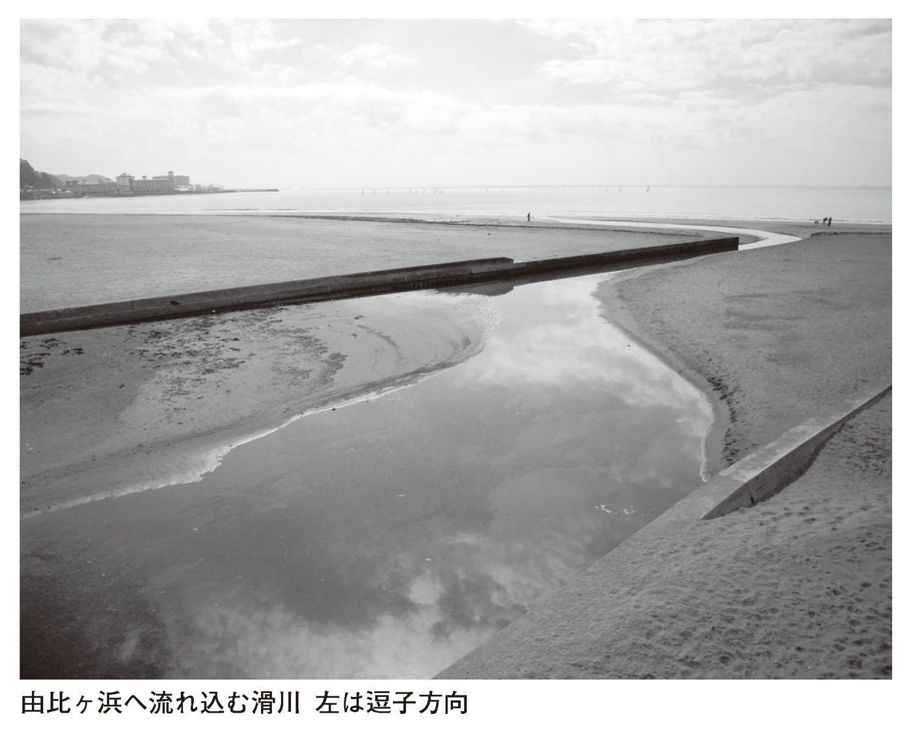
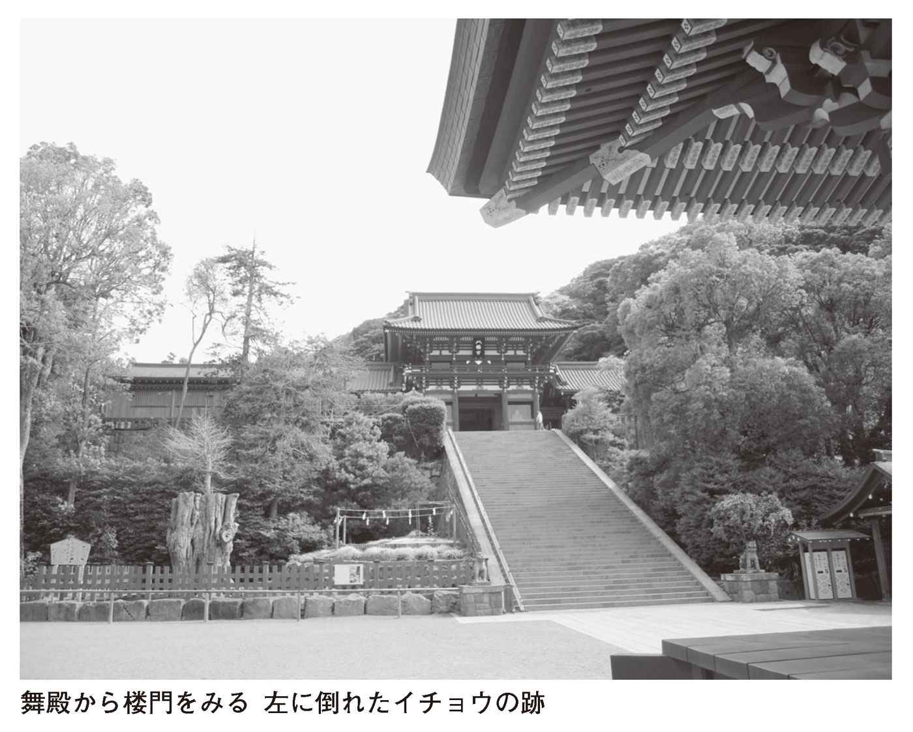
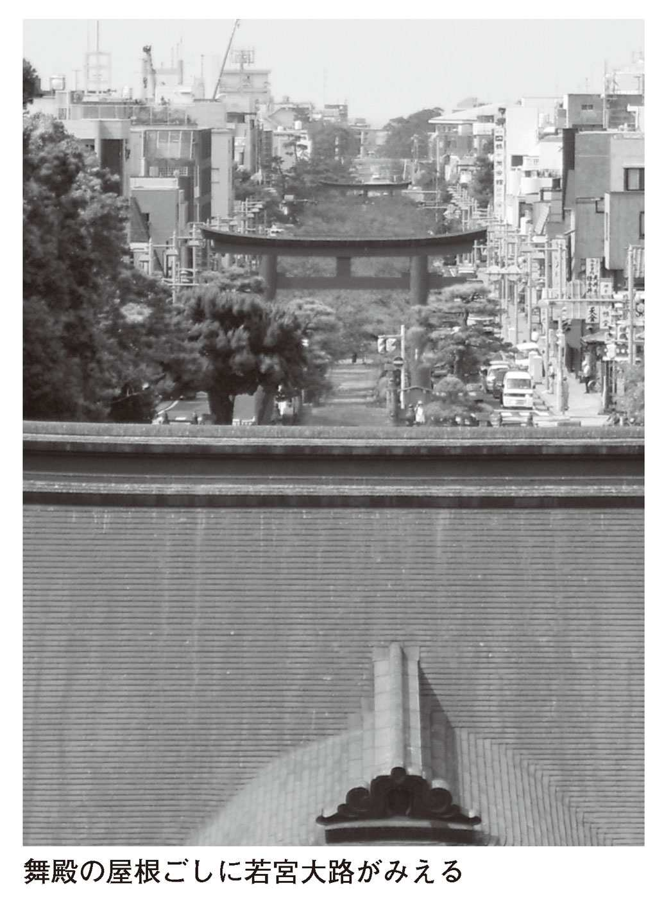
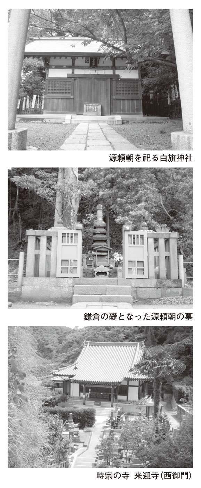
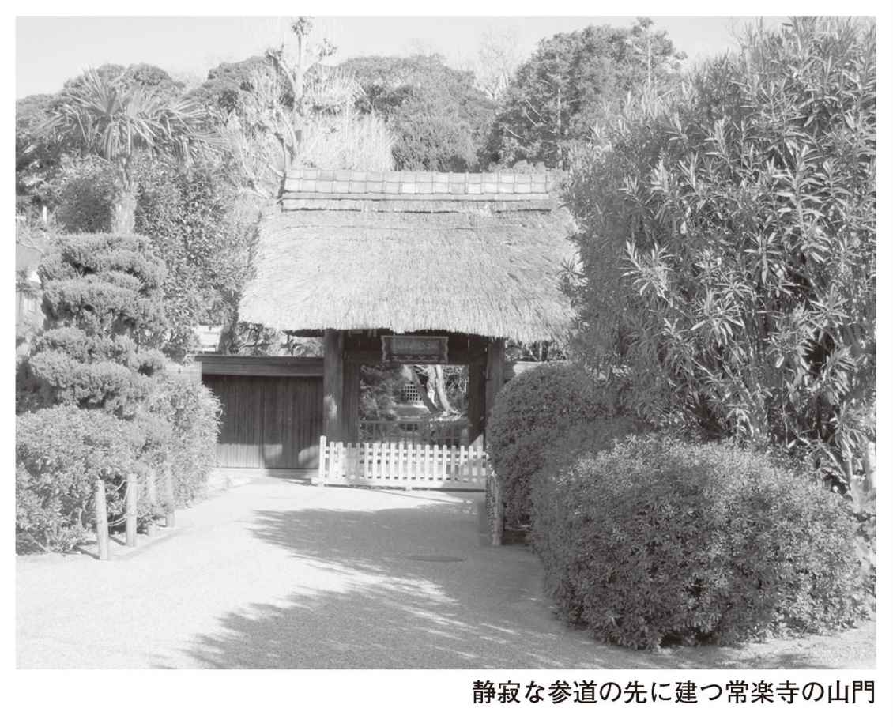
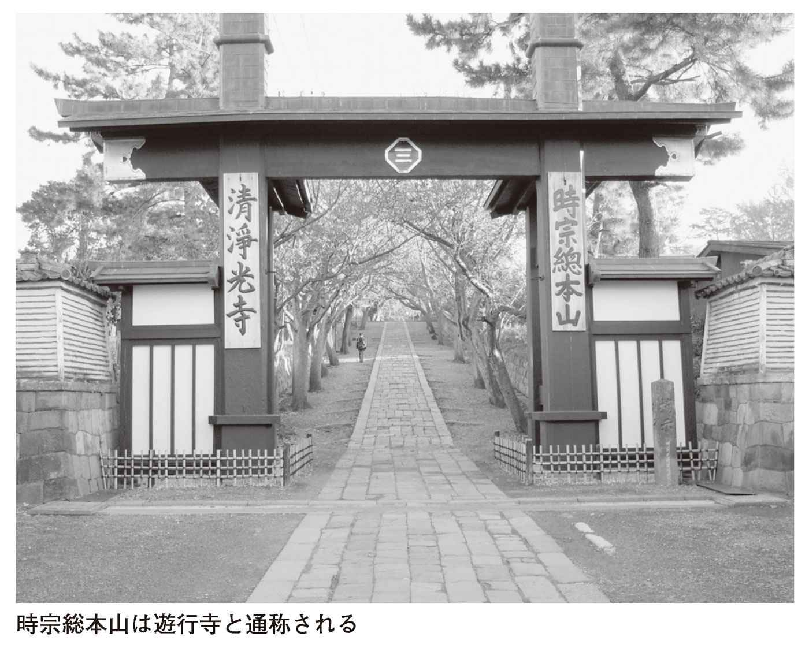

| ［決定版］ 鎌倉の寺社122を歩く | |
| 槇野 修 | |

［決定版］
鎌倉の寺社１２２を歩く
山折哲雄監修
槇野 修著
山折哲雄
鎌倉といえば、東北で育った私などの目から眺めれば、近いようでいて、じつははるかに縁遠い土地である。あれこれの珍しい物語に彩られてはいるものの、ただ歴史の上に登場してくるだけの古い武士たちの都、という印象である。
とりわけてその地を巡礼しようと思い立ったこともない。京都や奈良への途中で寄るには、いささか東海道の幹線から離れていた。
が、かつて京都という王城の中心からはるばる鎌倉をめざして旅をつづけ、忘れがたい数々の思い出を後世のために刻んだ三人のユニークな男たちがいたことが、ふと思い浮かぶ。
西行と鴨長明と道元の三人である。
まず西行であるが、かれは奥州の平泉をめざして旅に出ているが、その東下りの途次、富士山をみて、
風になびく 富士のけぶりの 空に消えて 行方も知らぬ わが思ひかな
と詠
んでいる。当時の富士は活火山だった。その噴煙が、風に吹かれて遠くたなびいているのをみていたのだろう。
鎌倉入りしたあと、西行は源頼朝に会っている。ちょうどその日、鶴岡八幡宮に参詣した頼朝は、鳥居のあたりを徘
徊
していた一人の老僧に会う。身元が西行と知れ、二人は席をかえて歌の道や弓馬のことについて話し合ったという。
二人目が、鴨長明。西行の東下りから二十数年が経ち、下賀茂神社の神官だった長明が鎌倉に下向し、将軍実朝と面会している。父の頼朝はすでに十二年ほど前、この世を去っていた。このとき長明は頼朝の墓所に詣り、
草も木も 靡 きし秋の 霜消えて 空しき苔を 払ふ山風
と詠んでいる。そのあたりは荒涼とした光景だったのだろう。鎌倉での滞在中、長明は和歌好きの実朝の席にたびたび招かれ、歌の道について語り合っている。このとき長明五十七歳、実朝二十歳である。実朝の『金槐集』には、長明の『方丈記』による影響のあとがみられるのも面白い。二人が生きていたのが飢饉と災害の時代であった背景までが浮かび上がってくる。
三人目が、道元だ。かれが鎌倉にやってきたときは、すでに源氏の三代が滅び、北条執権の時代に移っている。
当時、道元は福井越前の永平寺に籠
り、少数の弟子たちとともに坐禅修行に打ちこんでいた。深山幽谷に入り、国王や権力者には近づかないとかたく心にきめていた。その道元がなぜ鎌倉くんだりまでやってきたのか。
北条時頼に招かれたからだった。
その時頼の求めに応じて作ったとされる一〇首の和歌がのこされている。これらには宝治元年（一二四七）の日付がつけられていたが、そのなかの一首、「本来の面目を詠ず」という詞 書 のあるのが、よく知られている。
春は花 夏ほととぎす 秋は月 冬雪さえて すずしかりけり
である。
この一〇首歌の日付とされる「宝治元年」というのは、じつは鎌倉においては大変な年だった。なぜなら、このとき時頼はライバルだった三浦氏を攻め、その一族を含めた五〇〇余人がことごとく自殺して果てているからである。
それだけではなかった。その宝治合戦から間をおかず、こんどは下総の豪族千葉氏を撃って滅ぼしている。まさに電光石火の早業で、時頼は独裁のための全権をほぼ掌中におさめたのだった。
道元が鎌倉に到着したのが、それから数えてわずか三カ月たらずのころだった。
この年、道元は四十八歳、かれを心の師として招き、ひそかに心の憂悶を払おうとした時頼は、わずか二十一歳。二人のあいだには親子ほどの年齢のひらきがあった。しかし時頼はすでに二十歳そこそこで、政治の世界の陰惨と人間界の地獄をみてしまっている。かれははたして政治家としての自分の力量に自信をもっていたのだろうか。
おそらく、そうではなかったはずである。
かれは多くの親族や一族を追放し、殺害することによってはじめて執権職の座につくことができた。そのかれが一族や一門の怨念や亡霊に苦しめられなかったと考えるのはむずかしいだろう。
かれは執権職に十年在職しただけで、三十歳の若さで出家しているからだ。時頼が出家をしたのは、禅宗に帰依し禅僧の手びきによったのである。中国からやってきた蘭
渓
道
隆
や兀
庵
普
寧
などの僧を迎えて、みずからも熱心に参禅し、またかれらのために建長寺などの寺を建てている。
道元に対面したときの時頼は、まさに人生の危機に直面していた。このとき道元は時頼の導師になったかもしれないのである。のちに蘭渓道隆に与えられた宗教的地位を手にする可能性もあった。建長寺の住職に迎えられることだってあったかもしれない。
しかし道元は、ついにそのような道を選ぶことはしなかった。このときの道元と時頼の出会いと別れの場面は、鎌倉物語のもう一つの忘れがたい舞台を浮かび上がらせるだろう。
それにしても、「鎌倉の寺社」をめぐる来歴をより深く知るために欠かせないのが、やはり『吾妻鏡』という歴史書ではないか、と思う。
これを読んでまず知らされるのは、頼朝、頼家、実朝の源家三代にわたる貴種が死んだり殺されたりしたあとは、全篇ほとんど、死者たちを鎮魂するための記述に終始しているということである。
鎮まることのない怨霊を祀り、その受難の歳月を慰め、現世の天変地
夭
からの回復を祈る儀礼にみちみちていることに注意しなければならない。
鎌倉の地に中世の武家政権が誕生した背景には、このような寺社のはたらきと活動があったことを忘れてはならないだろう。鎌倉の地を歩くことは、そのような歴史の闇のなかに足を踏み入れることでもあるのである。
西行と鴨長明は、いってみれば上昇気流にのる新都市・鎌倉の輝きをかいまみることができたが、道元は、ふたたびの戦乱期を予想させる時代の暗転の空気にふれていたのかもしれない。
平成二十四年十二月十五日
古都、といえば、平城京が営まれた奈良、平安王朝の華やかな京都、そして、中世武家の首都となった鎌倉の三都となるだろう。いや、言葉どおり古都といえば奈良のことだという人もいるし、飛鳥
京
や難
波
宮
や長岡京もあげられるのではないかというが、いまは措
く。
この奈良・京都・鎌倉の三つの古都を現今の市勢としてくらべてみる。
まず、人口では（全国七八八市のうちの順位）、
奈良市は約三六万六〇〇〇人（第五五位）
京都市は約一四七万三〇〇〇人（第七位）
鎌倉市は約一七万四〇〇〇人（第一三四位）
市の面積では、
奈良市が約二七七平方キロメートル（第二七〇位）
京都市が約八二八平方キロメートル（第四六位）
鎌倉市は約三九・六平方キロメートル（第六七三位）
と、鎌倉市は二都よりはるかに人口も少なく面積も狭い。
ちなみに人口の第一位は横浜市で約三七〇万人、面積では岐阜の高山市で約二一七八平方キロメートルとなる（平成二十四年十月一日現在）。
京都、奈良、江戸東京と寺社めぐりをしてきたこの新書シリーズで「鎌倉」を取り上げることになったとき、その狭さにホッとする気分があった。なにしろ前著『江戸東京の寺社６０９を歩く』（全二巻）では東京二十三区だけでも六二一平方キロメートルもあったのだから......。
さらにいえば、鎌倉市のうち、主要な寺社が集まる鎌倉地域は一四・二二平方キロメートルで、なおいっそう狭まってくる。
鎌倉地域というのは、町名を列記すれば、
十 二 所 、浄明寺、二階堂、西 御 門 、雪ノ下、扇 ガ 谷 、小町、大町、材木座、由 比 ガ浜、御 成 町、笹目町、佐助、長 谷 、坂ノ下、極楽寺、稲村ガ崎、
となる（「鎌倉中心部の町名」地図参照）。
そして、寺社都市といわれる鎌倉の四隅に位置する寺を、円
覚
寺
、極楽寺、杉
本
寺
、光明寺として、地図上で直線距離を測ってみると、円覚寺と杉本寺が二・四キロメートル、杉本寺と光明寺が二・四、光明寺と極楽寺も二・四と、おおよそではあるが、奇妙に二・四キロメートルという距離で一致した（なお円覚寺と極楽寺は三・五キロメートルであった）。
地図上のことだが、この直線距離二・四キロメートルという数字は、鎌倉を歩くためには基本となる距離のようである。鶴岡八幡宮と光明寺も、鶴岡八幡宮と長谷寺も、建長寺と鎌倉大仏もおおよそ距離は二・四キロとなる。
また、ふしぎなことに、源頼朝の墓と北条政子の墓は、二・四キロの半分一・二キロの距離にあり、由比若宮（元八幡宮）と鶴岡八幡宮の入口との距離も一・二キロであった。
不動産の広告では八〇メートルを徒歩一分とする基準があるそうだが、それにならえば、二四〇〇メートルは徒歩三十分、一二〇〇メートルは徒歩十五分ということになる。
つまり、鎌倉こそ「歩く」にふさわしい古都だ、といえるわけだ。
そんな散策に恰好な街、古都のなかではもっとも狭い鎌倉市に、なんと年間約一九四九万人の観光客がおとずれるという（平成二十二年。昭和五十五年は二五〇〇万人だった）。この多さにはいささか驚いた。
京都市は約四九〇〇万人、奈良市は一四〇〇万人前後（平成二十二年は平城遷都千三百年祭で一八〇〇万人を超えた）の年間観光客数であるから、鎌倉の人気がとくに首都圏の人たちに支えられて高いことがうかがえる。ただ、鎌倉には京都（市）、奈良にはない海岸があって、海水浴や海に親しむ観光客の約二二九万人が含まれている。
とても広いとはいえない鎌倉の市域によそからの散策者があふれている状況で、鎌倉市民一人が約一〇九人の観光客をかかえる勘定になる（奈良は約三八人、京都は約三三人）。
おおざっぱにいえば、鎌倉駅前を往来する一〇〇人中、住民はたった一人しかいない、ということにもなるわけだ。
そして、このことを敷
衍
すると、私たち鎌倉を散策する者は、鶴岡八幡宮や円覚寺、建長寺、鎌倉大仏など著名な寺社をのぞけば、市民の暮らしのなかを歩くことになり、新旧の住宅地にひそむ寺社を、個人の家の表札や庭先のようす、つるされている洗濯物を眺めながらおとずれるといったことになる。そのため、そんな寺社めぐりには当然ながら遠慮がちな静粛さが求められる。
さきほど鎌倉の東西南北のポイントとして、東の杉本寺、西の極楽寺、南の光明寺、北の円覚寺をあげたが、鎌倉幕府のころ、はたして「鎌倉」の範囲はどこまでであったのだろうか。
一一八五年（元暦二年）五月、源義経が「鎌倉」へ入ることを禁じられとどまった地が腰
越
であった。となると西の腰越は当時、鎌倉の外だったと考えていいだろう。
一二二四年（元仁元年）に疫病が流行したさい、幕府は十二月、「四
角
四
境
」において祈
をおこなった。このときの四境は、東は六
浦
、西は稲村、南は小壺（坪）、北は山内であったという（『吾妻鏡』）。
また、一二三五年（嘉禎元年）十二月二十日、四代将軍藤原（九条）頼
経
の病気平
癒
の祈
が、やはり四角四境祭としてもよおされた。四角祭は御所の四隅で、四境祭は、北の巨
福
呂
坂、東の六浦、西の片瀬川、南の小坪でおこなわれたというから、鎌倉の境ぎりぎりのところが祭事の場所であった。
つまり、いまの鎌倉市内より北は狭く、東に広く、海に接して、称名寺や金沢文庫が残る六浦（現在の横浜市金沢区）あたりまでを「鎌倉」としていた。なお、小坪とは光明寺の南、鎌倉市から
子市へ入ったところである（「鎌倉市の位置」地図参照）。
大正昭和期に文学者たちが鎌倉に居住して、「鎌倉文士」とよばれたが、かれらがよく使う言葉に「鎌倉うち」という表現がある。
たとえば三十歳から鎌倉に住んだ永井龍男（一九〇四～一九九〇）は、七十歳のとき、川端康成文学賞を受ける名作『秋』を発表した。その冒頭部分、
今年の名月は十一日ということで、狂言を見物する前に、どこか鎌倉うちで月も見ておこうと考えた。
と書く。「鎌倉で」としないで「鎌倉うちで」とする。
ほかにも、「娘や義母も、それぞれ同じ鎌倉うちに住んでいる」の記述もあり、「鎌倉に住んでいる」では、何か言い足りない感じがあるのだろう。
このような表現は中世の「鎌倉中」という範囲につながるようで、当時の鎌倉中とは、七つの出入口の中としていた。
江戸時代になって、その出入口が京都七口を模して「鎌倉七口
」といわれ、それは、極楽寺口（極楽寺坂切通）、大仏口（大仏坂切通）、化
粧
（仮粧）口（化粧坂切通）、小袋口（巨福呂坂切通）、峠口（朝比〈夷
〉奈切通）、名
越
口（名越切通）と、亀
谷
坂か小坪坂の七つを数えたというのがほぼ定説である。
東・西・北の三方に連なる山並（標高一一〇～一四〇メートルほど）を越えて平坦地に入る出入口であった。なお「切通
」とは山の一部分を開削して通路としたもので、隘
路
となり、都市防衛の役割もはたした。
京都で洛中、洛外という。鎌倉中も洛中と同様の表現であろう。私たちがたずねる寺社の多くが、この鎌倉中にあり、いずれもたがいに行き交うにじゅうぶん徒歩圏内なのである。
寺社を紹介するとき、必ずふれるのが、創建の年代と、神社ならば祭神と建立者であり、寺院ならば
開
山
と
開
基
である。その寺社にどのような歴史があるのか、創建にかかわった人物はだれなのか、といった事柄が案内の基本となる。
なお「開山」とは、寺院（山は寺の意）を開いた僧侶、または高名を請われてその位置についた名僧などと理解していいし、「開基」は、寺院創建時の経済的支援者、つまりスポンサーと定義していい。
創建年代、開山・開基の人物像、再建時期とその援助者などを、本文のなかで記述することが多く、そのとき何年のことなのか年号を記すことになるだろう。
たとえば、北鎌倉の建長寺について記すさい、
「五代執権の北条時
頼
が、宋僧の蘭
渓
道
隆
を開山にまねき、一二五三年（建長五年）に創建した。なお一二四九年（建長元年）に建築場所が決まったので、その年を創建年という説もある」
といったような一文は欠かせない。
では、建長五年、西暦一二五三年とは、いつごろのことか。
また、北条時頼とは北条氏の系譜でどのような位置にいる人物か。蘭渓道隆とはいかなる僧なのか。
これらのことをわかりやすく理解するため、まず年時については、つぎの四つの年を覚えておくと時代を把
握
するために便利だと思える。
ひとつは、私たちが教科書でならった鎌倉幕府の成立、「イイクニつくろう鎌倉幕府」の一一九二年（建久三年）。
ひとつは源頼朝の没年である一一九九年（正治元年）。
ひとつは、蒙古襲来（元寇）の年、一二七四年（文永の役＝文永十一年）と一二八一年（弘安の役＝弘安四年）。
さらにもうひとつは、新田義貞らによる攻撃で鎌倉幕府が滅びた年、一三三三年（元弘三年）である。
一一九二年、一一九九年、一二七四～八一年、一三三三年。
この四つの年時を覚えておけば、右に記した建長寺の創建一二五三年は、源頼朝の死後、蒙古襲来までのあいだというおおよその時代認識が得られる。
そうしたことを考えて、鎌倉時代については、わかりやすく西暦年であらわすことにした。さらに、その前後の時代についても基本的に西暦年をはじめに記すようにしている。
鎌倉幕府の成立
について少しくわしくいえば、一
一
九
二
年は源頼朝が征夷大将軍に任ぜられた年であるが、現在の史学界ではこの年を幕府成立とはとらえていない。五味文彦・本郷和人編の『現代語訳吾妻鏡』（第五巻）の解説によれば、
一、寿永二年（一一八三）に頼朝が東海道・東山道諸国の支配を宣旨によって朝廷から認められた時点。
一、文治五年（一一八九）に守護・地頭設置の勅許の時点。
この二つの時点が幕府成立の年として重要視されているという。
ほかにも成立年にかんする諸説はあるが、私たちはいちおう、一一九二年は「幕府が名実ともに成立した」年と教科書的に覚えておけばいいのではないだろうか。
なお、歴史上の人物については、鎌倉を語るうえで大切な源氏略系図と北条氏略系図をそれぞれ巻末に掲げておいたので、ときおり参照されたい。また、高名な僧については、開山となった寺院の項で少しくわしく述べている。
さきほど約一九〇〇万人の観光客といったが、鎌倉散策の観光的な意味でおとずれるべき寺社はそれほど多くない。
鶴岡八幡宮を筆頭に、北鎌倉駅から歩く円覚寺、建長寺、明月院、東慶寺、また、江ノ電沿線の長谷の鎌倉大仏や長谷寺のほか、佐助の銭洗弁天、滑
川
沿いの杉本寺と報国寺、材木座の光明寺といった十数寺社を数えるばかりであるが、それらはもちろんのこと、ほかの閑寂な寺社にも「武家の古都」の歴史が色濃くひそんでいる。
境内の佇
いや諸堂の風趣は奈良や京都の寺社におよばないとはいえ、わが国がはじめて手にした庶民の都を、歴史上の事柄や人物に寄り添ってめぐることは、
「大人の散策」
として格別な愉しみがあると断言できよう。
［決定版］鎌倉の寺社１２２を歩く─目次
［注記］
・鶴岡八幡宮から時計回りに、各エリアを紹介しています。これは編集上のことですから読者のみなさんはご自身が好まれるところから歩かれればいいでしょう。ただ、源氏将軍から北条執権に権勢が移る歴史のように、北条氏が帰依した禅宗寺院のあつまるエリアをあとのほうにしました。
・年紀の表記については、西暦を先に記しました。というのはよほど中世史にくわしい方以外は、たとえば建保と建治のどちらが古いことかおわかりにならないだろうと考え、一二七五年（建治元年）とすれば、「はじめに」に書いたように、二度の元寇のあいだの年であると、わかりやすいと思ったのです。
・本書の表題の数は、本文中に太い文字で示して紹介した寺社も含む数字です。
・寺社見出しの下のデータはすべて平成二十四年十月末の調べです。なお、寺社によってそのデータ提供に差がありますので、統一の表記になっていないところもあります。また拝観料は個人の大人料金です。
・公式ホームページをもつ寺社もあります。寺社名で検索してみてください。
・寺社の創建年や開山・開基については、その寺社が伝えるところと、諸史書や地誌が解説するところに違いがみられる場合がありますので留意してください。
海を背にして、まっすぐに北へのびる若宮大路と、緑
黛
を背景として、朱塗りの社殿を輝かせる鶴岡八幡宮が、鎌倉という都市の根基である。
このことは現在の市街地図や航空写真を見ても瞭然として、ためいきが出るほどみごとな規画である。ほかの都市でこのようなありありとした構成をいまに嗣
ぐところがあるだろうか。
源頼朝が世上に示した首都設計の主題が、若宮大路と鶴岡八幡宮であった。
平安京はいまその遺構をみることができないけれど、南の羅城門から内
裏
にむかう朱
雀
大路がまっすぐ北へのびていた。鶴岡八幡宮を内裏に、若宮大路を朱雀大路になぞらえて、頼朝が鎌倉の根幹を築造したのだ、という話はいかにも納得できそうだが、少しこじつけのような気がする。
内裏とは天皇の住居であり、頼朝が鶴岡八幡宮に居住したのであれば内裏にあてはまるといえようが、頼朝は八幡宮の東、大倉（蔵）の地、いまの二階堂、雪ノ下、西御門あたりに館
をかまえ、政務をおこなった。また若宮大路も、もとは妻北条政子の安産祈願のための造営であった。
一一八〇年（治承四年）十月六日、源頼朝は多くの軍士をしたがえて鎌倉に入った。そのあたりの歴史を眺めつつ、まずは武家の古都の中心地を歩いてみたい。
鎌倉駅を降りてからすぐに鶴岡八幡宮にむかわず、いったん由比ヶ浜
へ出てみた。
幕府にまねかれた貴人たちは、照り映える相模の海を背にしつつ、源頼朝が一一八二年（養和二年）三月に造った「若宮大路
」を、目を澄ましながら鶴岡八幡宮へおもむいたにちがいない。そんな気分で歩いてみたかった。
由比ヶ浜の砂浜は波打ちぎわまで広く、おだやかな海面の右に稲村ヶ崎の岬、左に
子の海浜マンション群をみわたせ、鎌倉幕府は海に開かれた首都であったことをあらためて感じさせてくれる。奈良も京の都も海から隔絶していた。
この由比ヶ浜の海を一二二三年（貞応二年）四月に眺めた『海道記』の筆者（鴨長明とも源光行ともいうが、史家には認められていない）は、
「数百艘の舟、とも綱をくさりて（つなぎあわせて）大津（近江）の浦に似たり」
と、鎌倉の浜の海運によるにぎわいを記している。
若宮大路の海側のはじまりは、滑
川
が砂浜にそそぎこむ滑川橋のたもとで、鶴岡八幡宮入口の三の鳥居までの距離は約一八四〇メートル。車の往来は多いが、両側にゆったりとした歩道をもっている。

海岸から山裾に建つ八幡宮へむかう道だから、ゆるやかな上り坂と思われようが、それは一の鳥居までで、その先の下
馬
の交差点までは少し下り坂になって、あとは平坦となるのが、現在の若宮大路の形状である。
この一の鳥居は、八幡宮の宮司が戦前（昭和十一年）に記述した碑文によれば、
「治承四年（一一八〇）十二月に源頼朝が創建した（『吾妻鏡』の同年同月十六日条「鶴岡若宮に鳥居が立てられ......」とある）。そして、寛文八年（一六六八）に徳川四代将軍である家綱が祖母崇源院（お江）の生前の大願をかなえるべく再建した」
という。
それは花
崗
岩
の石造鳥居で、かつては石鳥居の模範として国宝に指定されていた。関東大震災で上部が落ちたが、うまくつなぎあわせて旧観をよみがえらせている。いまこの鳥居の立つところは川の中洲のようになっていて、行き交う車に注意して渡らなければならない。
また、一の鳥居の西側の歩道に高さ三・四メートルほどの大きな宝
篋
印
塔
がある。
鎌倉幕府の御家人として活躍し、のちに北条時
政
の命によって三浦義村に殺された畠山重
保
の墓塔で、明徳四年（一三九三）の刻銘が残る。
重保の母は時政の娘であり、つまり祖父に殺されたことになる。このような肉親の情を踏み越える戦血は鎌倉時代にしばしばみられるものだ。......頼朝と義経のように。
さらに若宮大路を北に歩く。
鎌倉時代には八幡宮へ参拝する者はたとえ貴人でさえ、この地点で馬から下りたという「下馬」の交差点を過ぎ、横須賀線のガードをくぐる。若宮大路の左右の店々（とくに西側の商店）がにぎやかになってくる。
低空で旋回するトンビの影が石敷の歩道に大きく映った。
『吾妻鏡』の養和二年（一一八二）三月の記につぎのようにある（前記の『現代語訳』）。
十五日、乙 酉 。鶴岡八幡宮の社頭から由 比 浦まで、曲がっている道を直して参詣の道を造った。これは、日ごろからの（頼朝の）願いとして考えていたが、自然と日が過ぎてきたものであった。しかし、御 台 所 （政子）の御懐妊の御祈によって、特にこのことをお始めになった。武 衛 （頼朝）は手ずからこのことを執り行われた。そこで北条殿（時政）以下もそれぞれ土石をお運びになったという。
同書によると、政子懐妊の
は同年二月十四日、着帯の儀が三月九日で、同月十五日に大路の築造と、なにかとあわただしい。
頼朝と政子のあいだには大
姫
という長女がいたが、まだ男子はいない。そこで無事な出産というより、今度こそ嗣
子
の誕生を祈り、堂々たる大路を海からまっすぐに鶴岡八幡宮へむけて造ったのではなかろうかと想像する。それが若宮大路であり、眼目は、神をまねく通り道「
段
」の築造だったのであろう。
一一八二年（寿永元年）八月十二日、幼名万寿、二代将軍源頼家が生まれている。
「段
」とは江戸時代からの名称で、往時は置道（路）とか置石とか作
道
とよばれていた。
鶴岡八幡宮の三の鳥居から若宮大路の中央部分を、一段高くして、道の中の道として、由比浦まで通した。
近年の発掘調査によれば若宮大路は三三メートルの道幅をもっていたといい、真ん中に段
を造ってもまだじゅうぶんに左右の余地はあった。ちなみに平安京の朱雀大路は幅二十八丈というから約八四メートルもあった。
この段
は神様がお通りになるほかは、源氏の将軍か北条家の執権の専用道路で、ごくたまに捕虜になった平
宗
盛
などが通行した。
現在は鎌倉警察署横の二の鳥居から三の鳥居まで約五〇〇メートルがみごとに整備されて残っている。大正七年からの植樹で桜並木のあでやかな道となり、私たちは両脇を走る乗用車の屋根と同じ高さを気分よく歩くことになる。幅は大人の歩幅で六歩程度である。
東西約二六〇メートル、南北約三五〇メートル、『鎌倉市史社寺編』によれば総坪数二万五八五九坪。これが鶴岡八幡宮の社域である。
京都御所の東西約二九〇メートル、南北約四五〇メートル、約三万三〇〇〇坪にはおよばないが、京都市にくらべ狭小な鎌倉市のなかでは飛び抜けて広大な敷地を誇っている。
そして、鎌倉をおとずれる約一九四九万人のうち約一〇二〇万人が、ここ鶴岡八幡宮に足を運んでいる。ただし初詣客約二五〇万人を含めての人数である（平成二十二年、鎌倉市観光課）。
さきに鶴岡八幡宮は鎌倉という都市の根基といったが、観光的にいってもまったくそのとおりなのだ。
鎌倉駅からの人の流れを見ていると、駅前ロータリーから「小町通り」に入り、菓子屋、飲食店、土産物店、雑貨店など小さな店舗を眺めながらのんびりと鶴岡八幡宮へ歩く人たちが圧倒的に多く、また若宮大路へ出て、同じように建ち並ぶ店のようすを確かめながらむかう人もいる。意外に段
を通る人は少ない。ここはぜひ将軍か執権になったつもりで悠々と段
の高みを歩いて、三の鳥居へむかってほしいと思う。
創建の由来と歴史
源氏の略系図
でいえば、頼朝の五代前、源頼
義
（九八八～一〇七五）が鶴岡八幡宮のもともとの創建者といっていい。
頼義はその父源頼
信
とともに、一〇二八年（長元元年）に反乱を起こした平忠
常
を討伐して相模守となり、東国に拠点を築いた。さらに息子の源義
家
とともに陸奥の豪族安倍頼
時
・貞
任
を討ち（前九年の役、一〇五一～一〇六二）、源氏の関東での勢力を確かなものとした。
その遠征の前に、頼義は京都の石
清
水
八幡宮にむかって戦勝の祈願をおこない、その効があって、討伐を果たすことができた。このことに喜んだ頼義は、鎌倉の由比郷鶴岡（鶴岳）に石清水八幡宮を勧請して宮居を建てた。
それが一〇六三年（康平六年）八月で、この年をもって、鶴岡八幡宮の創建としている。
さらに、子の義家は七歳のとき石清水八幡宮で元服、八幡太郎と号するほどで、由比郷の八幡宮を尊崇し、一〇八一年（永保元年）二月に社殿を修復した──その地には現在、由比若宮（元八幡宮）
としてこぢんまりとした社殿が残されている。
そしておよそ百年後、源頼朝は安房から武蔵をへて鎌倉に入り、源氏ゆかりのこの地を本拠地として権勢を拡げることになるが、鎌倉入りとほぼ同時に鶴岡八幡宮を、由比郷から小林郷北山に遷
した。それがいま私たちの参詣する場所である。
『吾妻鏡』で小林郷への遷宮前後（一一八〇年＝治承四年）のことを見てみよう。
十月七日、前日、鎌倉に入った頼朝が鶴岡八幡宮（由比の地の八幡宮）を遙
拝
。
十月十一日、頼朝の仮住まいの邸宅へ御台所（政子）が伊豆から来る。
十月十二日、小林郷の北山に場所を選び、頼朝は潔
斎
をして新旧どちらに八幡神を鎮座させるか、鬮
で占った。そして小林郷に決め、簡素な社を建てた。
十月十六日、頼朝は鶴岡若宮（遷った八幡宮）で長日勤行をおこない、平維
盛
率いる平家の軍勢と戦うため駿河に出発した。
十月二十日、富士川の戦いがおこなわれたが、水鳥の羽音を源氏の軍勢が攻めてくる音と勘違いした平氏らは逃散してしまった。
十月二十一日、黄瀬川（いまの沼津市大岡付近）の陣で、頼朝は異母弟の義経にはじめて対面した。
十二月十六日、鶴岡若宮に鳥居が立てられ、頼朝が水
干
の装束で参詣した。
翌一一八一年（治承五年、養和元年）になると、
二月四日、平清盛が死去した。
四月一日、頼朝が鶴岡八幡宮寺（神仏習合で八幡宮は寺院でもあった）に参拝したところ、境内には荊
が生え、瑞
籬
は草に埋もれていた。さっそく掃除することを命じた。
五月十三日、松の柱、萱
の軒の仮の建立であった社殿を新造することになった。
七月八日、鎌倉近在にはしかるべき大工がいないので、武蔵国浅草から大工をよび、八幡宮の造営が開始された（浅
草
寺
の宮大工らである）。
七月二十日、八幡宮の上棟式がおこなわれ、八月十五日までに完成させることになった。
このように一一八〇年から翌八一年にかけては、八幡宮にかんする事項のほか、富士川の戦い、義経との対面、清盛の死など、重要な出来事があった年である。
なお、一一九一年（建久二年）三月四日、小町大路あたりで発生した火災が大火となり、八幡宮の社域がすべて焼失した。そのため頼朝は一段高いところに本宮を建築、現在の下宮と上宮の二段構えの境内が構築されたのである。
そして翌一一九二年七月、頼朝は征夷大将軍に任命される。
頼朝はたびたび参詣におとずれ、生涯にわたって鶴岡八幡宮を崇敬していた。
司馬 太郎は『義経』（文春文庫、上下巻）のなかで、頼朝の信心深さについてつぎのように書いている。
太郎は『義経』（文春文庫、上下巻）のなかで、頼朝の信心深さについてつぎのように書いている。
持仏堂では、頼朝の日課である朝の読
経
がはじまった。この信心家の毎日は、ほとんど僧侶か神官にかわらないであろう。かれのお経は律儀で転読などせず、ながながとつづき、しかも諷
誦
の声のよさはしろうとばなれがしていた。
──あの一事だけは感心な。
と、舅
父
の北条時政は別室で待ちながらこの女
婿
のことをおもった。（略）頼朝は伊豆山権
現
や八幡大菩 をはじめ天地のあらゆる神々と諸仏諸菩
を信仰したが、すべては自分の行路にあやまち、病苦、災難のなからしめるためのもので、この当時の仏教信者のすべてがそうであるように、他人の幸福など祈ったことがない。
をはじめ天地のあらゆる神々と諸仏諸菩
を信仰したが、すべては自分の行路にあやまち、病苦、災難のなからしめるためのもので、この当時の仏教信者のすべてがそうであるように、他人の幸福など祈ったことがない。
一一八五年（文治元年）十月二十四日、勝
長
寿
院
─頼朝が父義朝の供養のため建立、のちに廃寺──での盛大な法会の日の描写である。
鶴岡八幡宮は頼朝の死後も北条氏によって保護されるが、しばしば火災や地震、津波で被害を受ける。そのたびに再建の努力がなされている。
小田原北条氏も鎌倉を支配すると、北条早雲は鶴岡八幡宮に参詣して、
「枯るる樹に また花の木を 植ゑそへて もとの都に なしてこそみめ」
と詠み、鎌倉と八幡宮の復興を誓った。早雲の長子である氏
綱
が一五三二年（天文元年）から大造営をおこなっている。
そののち豊臣政権も徳川幕府もさまざまに再建、復興に努めた。
ふたつの出来事が世に有名である。
一一八六年（文治二年）四月八日の「
静
の舞」と、一二一九年（建保七年）一月二十七日の「実
朝
暗殺」である。

源頼朝は義経追討のため、その居場所を訊こうと、義経の愛妾静を鎌倉に召していた。すでに京都で北条時政が尋問していたが、あやふやな点が多く、再度の勘問であった。
そんなおり、頼朝は正室の政子
と鶴岡八幡宮の廻廊（拝殿）で静の白拍子姿の歌舞を見物した。はじめは固辞していた静も再三の命にしぶしぶ承知した。
工藤祐
経
が鼓を打ち、畠山重
忠
が銅拍子（小さな打楽器）を担当した。
静は歌いはじめる。
「よし野山 みねのしら雪 ふみ分て いりにし人の あとぞこひしき」
吉野山で別れた義経を『古今和歌集』巻六の冬歌を本歌どりして恋しく吟じた。さらに、
「しづやしづ しづのをだまき くり返し 昔を今になすよしもがな」
と、これも伊勢物語にある和歌の起句「古の」を「しづやしづ」に変えて、やはり愛する義経への気持を歌った。
すると、「まことにこれは八幡宮社域の壮観、梁の塵さえも動かすほど、上下皆興感を催す」（『吾妻鏡』）といった情景であったという。
しかし、頼朝は、神前で反逆者義経を慕う歌をうたうとは許しがたいと怒ったのだ。
とそのとき、政子はつぎのようにいった。同書はこう記す。
「君（頼朝）が流人として伊豆におわしたころ、私と契りを交しましたが、北条殿（時政）は時宜をおそれ、私をひそかに引き籠せました。しかし私は君をしたい、暗夜に迷い、深雨をしのいで、君のところへ行ったのです」
そのような私の想いは、いまの静の心と同じです、長年愛した人を恋いこがれるのが貞女というものです、と政子は頼朝をなだめたのである。
『吾妻鏡』という鎌倉幕府の記録書としてはめずらしく情緒あふれる場面なのだが、やがて暗転する。
静の腹には義経の子が宿っていた。女子であれば母に与えられるが、生まれた子は男であり、頼朝はその子を由比浦に棄てさせる。静の歌舞から四カ月半ほどたった閏
七月の二十九日であった。
──なお、頼朝も伊豆に流されていたころ、平氏側についていた伊東祐
親
の娘と通じて、男の子を得た。しかし、祐親は平氏をおそれ、この子を滝に沈め、娘を他家に嫁がせたことがあった。
「隠れ銀杏」と俗称する楼門へ上がる石段わきのイチョウの大木が倒れたのは、二〇一〇年三月のことで、いまは根に近い部分だけが保存され、ひこばえが育っている。
源頼朝と北条政子のあいだに生まれた二男源実
朝
が、このイチョウの木陰に隠れていた甥の
公
暁
（頼朝の長男頼家の子）に暗殺されたのは前記したように一二一九年一月二十七日、大雪の深夜だった。
慈 円 筆の『愚 管 抄 』をもとに『日本の歴史』第七巻「鎌倉幕府」（中央公論社）の筆者、石井進氏はドキュメンタリータッチで以下のように記述している。
（同日）。昼は晴れていたのに、鎌倉は夜に入って大雪となり、六十センチ以上も降りつもった。そのなかで、鶴岡八幡宮では、右大臣となった将軍実朝の就任拝賀の式典が盛大にとりおこなわれていた。夜もふけた。参列のために京都から下ってきた公 たちが立ち並んでいる前を、松
明
を振りながら先導する前
駆
の者が通りすぎる。その後から、参拝を終わった右大臣実朝がゆっくりと石段をくだってきた。（略）
たちが立ち並んでいる前を、松
明
を振りながら先導する前
駆
の者が通りすぎる。その後から、参拝を終わった右大臣実朝がゆっくりと石段をくだってきた。（略）
そのときである。頭巾をかぶった法師がとつぜん走り寄り、実朝が引きずるようにして歩いていた下がさねの衣の上に飛びのったかと思うと、やにわに「親ノカタキハカク討ツゾ」とさけんで、実朝の頭部に一太刀あびせた。笏をもったまま雪中に転倒した実朝にとどめをさし、その首を打ちおとした。（略）
血相をかえて逃げまどう公
たちの悲鳴に変事をさとった武士たちは、すぐさま境内に突入したが、八幡宮の石段の上から、「われこそは八幡宮別当阿
闍
梨
公
暁
なるぞ。父の敵
を討ちとったり」と暗闇をつらぬく大音声を聞いただけであった。
歴史学者ながら石井氏の筆致は小説のようにいきいきした描写で、実朝暗殺の場面を再現してくれている。
そして、公暁がイチョウの陰に隠れていたという話は江戸時代にできたとし、古い史料にはひとつもそう書いたものはない、といい、ただし暗殺者が公暁であることはまちがいないとする。
実朝を殺した公暁は、縁のある三浦義村の屋敷へむかったが、義村は従者に公暁を討たせた。
この実朝暗殺と公暁の殺害によって、つまり源頼朝の直系は絶えた。このことに陰謀のシナリオが浮かび上がってくる。
シナリオその一──当夜、源実朝の近くにいて剣を捧げる役は北条義
時
であったが、急に気分がわるくなったといい、源仲
章
（実朝の学問の師）に代わった。案の定、仲章は公暁の一味にその場で殺されている。
つまり、義時は暗殺を予知していたといい、公暁をそそのかし（父頼家が死んだのは実朝らの陰謀だと）、実朝を殺し、さらに三浦義村に命じて公暁を亡きものにした。源氏の一族を根絶して北条家の天下を画したという筋書だ。
しかし、公暁は北条義時と源仲章が入れ替わっていたことを知らず、一味は義時だと思って殺したことは明白だから、義時の陰謀説は少しおかしい。
シナリオその二──石井氏の右書で、小説家永井路子氏の説として取り上げられているのが、三浦義村の計画である。
鎌倉幕府の重鎮である三浦一族が実権を握ろうとしたことが背景で、権謀家の義村の妻は公暁の乳母であった。その縁故によって、公暁にささやいた。
「実朝と義時を同時に殺せ」
と。そして公暁を将軍にすえ、乳母の夫として幕府の後見役になろうとした。しかし義時が変事に気づいたと知るや、公暁を殺してなにくわぬ顔をしたのだ。
いずれのシナリオが史実であるか、いまとなれば霧の中としかいえない。
ただ、この事件で時代は源氏将軍から北条執権へ大きく転回したことはだれもが知るところである。
さらにもうひとつのエピソードを加えておこう。
漂白の歌人、西行
（一一一八～九〇）は、静の舞と赤子の遺棄のあった年の八月、鶴岡八幡宮をおとずれた。そのとき源頼朝も参詣しており、老僧を西行と知り、人をやって和歌のことを話してほしいと御所にまねいた。
談話は和歌だけにとどまらず、弓馬のことにおよんだ。
西行は俗名を佐藤義
清
（憲清とも）といい、若いころ鳥羽院の北面の武士として仕えたことがあり、頼朝の熱心な質問に、固い口を開いて夜通し答えたという。これは弓馬、つまり武芸一般にかんする儀礼や道徳について話したものと思われる。いまは坂東武士の長といえ、頼朝は十三、四歳で伊豆に流されており、そのようなことに疎
かったのだろう。
この場面を司馬
太郎は、
「いわば在野の武人が、元近衛士官から武の文化をきいたことになる」
と表現する（『街道をゆく』「三浦半島記」）。
翌日の昼、西行が御所を出るさい、頼朝は、「銀作りの猫」を贈物とした。これについても司馬氏は同書で、猫の姿に似た銀のインゴットではないかと推察している。道中の足しにと頼朝は思ったようだ。
西行は六十九歳の老躯でありながら、東大寺の再建費用を勧進するため奥州にむかう途中であった。
しかし西行は、その銀作りの猫を八幡宮の門前に遊んでいる子どもに与えてしまったという。『吾妻鏡』はどこか「小気味よげに」書いている、と司馬氏は記す。
同様のことをくりかえすことになろうが、鶴岡八幡宮（寺）について、五味文彦氏（東大名誉教授）の定義を聞いておこう（『武家の古都・鎌倉の文化財』の「はじめに」）。
頼朝が鎌倉の中心に据えたのが鶴 岡 八幡宮寺であるが、これは源氏の祖先と一門とを神 祇 ・仏教信仰の両面から祀 って護持する宗 廟 としての役割を担うものである。安 芸 の厳 島 神社への信仰によって一門の結束を求めていた平氏政権にならって、八 幡 神 という武神を精神的中核として鎮座したのであるが、この八幡神の若宮は飢 饉 や疾病を救済する神としても崇 められてきており、広く武士や民衆も鎌倉に結集するところとなった。
このように源頼朝がいまの地に八幡宮を遷して以来、八三〇年余、今日もおよそ年間一〇〇〇万の人びとが参詣におとずれる大社となったのが、鶴岡八幡宮である。
段
が切れた先に朱塗の三の鳥居が立ち、ここから境内へ入るには、源平池をつなぐ水路にかかる橋を渡らなければならない。
中央の石造の太鼓橋は朱色の木柵でふさがれ、私たちは通れない。かつてこの石橋は赤橋とよばれ、朱塗の板橋であった。八幡宮の享保図（一七三二年）を見ると、赤橋（太鼓橋）の西側に新橋と称する平らな橋ができている。いまは東側にも橋があって多くの参詣客はいずれかを渡って境内の広く長い参道を歩く。
人がのぼりおりしにくい太鼓橋（反橋）はおもに神が出入りするための橋なのである。
東の池は源氏池、西の池は平家池と俗によばれている。
一一八二年三月に若宮大路と段
を築造したあと、四月二十四日に社前の水田（絃巻田）の耕作をやめ、池に改修した。なお五月十五日には、右の赤橋をかけている。
はじめ両方の池中に四つの島を築いたが、東の池の一島を壊し、三（産に通じ繁栄を示す）島にして、西の池は四（死）島のままで、東（源氏）が西（平氏）を滅亡させることを意味したという。また東には源氏の白の を植え、西には平氏の赤の
を植えたとも伝えられている。
を植え、西には平氏の赤の
を植えたとも伝えられている。
いま西の平家池には「県立近代美術館鎌倉」の支柱が池畔に立って、近代的な矩
形
の建物の影を映している。
旗
上
弁
財
天
社
源氏池のいちばん大きな島に弁財天が祀られている。社名のように源頼朝が伊豆で源氏復興のため旗上げしたことにちなむ。
社伝では源平池を造ったとき、北条政子が最初に、福徳賦
与
の神である弁財天を祀ったというが、詳細は不明。昭和五十五年九月、鶴岡八幡宮創建八百年を記念して、江戸文政期の古図にもとづき、いまの社殿が復元された。
広大な境内道はやがて東西に走る流鏑
馬
馬場をよこぎる。いまも例大祭の期間の九月十六日と鎌倉まつりの最終日（四月第三日曜）に馬上から的を射る流鏑馬がおこなわれ、多くの見物客を集める。
この流鏑馬は馬術と弓術をあわせて古来、武士にとって最高の武術とされ、そのはじまりは『吾妻鏡』では一一八四年（寿永三年）正月十七日条に記述が見られるものの、通例としては、一一八七年（文治三年）八月十五日に鶴岡八幡宮でおこなわれた放生会のさいに、もよおされたことを鎌倉での嚆
矢
としている。
この馬場を越えると、いよいよ八幡宮の社殿域に入る。
まず正面に「下拝殿」（舞殿）が華やかに私たちを迎える。ここはかつて義経の愛妾、静が舞曲を演じた場所である。
下拝殿から本宮（上宮）へあがる大石段がみとおせて、多くの人はさっそく石段を昇りはじめるが、下拝殿の右手へまわると、頼朝が由比郷から、八幡神を遷座したもともとの社である「若宮」（下宮）の重厚な社殿の前に出る。
若宮が奉斎する祭神は、仁徳天皇、履
中
天皇（仁徳帝の第一皇子）、仲
媛
命
（仁徳帝の母）、磐
之
媛
命
（仁徳帝の后）の四座。社殿の構成は手前から拝殿、幣殿、本殿となる権現造で、一六二四年（寛永元年）に修復されたものが伝わっている。
筆者はたびたび鶴岡八幡宮をおとずれているが、いつも大勢の人が、とくに下拝殿から大石段にかけてあふれている。
初夏の日に一度、朝九時前に境内に入ったことがあって、そのときは太鼓橋から下拝殿、大石段まで人の姿はなく、石段の端をリスが駆けおりているほどだった。鎌倉の大寺社へおもむくには、朝早い時間が格別であろう。
大石段の左手に保存されている大イチョウの根元を眺めながら幅広い石段を昇ると、しだいに朱色のあざやかな本宮の「楼門」が全容をあらわしてくる。まず八幡宮、と掲げた扁
額
に注目すると、白い鳩が八の字にむかいあわせの形になっているのが見えるだろう。
楼門は左右の一間ずつに祭神をまもる隨神像が安置され、朱色の四本柱と高
欄
を付した上層部の軒下の組物がまことにあでやかである。
そして楼門の前で、だれもがうしろをふりかえる。
眼下に下拝殿（舞殿）の屋根を見て、その先に三の鳥居、そして若宮大路が街を左右に区切るけしきが由比ヶ浜へむかってつづいている。頼朝が計画し、実行した武家の首都の根本がよくわかる眺望である。
楼門の奥の本殿も若宮とおなじ権現造であり、こちらは廻廊をめぐらせている。全体が一八二八年（文政十一年）の造営である。本宮の祭神は、応神天皇、比
売
神
、神功皇后の三神。
なお、西の廻廊は「宝物殿」（有料）となり、神輿や武具類を展示しており、また、本殿とのあいだに、景行・成務・仲哀・応神・仁徳の五帝に仕えたという武内宿
を祀る小さな
武内社
がある。
丸
山
稲
荷
社
本宮のある台上をほんの少し西へ歩くと、小さな山（丸山）の上に丸山稲荷社が鎮座している。この神社も、旗上弁天社や武内社、つぎの白旗神社とおなじ鶴岡八幡宮の境内摂社末社である。
この稲荷は、『新編鎌倉志』によると、いまの本宮の場所にあり、源頼朝が上宮を造営するときにこの丸山に遷したという。丸山稲荷社の社殿は、銅板葺一間社流造で小さな社であるが、焼亡と再建をくりかえした鶴岡八幡宮の境内では、室町時代の様式を残しているもっとも古い建物として、国の重要文化財に指定されている。
白
旗
神
社
若宮（下宮）の前を東へ、柳原神池にかかる橋を渡ると、まず「由比若宮遙拝所」があり、その反対側の奥に、白旗神社の唐
破
風
の向
拝
が見える。あでやかさを抑えた落ち着いた社殿である。ここまでくると人の姿は少ない。

白旗神社は源頼朝と源実朝を祀る。
いうまでもないが、白旗は源氏の旗色である。なお、西御門にも同じく頼朝を祭神とする白旗神社
がある。
いまの場所に鎮座する白旗神社でのことではないが（以前は本殿の西側にあって、頼朝社とか白旗明神といった）、豊臣秀吉
のおもしろい話が、かつてのこの白旗神社に残っている。
小田原を平定した秀吉は天正十八年七月十七日、奥州へおもむく途中、鶴岡八幡宮に参詣した。
そして、白旗社の扉を開けさせ、源頼朝の木像にむかって話しかけたという。
「およそ微少の身で天下を取ったのは、わが国では御身（頼朝）と自分だけである。しかし御身は多田（源）満
仲
の後
胤
という名門の出で、しかも頼義・義家は東国に名を馳せ、為義・義朝も関東に威を張った。だから流人となっても、兵を挙げると関東のものがみな従ったので、天下を統一するのにたやすかった。自分はもともと氏も系図もない身であるのにこのように天下を取ったのだから、その功績は自分の方が勝っている。しかしながら御身と自分とは天下友達である」（『鎌倉市史社寺編』など）
と、ひとりしゃべりおえると、頼朝の木像の背中をポンポンと叩いた。
ほんとうの話かむろんわからないが、いかにも秀吉らしいエピソードではないだろうか。この木像はいま東京国立博物館に収蔵されている。なお、木像ではなく絵像だったとする言い伝えもある。
八幡宮の北側の駐車場（休憩所もある）を越えて、東へ入り、さらに北へむかう参道（路地のような道）をしばらく歩くと、奥まって小さな社殿がひっそりと建っている。
いまは、「魔境にて、天狗ここに住むという」と旧書に記されるほどではなく、近くに住宅もあるが、八幡宮の境内からだいぶ離れて、そのにぎわいは、ここではまったく別のことのようだ。
祭神は後鳥羽天皇、順徳天皇、土御門天皇である。
つまり「承
久
の乱」（一二二一年）における朝廷側の人物たちで、幕府は勝利をおさめ、後鳥羽帝を隠岐へ、順徳帝を佐渡に配流し、両帝ともその地でむなしくなった。また、土御門帝はみずから土佐、のちに阿波へおもむいた。
その争いに勝つには勝ったものの、幕府は後鳥羽帝の怨霊をおそれ（実際にさまざまな怪異が生じたという）、一二四七年（宝治元年）四月に当社を創建した。そのときか、のちのことか不詳ながら、順徳帝を合祀、土御門帝は明治以降の合祀である。
ここからは鶴岡八幡宮のごく近くをめぐって、源頼朝の墓のほか、観光客があまり足を運ばない小さな神社も含めて紹介していく。
まず社域の西側にひそむ二社をおとずれる。
ごくごく小さな祠
と鳥居が石段の途中にあるだけで、取り上げようかどうしようか迷ったのだが、この稲荷を勧請した僧侶がちょっと変わった人物なので、そのことだけでも記しておこうと思う。
志一稲荷のある場所は、「神奈川県立近代美術館鎌倉」の西側、駐車場に挟まれた細い道があり、その先の急坂な石段の踊り場のようなところである。この石段はさらに奥へつながって住宅地になる。
筑紫の僧である志一は、訴訟のため鎌倉へきたものの、その証拠となる文書を国に置き忘れてしまった。
するといつも志一に仕えていた狐が一夜のうちに、鎌倉と筑紫を往復して文書をもってきてくれた。しかし忠心な狐は過労のため息絶えてしまう。
訴訟に勝った志一は、その狐を祀るため稲荷社を建立した、という話である。
この志一という南北朝時代の僧は、左道（邪教）をよくおこなうようで、室町幕府二代将軍の足利義 詮 を呪詛したと『太平記』にあるそうだ。
鶴岡八幡宮の自動車お祓い所の西側に、谷の奥へ入る坂道がある。かつての巨福呂坂切通に通じる道である（いまは行き止まりになっている）。
鎌倉街道から入って、およそ一七〇メートル歩くと、左手に石段があり、段上に青梅聖天社の社殿が建っている。志一稲荷ほどではないが、ここも小さな社である。
どの時代のことか不明だが、鎌倉将軍が病に臥し、青梅の実を欲しがった。ところが、時期ではなく、ほうぼう探して、ようやくこの地にあった小社で見つかり、献上したところ病が癒えた。
そのことから、青梅聖天社とよばれるようになった。社殿内に歓喜天像と将軍地蔵が祀られているという。
この木造の歓喜天像は男神と女神が抱き合って、おたがいの顔を見つめ合うめずらしい立像だそうで、一度、拝見したいものだ。
八幡宮の境内にも白旗神社があるが、ここはまた別の神社で、この白旗神社とあわせて「源頼朝の墓」をおとずれる。
いや、あわせてというより、頼朝の墓のほうに関心がつよい。
鶴岡八幡宮の流鏑馬馬場を東に出て、横浜国立大学の附属小中学校の校庭沿いに北へ歩くと近道であるが、鎌倉という街にとっては偉大な父祖が眠る霊地に、正面から参りたいとすれば、金沢鎌倉線（金沢街道）を東へゆき、岐
れ路
の信号よりひとすじ手前の道を北へ入るといい。
瓦敷きを模したような歩道の右手に清泉小学校があって、その角に「大藏幕府舊蹟」の案内石碑が立っている。
このような黒く平板で丈のある石に、上に表題を刻み、中央部分に解説を彫った石碑が、鎌倉を歩くと各所に見られる。これらは大正期から昭和戦前までに「鎌倉町青年會」（青年團とするものもある）が建立したもので、漢字とカタカナ書きであるが、親切な案内である。いまだに白い刻字がはっきり読めるのも、その後の手入れを怠らない鎌倉の人びとのやさしさが伝わってくるようだ。
今ヲ距ル七百三十七年ノ昔治承四年源頼朝邸ヲ此ノ地ニ營ミ後覇権ヲ握ルニ及ビテ政ヲ此ノ邸中ニ聴ク所謂大藏幕府是カリ爾来頼家實朝ヲ経テ嘉禄元年政子薨ジ幕府ノ宇津宮辻ニ遷レルマデ此ノ地ガ覇府ノ中心タリシコト實ニ四十六年間ナリ
大正六年三月建立 鎌倉町青年會
これが「大藏幕府舊蹟」の解説碑文で過不足なく要点をまとめている。
この石碑の先に頼朝の墓へ上がる石段が見えてくる。
「頼朝は、たしかにただ一人で日本史を変えた。また史上最大の政治家ともいわれる」
と司馬氏は書く（『街道をゆく』「三浦半島記」）。
そのような人物の墓所はどれほどの規模であろうか、と興味がわく。
石段に近づくと左手に「よりとも遊園」と名づけられた公園があり、その先に白旗神社が無彩色で地味なつくりで建っている。江戸時代末までここに寺院として頼朝の法華堂があった。それは鶴岡八幡宮寺のなかの相承院が管理していたが、神仏分離令により明治五年、新しく神社を設立した。
祭神はもちろん源頼朝である。

さて、頼朝の墓
だが、石の玉垣でかこまれているが、思ったほどの広さもなく壮麗なものでもない。先年、何者かに壊されたため新たに復元されている。もとのものは頼朝の子孫を称した
摩藩主島津重
豪
（一七四五～一八三三）が勝長寿院（頼朝が父義朝を供養するため建てた寺。廃寺）にあった層塔を移したという。
司馬氏は前出の文に続けて、
「ただ、その偉業のわりには、後世の人気に乏しい」
という。
たしかに秀吉の豊国 （豊国神社）や家康の東照宮にくらべるべくもなく、墓域もまったく質素である。
（豊国神社）や家康の東照宮にくらべるべくもなく、墓域もまったく質素である。
源頼朝の墓からいったん横浜国立大学附属鎌倉小中学校の校庭が見えるところまでもどり、北に歩く。
このあたりは雪ノ下、西御門という古くからの落ち着いた住宅地で閑静な邸宅が生垣や石
にかこまれてつづいている。三〇〇メートルほど歩くと、右手に来迎寺の境内にあがる石段が見えてくる。
来迎寺は同名の寺が材木座にもあってまぎらわしいが、いずれも時宗の寺院である。
いま私たちがおとずれる西御門の来迎寺は一二九三年（永仁元年）一
向
上人により開祖された、と鎌倉市の案内板に記されているが、時宗一向派の宗祖である一向俊
聖
のことならば、一二八七年（弘安十年）に没しているから、創建年があやまちかもしれない。また、ほかの史書は当寺の開山を時宗の開祖である一
遍
智
真
とする。それらの書も創建年にはふれていない。
正式には満光山来迎寺と称する。
この寺には本尊の阿弥陀如来坐像、如意輪観音坐像、地蔵菩
坐像が安置されているが、『鎌倉市史社寺編』によると、如意輪観音像は源頼朝の法華堂の本尊であり、地蔵菩
像はのちにおとずれる報恩寺の本尊であったという。
また如意輪観音像は、土紋という鎌倉時代特有の仏像装飾の技法によるもので、土をこねてつくった文様を仏像に貼りつけ浮彫のような効果をあらわしている。
本堂の南側に墓所が広がり、その小高いところにのぼって眺める本堂の姿がいい。
また、来迎寺の参道石段の左手に須 佐 男 命 を祭神とする 八雲神社 がある。西御門一帯の鎮守社で、社殿は一八三二年（天保三年）の建造と伝わる。
二階堂という地名も寺院にちなむ。
いま鎌倉宮の東側の道を北行して、二階堂川にかかる通玄橋の手前を左へゆくと、国指定の史跡「永福寺跡」がある。この「ようふくじ」という寺の別名が「二階堂
」であった。
藤原泰
衡
をおどし源義経を攻めさせて自刃させた頼朝は、それで泰衡を許すどころか、義経をかくまったとして、みずから陣頭に立ち、奥州征伐にむかった。その結果は頼朝軍の圧勝となった。
このとき頼朝は平泉の地に展開する豪
奢
な寺院群を見て、息をのんだにちがいない。そのひとつ中尊寺の二階大堂大長寿院を模して、鎌倉に創建したのが永福寺
である。
それは本堂の二階堂、阿弥陀堂、薬師堂、多宝塔などをもつ壮大な伽
藍
であった。この寺の建立は木
義仲や義経、さらに藤原泰衡など奥州での戦いで死んだ数万にもおよぶ怨霊を供養することが目的だった。
なお、永福寺が廃亡した年代は不明であるが、おそらく鎌倉公方の足利成 氏 が古河へ逃れたあと鎌倉が荒廃したころではないかといわれる。
荏柄天神社は、太宰府天満宮（福岡）と北野天満宮（京都）とともに日本三天神
に数えられる古社である。
天神社の名が示すとおり祭神は〝天神さま〟の菅原道真で、相殿に須佐男命（八雲大神）を祀り、二階堂の鎮守であった熊野三柱神（伊
邪
那
岐
命
、伊
邪
那
美
命
、天
宇
受
売
命
）も祀っている。
源頼朝が幕府を大倉（蔵）の地に開いたさい、当社をその鬼門をまもる鎮守社とした。
社伝では一一〇四年（長治元年）の創建といい、それは同年八月に空から天神の姿絵が降臨、村人が天皇に奉斎し、社殿が建てられたという。
荏柄天神社は鶴岡八幡宮が再造営されるさい、旧社殿の用材をもらい受けて建造されることが通例で、一六二二年（元和八年）をそのはじめとして、数度にわたって残材で修造されている。
なお、現在の本殿も関東大震災で被災した鶴岡八幡宮の若宮（一三一六年に再建）を移築したものとされる。社域が国の史跡になっており、また本殿も国の重要文化財に指定されている。朱塗の華やかな殿舎である。
金沢街道（県道金沢鎌倉線）から北に一直線に二五〇メートルほど参道がのびている。ところが岐れ路の三叉路から鎌倉宮まで、これもまた一直線にお宮通りが通じたため、荏柄天神社の参道は途中で鎌倉宮の参道と×の字でクロスする。めずらしいけしきだ。
荏柄天神社に近づくと、参道の大木が上空で重なり合い、鳥居のような形になっている。これもまたおもしろい光景である。
境内の左奥に「絵筆塚」があり、これはカッパの漫画で有名な清水崑
氏をしのぶ記念碑で、平成元年に建立された。
当時、日本漫画家協会に所属していた漫画家たちがそれぞれカッパをモチーフに作品を描き、その一五四枚が小さなレリーフにされて円形の塚碑の全面に飾られている。清水氏の「かっぱ筆塚」も自然石で残るが、絵柄が溶けてわかりにくい。
右に書いたように金沢街道の岐れ路交差点から、まったくの直線路（お宮通り）が四五〇メートルのびて鎌倉宮の境内にいたっている。このまっすぐな道もみごとな景観といえる。
鎌倉宮は別称
大
塔
宮
という。この別称は大塔宮（おおとうのみや、とも）とよばれた護
良
親王にちなみ、祭神も同親王である。
護良親王
（一三〇八～三五）は後醍醐天皇の第一皇子（もりよし、とも）で十歳のとき延暦寺梶井門跡の大塔に入り、大塔宮と称される。そして、一三二七年（嘉暦二年）に天台座主になる。
元弘の乱──後醍醐天皇による鎌倉幕府に対する政変──が起こると、護良親王は還俗して天皇に加勢、僧兵をひきいて挙兵するも敗れ、十津川、吉野、熊野へ逃げる。しかし、ひそかに令旨を発し反幕府勢力の結集をうながす。
建武新政──鎌倉幕府を倒した後醍醐天皇による新政──の成立では、軍功により征夷大将軍になる。ところが足利尊氏と対立、清涼殿で捕縛され、鎌倉の東光寺へ幽閉されてしまう。そして、一三三五年（建武二年）七月、北条高
時
の遺子時
行
が挙兵して鎌倉に攻め込むと（中
先
代
の乱）、逃げる足利直
義
側の武将に殺された。
と、簡略して、わずか二十八年の生涯をみたが、この護良親王には多くのエピソードが伝わり、左に書く村上義
光
の身替りの話もよく知られている。
お宮通りの直線路が鳥居下につく。社務所や休憩所を右手にする広い前庭に、鎌倉周遊の観光バスが停まっている。その奥、一段高いところに拝殿と本殿が建つ。
明治二年二月、明治天皇は建武新政に尽力され、哀しい最期をとげた護良親王の偉勲をたたえるべく、神社造営の勅命を発し、東光寺跡に同年七月それは創建された。社号の鎌倉宮も明治天皇みずからの命名である。
入母屋造の拝殿の中央に木造の大きな獅子頭が置かれているが、これは護良親王が兜
のなかにしのばせていたお守りに由来する。また、拝殿にむかって右奥に摂社の
村上社
があり、その脇に村上義光の腰掛け木像がある。
村上義光は元弘の乱で、護良親王にしたがい、各地を転戦した武将である。吉野では幕府軍の攻勢で、あわや親王が捕らえられようとしたとき、親王の直
垂
を身にまとい、「われこそは大塔宮護良親王なるぞ、ここで切腹の手本を示そうぞ」といって身替りの最期を演じたのである。そのすきに親王は南へおちのびた。
また、本殿裏手には護良親王が幽閉されたと伝わる土牢がある。
その伝わるところによれば、一三三四年（建武元年）十一月から翌年七月二十三日までの約九カ月間この土牢に幽居させられたという。
この土牢の深さ約四メートル、広さは八畳敷きとされる。いまも老樹の太い根が土牢をおおうようにまわりを っている。
鎌倉宮まではバス便があるが、ここ覚園寺と、つぎに記す瑞泉寺へはいずれも徒歩でおもむかなければならず、両寺は鎌倉宮からみて東西にわかれているため、それぞれをいちどきに拝観するにはかなりの時間がかかる。
覚園寺は正式には鷲
峯
山
真言院覚園寺とあるように、真言宗で泉涌寺（京都）の末寺である。一二九六年（永仁四年）、北条貞時が智
海
心
慧
を開山に創建した。
前身は一二一八年（建保六年）に北条義時
が薬師如来像を安置して建てた大倉薬師堂である。
大塔宮のバス停から疏水に沿ってゆるやかな坂道を上ること約六〇〇メートル、覚園寺のすがたのいい山門が石段の上に建つのが見える。
なお覚園寺の参拝は時間制で、平日は午前十時、十一時、午後一時、二時、三時（土日・祝祭日は正午も）である。寺僧の案内により入山する（八月と十二月二十日から一月七日、および雨天・荒天の日は休止）。
右に前身は義時の建てた大倉薬師堂といったが、これには実朝暗殺にまつわる由来がある。
北条義時は一二一八年七月八日、将軍実朝にしたがって鶴岡八幡宮へ参詣した。その夜、うたた寝をしていると、夢のなかに薬師如来の眷
属
十二神将のうち戌
神（招
杜
羅
もしくは宮
毘
羅
）があらわれ、
「今年の神拝は何事もなかったが、来年の拝賀の日にはけっして供奉されぬようにしなさい」
と告げた。それが戌の時刻（午後八時ころ）であり、ありがたいお告げと感謝して、さっそく義時は薬師堂の建立を私財をもってはじめた。
翌一二一九年正月二十七日、実朝は鶴岡八幡宮へ拝賀のため参ったが、義時はからだの不調を理由に、源仲章に御剣役を代わってもらった。そののち、例の惨事が起こった（鶴岡八幡宮の項参照）。
という話が『吾妻鏡』にある。
覚園寺は建武新政では後醍醐天皇の勅願寺となり、のちに足利氏の庇護を受けた。
谷深く緑豊かな境内に地蔵堂、薬師堂がひそむ。寺僧の案内で四十五分ほどの拝観散歩となる。なお、写真撮影は許されない。
瑞泉寺は、鎌倉のよく知られる寺のなかでは、もっとも東に位置して、なおかつバス便もないために、別天地といった趣きをのこしている。
梅林や茶店の主まだ来ずに 永井東門居
新緑の瑞泉寺とやいざ行かん 高浜虚子
水仙の青深き葉の花かこむ 細見綾子
俳人たちはここ瑞泉寺の、梅、新緑、水仙を好んで句材にした。
「花の寺」といわれる寺は鎌倉にいくつもあるが、とくにここをおとずれる人が多い。竹林や紅葉も美しい。
瑞泉寺の前身は、
夢
窓
疎
石
が開山となり、二階堂道
蘊
（貞
藤
）が開基となった瑞泉院で、草創は一三二七年（嘉暦二年）という。二階堂貞藤は一三三三年に、吉野に護良親王を攻めた幕府軍のひとりで、翌年、京都六条河原で斬殺された。
いま復元されている岩窟をたくみに取り入れた庭園は夢窓疎石が作庭したものとされ、京都の天龍寺や西
芳
寺
（苔寺）で見せたような疎石の芸術性があらわれているというが、前面の大きな崖と岩穴に驚くだけだったと、不粋者は正直にいっておこう。
夢窓疎石（一二七五～一三五一）は諸宗を学んだのち、建長寺の一
山
一
寧
に師事、また後嵯峨天皇の皇子で北条氏に帰依された高
峰
顕
日
に参じて法を継いだ。
その後、後醍醐天皇や足利尊氏らの帰依を受け、天龍寺（その当時は暦応寺）を創建するなど、臨済禅の興隆につくし、七代の天皇から国師号を贈られた。そのため七朝帝師と尊称されている。
瑞泉寺の中興開基は足利尊氏の子基
氏
（一三四〇～六七）で、初代の鎌倉公方になった人物である。
しかし、基氏はわずか二十八年の生涯で、遺命により当寺へ葬られた。そのときに、基氏の号、瑞泉寺殿により瑞泉院から瑞泉寺と寺名が変更されたようだ。そして代々の公方の菩提寺となった。そのことにより、関東十刹の第一位として寺格を誇っていた。
江戸時代には水戸光圀が『新編鎌倉志』を編纂するためにおとずれ、また幕末には吉田松陰も伯父の住持のもとをたずねている。
なお、「はじめに」でふれた永井龍男の『秋』には、ここ瑞泉寺での月見のことが描かれていて、境内のようすもかなりくわしく描写されている。
このエリアの寺社をめぐるには、荏柄天神社や鎌倉宮を拝見したあと、そのまま歩きとおしておとずれてもいいが、私ども年輩者には少しきつい。
一日の寺社めぐりをあまり欲張らずに、つぎの機会、鎌倉駅東口からバス便で「十二所神社」バス停までゆき、そこから順に滑
川
沿いに点在する寺社をたずねながら駅へもどるようにしたほうが楽であるし、各寺社の印象も深くなろう。
滑川
は鎌倉を代表する河川である。京都市街を通流する鴨川にくらべるべくもないが、細く浅い流れが、ときに渓谷のようなけしきを見せながら、市街をめぐり由比ヶ浜から相模湾に流れ込む。全長七キロと短い。川の底が青苔で滑るようだということから滑川の名がついたという説がある。
なお、これから私たちが歩くこの川沿いの道は、金沢街道（県道金沢鎌倉線・二〇四号線）で、朝比奈峠から下って鎌倉市街へ入る幹線路である。そのため交通量が多く、片側一車線、しかも歩道が分離していない個所が大半で、車に注意しながら歩きたい。
鎌倉駅東口からのバスは杉本寺を過ぎたあたりから上り坂にかかり、しばらくして「十二所神社」バス停に停まる。左は大きな料理店である。その駐車場の北へ数十メートル歩くと石垣の上に小さな社殿が建っている。この地の地名になった十二所神社である。
祭神は天神七柱、地神五柱の十二神で、そのため十二所というのかと思われるが、この神社の前身は熊野十二所権現社であり、十二所の名はそちらからのものともいわれる。また、この地はかつて十二郷ヶ谷といい、十二戸の集落だったからという説もある。
神社の前身の熊野社は、つぎにおとずれる光触寺の境内に鎌倉時代中頃にはあったようだ。明治の神仏分離によって、現在の祭神と場所に変わったらしい。
十二所神社のバス停からひとつ下り「十二所」バス停を東に入ると時宗の光触寺がある。
山門あたりの佇まいに趣きがあり、整然とした境内の道と、その両脇に立ち並ぶ新旧の墓塔の列があざやかに記憶に残る印象的な寺院である。
奥まって本堂があり、その手前に
塩
嘗
地蔵
が安置されている。
まずこの地蔵の話。
もとは金沢街道沿いに安置されていて、六浦の塩売りが鎌倉市中で商いをするため、この地を通るたび、この地蔵に塩を捧げて供養していた。しかし帰りに見ると塩がなくなっていたので、いつのまにか塩嘗地蔵とよばれるようになったという。
もうひとつの話。
当寺の本尊阿弥陀三尊像のうち、中尊は
焼阿弥陀といわれる。この像は町
局
という鎌倉に住む三十五歳になる物持ちの女性が運慶（雲慶と『風土記稿』にある）に造らせたものだそうだ。
町局の家では、しばしば物が失せ、その盗みの罪で、居候をしていたある法師が疑われた。怒った局は法師の左
に焼印を押したのである。ところが、何度押しても痕
がつかず、その夜、局の夢枕に阿弥陀があらわれ、「わが
を見よ」といった。
目覚めて本尊を拝むと、左
に火印がくっきりとついていて、後悔とありがたさから町局は出家した。なお、この阿弥陀像についた火印の痕は、仏師が何度修復しても消えなかった。
岩蔵山光触寺の創建は一二七九年（弘安二年）、もともとは真言宗の寺であったが、作阿が一遍に帰依して時宗の寺にあらためたという。
しばらく滑川に沿って歩くと、まず、大規模住宅地の
子ハイランドへ行く道との分岐点、明石橋があり、つぎに二の橋がかかる。それを北へゆくと、飯盛山寛
喜
寺明王院五大堂という真言宗御室派の寺がある。
正式名は仰々しいが、寺域は静かで簡素である。といって素っ気ないわけではなく、山懐にいだかれた情致にとむ寺だ。
まず茅葺の屋根と正面をおおう蔀
戸
が印象的な本堂と、やはり低い屋根の庫
裏
であろうか、それぞれの建物が山の緑によく溶け合っている。境内も樹叢が多く、寺域には静かな時間が流れているようだ。
創建は鎌倉幕府四代将軍の藤原頼
経
による。
寺号にあるように一二三一年（寛喜三年）、将軍の勅願寺を建てることが決まっていたことからの寺名で、実際は一二三五年（嘉禎元年）六月の末に定
豪
という京都東寺長者で奈良東大寺の別当である高僧をよんで開山の導師としている。
ただ定豪は、はじめ鶴岡八幡宮の供僧であり、勝長寿院の別当も歴任しているから鎌倉にはなじみがあった。
五大堂に祀る五大尊像は、まず不動明王、そして東西南北に配される降
三
世
、軍
荼
利
、大威徳、金剛夜叉の各明王である。当時の幕府からの信仰は篤く、明王院の別当は、鶴岡八幡宮寺、永福寺、勝長寿院とともに四重職といわれたそうだ。
さらに滑川に沿って下ると、青
砥
橋がある。このあたりに「銭拾い伝説
」の青砥左衛門尉藤
綱
の屋敷があったという。
青砥藤綱
はある夜、幕府に出向くとき滑川に十文の銭を落としてしまった。そこで家来に五十文で松明を買ってこさせて、十文銭を捜させた。これを知った幕府の同僚たちは、
「ばかな勘定知らずだ。それでは捜し出したというものの、無駄な出費ではないか」
と笑ったのである。
すると青砥藤綱は、
「十文が川底にあったのでは、永久に十文失われる。五十文で松明を買えば、それをつくる町民も、あきなう商人も利益が出るだろう」
と、つまり経済循環を諭したという伝説である。
ただし、この銭拾いの現場は、ここ青砥橋ではなく、もっと下流の東勝寺橋あたりのことといわれている。
寺の名は浄妙寺で、住所は浄明寺である。もちろん寺があることによる地名であるが、『鎌倉検定』によると、高名な寺名をはばかって「明」としたらしい。別に『神奈川県の地名』では地名を常明寺と書いたこともあるようだ、としている。
高名な寺、浄妙寺は鎌倉五山の第五位に列せられている。
今日、そのような寺格があるわけではないが、しばしば鎌倉五山とか京都五山とかいう。
簡単にそれが決められた経緯をみてみよう。
「五山
」とは禅宗の、それも臨済宗だが、最高の寺格をもつと、時の幕府に認められた五つの寺をいう。この制度は南宋にはじまって、日本で用いられるようになった。当初は、京都と鎌倉の寺をいっしょに列記していたが、やがて京都は京都、鎌倉は鎌倉でそれぞれ五山が定められた。
建武年間（一三三四～三八）は、
第一が南禅寺（京都）、第二が東福寺（京都）、第三が建仁寺（京都）、第四が建長寺（鎌倉）、第五が円覚寺（鎌倉）
であった。
室町幕府を開いた足利尊氏は、嵯峨野の天龍寺の開創によって、これをあらため、
第一を南禅寺と建長寺、第二を天龍寺と円覚寺、第三を寿福寺（鎌倉）、第四を建仁寺、第五を東福寺
とした。
さらに一三八六年（至徳三年）足利義満は相国寺を京都に創建したため、京都五山
の「五山の上」を南禅寺として、京都と鎌倉をわけた。それはつぎのようになる（少し前に並列していたが）。
京都五山の第一は天龍寺、第二は相国寺、第三は建仁寺、第四は東福寺、第五は万寿寺。
鎌倉五山
の第一は建長寺、第二は円覚寺、第三は寿福寺、第四は浄智寺、第五は浄妙寺。
これらの寺はいわば官寺となり、幕府の管理下に置かれた。
浄妙寺へ入る道には駐車場があって、車でおとずれる人の便を図っているようだ。そこを北に歩くとすぐ山門があり、その先は刈込と木立にかこまれた境内路で、整然として手入れもよく行き届いて気持がいい。ただ仏殿もその奥の開山堂も内部はふだんは公開されていないから、外観をながめるだけである。
いま各寺院は拝観者に諸堂を閉ざしている。前もって連絡するか、特別の公開日におとずれるか、そうでもしないと、本堂に上がって、本尊を拝むことなどはできない。ふらっと出向いたのでは、山門さえ入れない寺もある。
本書で「境内参拝自由」としても、それは境内を歩くことができるという意味で、本堂などに入れることを意味しない。なんとも寂しいことだ。観光寺院はもちろん違うけれど。
浄妙寺の創建は一一八八年（文治四年）というから、源義経の追討が宣旨された年である。
頼朝の挙兵にしたがった足利義
兼
（北条政子の妹の夫）が、退
耕
行
勇
という高僧を開山に、極楽寺を建て、のちにその密教系寺院を臨済宗の禅
刹
にあらためたとされる。中興の開山は足利尊氏の父貞氏で、法名を浄妙寺殿といった。寺名もその時代に変更されたようだ。
境内の奥に貞氏の墓があるといい、また山腹にバーベキュー場か何かがあるようだが、筆者は未見。
滑川にかかる華の橋を渡ると、功
臣
山報国寺、通称「竹の寺
」は、もう一〇〇メートルほど先である。金沢街道の信号に「報国寺入口」とあって、この人気の寺にゆくのに迷うことはない。
ここ報国寺には一〇台ほど停められる駐車場があるが、よほどのオフシーズンでないかぎりすぐにいっぱいになり、車でくることは避けるべきだ。
余計なお世話だけれど、鎌倉の寺社を車でめぐることは、どうしても車が必要な人以外はよしたほうがいい。
列記すると、建長寺、鶴岡八幡宮、鎌倉宮、光明寺、長谷寺にはその周辺を含め大きな駐車場があるが、そのほかの寺社には、わずかに関係者用の駐車スペースがあるだけで、また付近にコインパーキングも少ない。「はじめに」で述べたように鎌倉は歩くのに〝ちょうどいい〟街なのだから......。
樹林にせばめられた山門から寺域に入る細い参道のけしきがなかなかにいい。低い枝葉が差しかわす先に見える本堂のようすも閑雅である。
報国寺の開基は、足利尊氏の祖父、足利家
時
（生没年不詳）で、開山は天
岸
慧
広
、創建は一三三四年（建武元年）と寺伝はいう。幕府滅亡の翌年である。
足利氏は源義家（八幡太郎）の孫義
康
が下
野
足利荘に土着して足利氏を称したのがはじまりで、足利家時は源義家の七代の孫にあたる。
足利家には源義家が遺した置文があり、そこには七代の孫に生まれかわって天下を取ると記されていた。家時はその七代なのだが、無念にもかなわず、三代後には必ず天下取りになろう、と祈念して自害したという。没年は不詳ながら一二八四～八六年、一三〇九年、一三一七年の諸説があって、報国寺がいう一三三四年には家時はいないのだけれど。
『鎌倉古社寺辞典』などは、家時の母が息子の供養として墓塔や小さな堂
宇
を守り、それを上杉重
兼
（宅間上杉家の祖。宅間とは報国寺一帯の谷の名）が臨済宗の寺院へ発展させていった、という説をとる。
なお天岸慧広は建長寺の無
学
祖
元
のもとで修行したのち渡唐した僧で、仏乗禅師とよばれる。
本堂前までは参拝自由だが、「竹の庭」に入るには拝観料が必要となる。この竹林は塔頭休耕庵の跡地で、空を隠すほど孟宗竹が密生している。茶席が設けられて、そこで喫茶（有料）する人も多い。
杉本観音は板東三十三観音の第一番札所であり、鎌倉三十三観音でも第一番札所になっている。
寺伝では七三四年（天平六年）、光明皇后（聖武天皇の后）の御願により、藤原房
前
（不比等の二男、七三七年没）と行
基
が堂宇を建立し、行基作の十一面観音像を安置したのが杉本寺の草創という。
「鎌倉最古仏地」
であるとする。長谷寺が、天平八年の創建というから、杉本寺のほうがわずか二年古い。なお長谷寺の開基も藤原房前である。
行基のつぎに慈覚大師こと円
仁
が八五一年（仁寿元年）に、海に浮かぶ霊木から十一面観音像を彫り、安置した。つづいて恵心僧都こと源
信
が九八五年（寛和元年）に花山法皇の命により十一面観音を彫り、安置する。
史上著名な三僧がそれぞれ十一面観音像を造像している。これだけでも驚くことだが、さらに一一九一年（建久二年）、源頼朝が同寺に参詣し、右の三像を内陣におさめ秘仏とし、前立に運慶作の七尺の十一面観音像を寄進したという。
『新編相模国風土記稿』には、ただ「観音堂」と見出しにあり、「大蔵観音とも或は杉本観音とも云へり」と記す。
大蔵観音とは場所、または背後の山の名から、杉本観音
の名はつぎの伝説から命名されたとする。
一一八九年（文治五年）十一月二十三日の夜、堂宇が炎上したとき、本尊らはみずから杉の木の下に火を避けて無事だったことから「杉本」の観音といわれた。
また、この本尊を安置する本堂前で、馬を乗りまわす者は必ず落馬すると言い伝えられ、「下
馬
観音」という。
さらに、その禍難をなくすため建長寺開山の蘭渓道隆（大覚禅師）が、観音像を袈
裟
でおおったところ、落馬する者がなくなったことから「覆面観音」とも称されたそうだ。
金沢街道の北側に位置する杉本寺だが、寺の前にまったく余地はなく、街道からすぐに長く急峻な石段が本堂の建つ平坦地に上ってゆく。途中で拝観料をおさめ、仁王門からさらに、苔むした石段がつづくが、ここは通行禁止である。
その石段をよく見ると、一段ごとすべて先端が削られて丸くなっている。その丸味にこそ、当寺の古い歴史があらわれているといえる。
本堂は宝形造の茅葺で、周囲を「十一面観世音菩
」と墨書された幟
がとりかこむ。これも杉本寺ならではの古色なけしきといっていいだろう。
石段をくだり、金沢街道に出れば、鎌倉駅へもどるバス停はすぐ右手にある。
小町大路
は若宮大路の東を、ほぼ併行するように海へむかって南行している。
若宮大路が〝官〟の道とすれば、小町大路は〝私〟の道といっていいかもしれない。
というのは、堂々たる若宮大路に接して門を開く寺社はないが、小町大路から参道をのばすものは多く、往古の参詣人は、この小町大路のほうをひんぱんに往来したと思われる。
いまも若宮大路にくらべれば、片側一車線の狭い道で、そのほとんどが住宅街のなかを走っている。
寺社探しに、のほほんと歩いていたり、横に広がって歩いていたりすると、横道から出てきた車にクラクションを鳴らされることになる。
つまり、小町大路は、観光コースではなく鎌倉の人たちの生活道路である。
この項では、宝戒寺から大町大路（後述）との交差点（大町四ツ角）あたりまでに点在する寺社をおとずれることにする。
そして、ここ小町大路地域は、日
辻説法跡がのこるように、本覚寺、妙本寺など日
宗系の寺が多いことが特徴といえよう。
鶴岡八幡宮の三の鳥居前を朝比奈峠へむかう金沢街道（県道金沢鎌倉線）は宝戒寺の角で九〇度に左折し、そこに南からきた小町大路がつながるため、このあたりは鎌倉での渋滞個所としてトップランクになる。
そんなあきらめ顔のドライバーが見あげる先に、
鎌倉大聖天
と異様なほど大きな標柱が掲げられている。金龍山釈満院円
頓
宝戒寺の参道は、この下からはじまる。さらに大きなものといえば、参道の敷石で、八角形の驚くほど巨大な一枚石がとびとびに置かれ、拝観者を本堂へ導く。
「萩の寺
」と佳名をもつ宝戒寺だが、参道まわりのありさまは、いささか武張った雰囲気を感じさせないでもない。
一三三五年（建武二年）、後醍醐天皇が足利尊氏に命じて、北条一族の霊をとむらうため、執権屋敷跡に創建した。
と簡略な案内に記されるが、吉川弘文館発行の『日本中世史年表』では、それを同年三月二十八日（寄進状の日付）以降のこととして、その後、「足利氏が宝戒寺を後醍醐天皇から没収して自分の私寺とした」（『鎌倉市史資料編』）らしい。
開山は恵
（慧）鎮
。
円
観
また五代国師と称される。ただしこれは名目上のことのようで、寺観造営も建武新政が崩壊したため足利氏にゆだねられ、一三五四年（文和三年）ころ二世惟
賢
（普
川
国師）によってようやく完成をみたとされる。
その円観を『新潮日本人名辞典』でひくと、
一二八一年（弘安四年）近江坂本生まれで、天台宗の僧。坂本の西教寺を再興して円頓戒と念仏を広め、後醍醐天皇の詔により法勝寺（京都）の住持となる。後伏見、花園、後醍醐、光厳、光明の各天皇に円頓戒を授けて、五朝国師（同辞典は五朝と記す）の号を賜る（筆者注・後二条を入れて光明を除く説が多い）。
とあり、帝室に尊信された高僧であることが知れる。ただ多分に政治的な面もあって、同辞典には、
──後醍醐の討幕計画に参画し、元徳三・元弘元年（一三三一）文観と共に中宮安産祈祷に名を借りて北条氏を呪
詛
し、事が露顕して捕えられ、鎌倉に送られ、陸
奥
に流された。
と記されている。なお
文
観
とは真言立川流という男女の性交を成仏の秘術とする教義を広めさせた僧である。
幕府滅亡後、円観は京にもどり、宝戒寺の開山に命ぜられたようだ。
時代が下り、宝戒寺は享徳の乱（鎌倉公方・足利成氏と関東管領の上杉氏との戦い）のさなか、一四五五年（康正元年）に破壊され、仏像や経巻なども紛失してしまう。そののち、小田原北条氏や豊臣秀吉、徳川家康の援助で復興されている。
山門を入ると、白萩の名所というように樹木のむらがるような境内で、本堂（昭和六年再建）さえ両脇から樹木に挟まれて、全容をひと目で見ることができない。ただ手入れの行き届いたようすで、それほど広くない寺域ながらほっとするような気分で参拝した。
本尊は一三六五年（貞治四年）五月造立の銘がある木造地蔵菩
坐像（国重文）で、『新編鎌倉志』や『鎌倉攬
勝
考』といった古書は、足利尊氏（一三五八年没）の守り本尊で行基作というが、銘とは時代は合わない。なおこの地蔵尊は子育て地蔵として信仰されている。
また「鎌倉大聖天」とするのは、木造歓喜天立像を祀ることによる。
土佐坊昌俊の邸宅跡
宝戒寺から小町大路を南へ、つぎに拝観する「妙隆寺」までのあいだに鎌倉史で語られる重要な場所があるので立ち寄ってみる。
宝戒寺を出てすぐの右手に「土
佐
坊
昌
俊
邸址」の石碑がある（これも鎌倉町青年會によるもの）。
土佐坊昌俊
（一一四一？～八五）は源義朝の小姓で、平治の乱後、義朝の死を常盤
御
前
（義経らの母）に告げた人物。奈良興福寺で出家、そののち源頼朝にしたがった。
そして昌俊を有名にしたのは義経への刺客となったことである。
一一八五年（文治元年）十月九日、頼朝はついに義経を謀殺することを決め、その人選を評議したが、いずれの御家人も、義経の武勇をおそれ、これを辞退。そこに手をあげたのが、無名の僧体の武士、土佐坊昌俊であった。そして、
「私には老いた母や幼な子が下
野
国におります。なにとぞご憐
愍
をたまわりますようお願いいたします」
と、残る家族のことを案じた。頼朝はとくに許し、事前恩賞として下野国の中泉庄を与えたという。
同年同月十七日、昌俊は六十余騎で義経のいる堀川館（六条室町亭）を襲った。館に残っていた家人はごく少数であったが、義経みずから門外に討って出て奮戦、昌俊の軍兵はちりぢりに逃げ、昌俊も鞍馬山に逃れたが、僧兵に捕縛された（逃げた場所が悪かった。義経と因縁の深い鞍馬である）。
そして六条河原で首をはねられた。
この出来事により、義経は後白河法皇から頼朝征討の院宣を得た。いっぽう頼朝はいよいよ本格的に義経討伐の兵をあげるのであった。
土佐坊昌俊は俗名を渋谷金王丸といい、東京の渋谷区渋谷三丁目に建つ金王八幡宮に祀られている。
東勝寺跡と腹切やぐら
尋ねると茅ヶ崎市の小学校の生徒だという。社会科の見学（遠足）か、四、五人ずつのグループで鎌倉をめぐっているようだ。滑川にかかる東勝寺橋
を東へ渡っていった。
東勝寺は、異説があるものの、北条泰時が退耕行勇を開山として、一二三七年（嘉禎三年）に創建した臨済宗の寺である。
幕府滅亡時、北条高時と一族郎党は、北条氏代々の墓のあるこの寺で自刃した。その数八七〇余人ともいわれる。
いま跡地はフェンスにかこまれて雑草の繁るところだが、その先に「腹切やぐら
」と称する石窟があって、高時の墓とされる石塔が多くの卒
塔
婆
にかこまれるように立っている。
小学生たちは元気に雨上がりの泥道に入り、学校が用意したらしいプリントをみて、高時ってだれといいながら、それでも殊勝に手を合わせていた。
滑川にかかる東勝寺橋は明治時代まで、橋ではなく、飛石が置かれ、それをつたって渡っていた。青砥藤綱の銭拾いの話もこの渡り石があったあたりだそうだ。
小町大路から西へ入る参道がある。入口付近には住宅が建つが、やがて静かな寺地になる。
寿老人と白く染めぬかれた赤い幟がまず目につく。妙隆寺は「鎌倉・江ノ島七福神
」のうち寿老人を祀る寺である。
その七福神を祀るほかの寺社を紹介しておこう。
商売繁盛の神、夷
（恵比寿）は本覚寺
台所の神、大黒天は長谷寺
芸術と知恵の神、弁財天は鶴岡八幡宮
財宝の神、毘沙門天は宝戒寺
長寿の神、福禄寿は御霊神社
家庭円満の神、布袋尊は浄智寺
となる。
さらに、江島神社の弁財天を加えると、大いにご利益があるようだ。
妙隆寺は日
宗の寺で、寺伝では一三八五年（至徳二年）に妙親寺日英を開山に創建されたという。この地に屋敷をもっていた千葉氏の子孫が開基となった。
ここ妙隆寺で注目すべきは第二世となった「
日
親
」の事績である。通称、鍋かむりの日親といわれる。
一四〇七年（応永十四年）に上総で生まれた日親は中山法華経寺に入り、二十一歳のとき妙隆寺に来寺した。
本堂前の池（行
の池）で寒中百日間の修行をおこなった。『新編鎌倉志』などによれば、一日に一指ずつ十指の生爪をはがし、百日のあいだに生えかわれば諸願成就なるとした。さらに滴
る血を池の水で流し、その血水で曼
荼
羅
を描いたという（爪切の曼荼羅といったが、その後、ある時代の住持が盗み去ったらしい）。
この池はいまコンクリートでかためられた池となり、水もよどんで荒行のおもかげをしのぶことはできそうもない。
このような熾
烈
な修行をする日親は教導活動も妥協を許さず、上洛すると、『立正治国論』（日
の『立正安国論』と同様、法華経の優位を説く）をあらわし、将軍足利義教に呈上しようとした。その強引ともいえる伝道によって日親は捕らえられ、焼けた鍋を頭からかぶせられる迫害を受けた。そのため鍋かむりの日親の名が広まった。
なお、そのとき獄中で知り合った本阿弥清信（光悦の曾祖父という）が深く日親に帰依して、一四三六年（永享八年）、京都に本法寺（上京区）を創建、日親を開山とした。教義のためみずからの身体をいじめぬいた日親であるが、八十余歳の長寿をまっとうして一四八八年（長享二年）に示
寂
した。
小町大路沿いには日
宗の寺が多く、右記した妙隆寺、つぎにおとずれる大巧寺、本覚寺、さらに大町の項で紹介する妙本寺、常栄寺、大宝寺、妙法寺、安国論寺なども日
宗の寺院である。
この小町大路一帯は日
が説法をおこなった主要な場所で、妙隆寺から小町大路を南へ歩くと、左側に
日
辻説法跡
があり、大きな石碑と腰掛石によって、往時のようすをしのぶことができる。
地元の人しかおとずれないだろうと思えるほど寂しげな社で、観光散策者は気がつかずに通りすぎているようだ。
ただ、小町大路から東へ入る参道もまっすぐに明らかで、明治七年に鶴岡八幡宮の末社今宮神社
の社殿を移築したという（当時一〇円で購入）。本殿や拝殿もよくみると組物の細工がたくみで、格調も高い。
むかしこの場所に、小町下町を鎮守する七面大明神があった。明治初年の神仏分離令によって、本覚寺
に祀られていた夷
堂（夷三郎社）をここに移し、さらに小町上町の宝戒寺の山王大権現を合祀した。それは上町下町が一村に合併され、一村一鎮守社の通達によるものだった。
当社の祭神は大 己 貴 尊 、つまり大 国 主 神 である。「蛭子」とは「日る子」の意で太陽神として尊崇することと伝わる。
この大巧寺は若宮大路に山門を開く。ただしそれはのちに構えた裏門と思われ、本堂に正対する門は、やはり小町大路から入ったところにある。といっても、いまはほとんどの参拝者は若宮大路側から入り、本堂までつづく野花の回廊を愉しんでいる。よく手入れのされた道で、寺僧らの丹精がしのばれる。
かつて大巧寺は真言宗の寺で、大行寺といい、十二所の梶原屋敷あたりにあった。源頼朝がこの寺で戦
評
定
をおこない、その戦いに勝利したことで、大巧寺と寺名をあらためた。
また、当時の住持が妙本寺にいた日
に帰依して真言宗から日
宗に改宗したという（一二七四年＝文永十一年）。そして寺地も、妙本寺に近い現在地に移した。
大巧寺は「おんめさま
」（おうめさま）といわれる。御
産
女
様からの通称であろう。
こんな話が残っている。
大巧寺五世の日
棟
は毎夜、妙本寺の祖師堂に参詣していた。ある夜、夷堂橋のわきから産女の幽魂があらわれ、苦患をどうにか免れたいと願った。そこで日棟は念入りに回
向
してやったところ、その幽魂は礼に一包の金を奉じたので、その金で日棟は産女宝塔を造立したという。
これは『新編鎌倉志』などにある話で、鎌倉市が寺の由来を記した案内板には、
──室町時代の終わり頃、この寺の住職の日棟上人が、難産で死んだ秋山勘
解
由
の妻を供養して成仏させました。その後、お産で苦しむ女性を守護するために、「産
女
霊
神
」を本尊としてお祀りしました。
とある。いずれにしろ安産祈願の寺としてよく知られるようになった。
お礼参りであろうか、赤ん坊をくるんで抱いた若い夫婦が駐車場から本堂へ歩いていった。
小町大路が滑川をわたる橋を夷堂橋
という。この一角はなかなか風情があって、古都鎌倉らしい渋い色あいの風景を見せてくれる。
夷堂橋の西に本覚寺の山門、東へ歩けば妙本寺の参道となる。
夷堂橋は明治二十年ころの写真で見ると欄干の低い簡素な板橋であるが、いまは擬
宝
珠
をいただく立派な造りとなっている。
ここでいう夷堂とは、日
が佐渡に配流されたのち、鎌倉に帰り、滞在したところで、ここから身
延
山
へ旅立った。
かつて夷堂は天台宗の寺であったが、日
出
という僧が熱心な布教のすえ、幕府滅亡のさい焼失した夷堂の地に日
宗の本覚寺を創建した。一四三六年（永享八年）のことという。
また夷堂は源頼朝によって幕府の守り神のひとつとして建てられたものだと寺伝は記す。
江戸の古典落語を聴くと、噺のなかに「
日
朝
さま」に願をかけた、という言葉が出てくる（『景清』など）。これは日朝が多くの寺を開き、それらは眼病に霊験あらたかで、しかも、学徳を得ることができるという言い伝えがひろまったものである。
その日朝が本覚寺の二世となり、身延山までなかなかお参りにいけない人たちのため、日
の遺骨を分け、当寺におさめた。そのためここ本覚寺は「東身延」とよばれている。同じように京都左京区にある妙伝寺は日意が開創して「関西身延」と称される。
なお日朝（一四二二～一五〇〇）は三十代後半で本山身延久遠寺の住持（第十一代）となり、諸堂塔を整備して中興の人と尊ばれている。
本覚寺はそののち、後北条氏の保護、秀吉や家康などの寺領寄進により、広大な寺域を誇っていた。
小町大路から数段ほど石段を上り、大きな瓦葺の山門（仁王門）をくぐると、広やかな境内が、明るい日射しに白々としている。右手に新しい夷堂、正面に瓦屋根を幅広く傾ける本堂（大正十二年再建）が建つ。だいたいが境内の狭い鎌倉の寺にあって、この開放感は得がたいものだと思う。
そして本堂の右手に重層の日
分骨堂（昭和六年再建）が建っている。
北鎌倉や長谷界
隈
にくらべ大町あたりは観光的にいえば地味なエリアである。鎌倉時代は小町大路と大町大路
が交叉する一帯が繁華な商業地域であったというが、いまは、数えるほどの商店しかなく、ほとんどが住宅地で、そのなかに寺社がひそんでいる。
大町大路はいまの県道鎌倉葉山線で、由比ヶ浜大通りから下馬の交差点、大町四ツ角を通り名
越
へむかう道がそれにあたる。
この一帯の寺をたずねれば、やはり日
宗の寺が圧倒的に多く、宗祖日
にかんする話が各寺の引き出しに積みかさなっている。
寺めぐりの前に、簡単に日
の前半生を眺めておきたい。
日
は一二二二年（承久四年）、いまの千葉県小
湊
の豊かな漁民の子に生まれた。当時、源実朝は暗殺され（一二一九年）、源氏の血統は絶えていた。承久の乱の翌年であり、北条執権が権勢を高めた時代である。
十二歳になったとき天台宗の清澄寺へ入り、薬王丸と名づけられた。
「日本第一の智者となさしめたまえ」
と虚空蔵菩
に祈ったという。
十六歳のとき諸国遊学の旅に出る。出家して名を
長とあらためた。鎌倉にしばらくいたのち比叡山に上り勉学にはげむ。
三十歳前に京都の諸寺や高野山、四天王寺などで各宗の教義を学ぶ。そして法華経こそ真の仏説であると考え、清澄山に帰る。
一二五三年（建長五年）四月二十八日、清澄山の山頂から海に昇る朝日にむかって「南無妙法
華経」の題目を十遍ほど大声で唱え、開宗した。
このふるさとに近い地で禅や念仏を邪宗と攻撃、とくに浄土宗とは烈しく対立したため迫害を受けて鎌倉へ逃げるようにおもむいた。
そして名越の松
葉
ヶ
谷
の草庵に入った。
その後の日
の事績については、私たちは同宗派の寺々をめぐりながら、その縁起から知ることにしよう。
深い谷の奥に妙本寺の諸堂が建つ。この谷を
比
企
ヶ
谷
という。
源頼朝の乳母のひとりに比企禅尼という人がいて、武蔵国比企郡の豪族比企遠宗の妻で、頼朝の伊豆時代から子の比企能
員
を介して援助していた。
幕府成立後、能員は頼朝の側近となり、また娘の若狭局が頼家に嫁し、男児（一
幡
）を得て外戚として権勢をふるった。
この比企一族の居館があったことに由来し、比企ヶ谷とよばれている。
ただ、二代将軍頼家が重病におちいると、その遺領分与について北条時政らと争い、能員は謀殺され、比企一族のおもだった者とまだ幼い一幡は屋敷に火をかけられ、自刃した。一二〇三年（建仁三年）の九月二日のことで、政子は孫を、時政は曾孫を殺害したことになる。
この比企一族の屋敷跡に妙本寺が創建された。
開山は日
とも、また日
の本弟子六老僧のひとり日朗ともいう。開基は比企能員の末子比企大学三郎能
本
である。長興山妙本寺の名は、長興は能員の法号、妙本はその室の法号にちなむ。
創建は一二六〇年（文応元年）というから、日
が『立正安国論』を著して、長谷の光則寺
で記すように、時頼の近臣宿屋光則を通じて北条時頼に献進（七月）、そのため念仏衆たちの怒りをかい、八月には松葉ヶ谷の草庵が放火された年である。
滑川を渡る夷堂橋から妙本寺の参道が東へまっすぐにのびる。総門をくぐるとしだいに樹木が密になってくる。左手に方丈門が見える。この門から先に続く石段のけしきはとくによく、アジサイの〝花階段〟とでもいうような美景である。
この方丈門を入って、書院、本堂を拝するもよし、緑濃い参道をさらにのぼり、二天門へむかうのもいい。
妙本寺の中心は祖師堂で、二天門を額縁にしてながめる姿は、傾斜の強い瓦屋根とそのすそで広がるようすが背景の緑樹から飛翔するように見え、鎌倉の寺でも屈指の佳景となる。
祖師堂に安置される日
像は、日
存命のとき日法が彫ったもので、ここ妙本寺と身延久遠寺と池上本門寺の三体を一本の木から造像したものらしい。
また、本覚寺、妙法寺とあわせ妙本寺は日
宗鎌倉三カ寺
と称されたこともあり、朗門（日朗の門流）の三長三本の一寺に数えられている（千葉県の長谷山本土寺、池上の長栄山本門寺）。
参道をまっすぐにのぼってきたならば、本堂をまわり方丈門へ下る道をたどるのがいい。祖師堂は西をむくが、本堂は南を正面として、ちょっと変わった配置である。
方丈門の左に、途中石段のあるやや急坂が奥につづいて、 蛇 苦 止 堂 にいたる。この堂は、源頼家に嫁した若狭局の霊を祀るとされる。
松葉ヶ谷の草庵から逃れた日
は、いったん下総で活動していたが、一二六一年（弘長元年）鎌倉へもどり、辻説法を再開した。ところが間をおかず伊豆の伊東に流されることになる。
この配流のあいだに日
が激しく論難した北条重時が死に、真言律宗の叡
尊
、極楽寺の忍
性
が鎌倉へ入り、京都では親
鸞
が没している。
一二六三年（弘長三年）、日
は配流をとかれ、ふたたび自論を掲げ、蒙古からの国書が届くと（一二六八年）、「国難は邪宗がはびこるからだ」として、『立正安国論』を再度、幕府側に上呈して法華経に帰依するよう強く迫った。
そして、ついに一二七一年（文永八年）九月十二日、日
は罪人として捕らえられ、佐渡に流されることになった。裸馬に乗せられ、市中を引きまわされていたとき、有髪の尼が馬腹の横に進み出て、日
に胡麻のぼたもちを捧げたのである。
佐渡配流はたてまえで、実際は竜
ノ口
の刑場で斬殺するつもりであった。四条金吾
が最後までつきそっていたが、とうとう日
は太刀の下に身をゆだねたのである。
しかし、そのとき月光のごとき物体が空に輝き、刀を構えた武士の眼を射て、太刀を折り、警固の者どもは逃げまどった。
この怪異な出来事を耳にした幕府は、死罪にせず、たてまえどおり佐渡に流したのである。
そのため有髪の尼、常栄寺が建つ地に住んでいた棧
敷
の尼が捧げたぼたもちは「首つきのぼたもち
」といわれるようになった。
棧敷の尼
というのは、かつて源頼朝がこの地に棧敷を構え、由比ヶ浜を遠望した（寺伝では鶴の放鳥を眺めたとある）ことがあり、その麓に暮らしていたのが、宗
尊
親王の近臣、印
東
次
郎
左
衛
門
尉
祐信と妻で、尼はその妻のことである。
じつはぼたもちではなく、赤飯の握り飯だったという説もある。また同じくぼたもち寺といわれる腰越の法源寺の近くで聞いた話によると、老尼が日
に捧げようとして、転んでもちを砂まみれにしてしまった。しかし日
はよろこんでいただいた、というのである。
妙本寺の総門から南へ細い道をゆくと、左手に常栄寺の山門がある。境内は草花が繁茂する狭い敷地で、すぐ先に本堂が建つ。
江戸開府早々の一六〇六年（慶長十一年）、妙本寺と本門寺を兼帯する日 詔 が開山となって常栄寺を草創、のちに日祐尼が再建された。寺号は棧敷の尼の法号妙常日栄による。
常栄寺の南が八雲神社で、同じく西から参道へ入る。村の鎮守社といった雰囲気で、社務所だろう家屋には日常の暮らしがみられた。
社殿は一段高いところにあり、本殿はこぶりながら、なかなかに厳
乎
とした建築だ。
社伝によれば、源義光（新羅三郎）が後三年の役にむかう途中、鎌倉に入ると悪疫がはやっており、それを防ぐため、京都の 園社を勧請したという（一〇八一～八四年ころ）。
園社を勧請したという（一〇八一～八四年ころ）。
またのちに義光の子孫佐竹氏の霊
祠
を合祀した（一三九四～一四二八年ころ）とされる。そのため佐竹天王社とか
園天王社とよばれたようだ。
祭神は須佐之男命、稲田姫命、八王子命などで、ほかに四神が祀られている。
宝物殿もあり、ふだんはガラスごしに展示品を見る。また本殿奥から「
園山ハイキングコース」が北へのぼっていて、このハイキングコースはさきに紹介した東勝寺跡につながっている。
八雲神社の参道から、まっすぐ西へ、小町大路をよこぎると右に教恩寺の山門が見える。
中
座
山
大聖院教恩寺という時宗の寺である。
鎌倉に時宗の寺院はおよそ七寺を数えるくらいで、日
宗や禅宗にくらべるとごく少ない。滑川沿いのコースで紹介した「光触寺」、鶴岡八幡宮の北東にある「来迎寺」、山ノ内の「光照寺」などが知られている。
時宗の宗祖は一遍
（一二三九～八九）。遊行上人といわれる。「南無阿弥陀仏決
定
往
生
六十万人」と書いた札を配り、それを受ければ救われるという布教をおこなった（「賦
算
」という）。
藤沢市にある清浄光寺
が時宗の総本山で、とくに遊
行
寺
の名で知られる。
教恩寺は小田原北条氏の氏
康
が光明寺境内に知
阿
を開山に創建したといい、この地にあった善昌寺が廃寺になったので、十七世紀後半に移った。以前は山号を宝海山としていたが、ここに移転してからは、このあたりの町の通称である中
座
を山号にした。
静かでひっそりとした境内であった。
大町四ツ角を東へ、常栄寺や八雲神社の前から下ってきた道を越えると、左手に寺院かといぶかるほど、ひっそりと目立たない別願寺がある。ここも時宗の寺である。
もともとは能
成
寺
といって真言宗であったが、一二八二年（弘安五年）に住持の公
忍
が一遍に帰依して改宗改名したといい、公忍も覚
阿
と改名した（『神奈川県の地名』）。
鎌倉（関東）公方の足利氏満、満兼、持氏と代々、寺領を寄進し、菩提所ともなっている。
鎌倉時宗の寺としては主要な寺だったようだ。
なお、当寺の覚阿は、高倉天皇にまねかれ、禅とは何かと訊かれて笛を吹いたというおかしな逸話を残す覚阿とは別人である。
別願寺と大町大路を挟んで南側に日
宗の上行寺がある。
看板や貼札の多いにぎやかな寺である。と思ったら、それは境内の西角に鎮座する
守
稲荷神社
のもので、当社はガン除けに効験があるという。堂の入口にかなり多くの靴が並んでいた。
上行寺は一三一三年（正和二年）の創建で、開山は日範といい、のちほどおとずれる妙法寺の法華堂を移築した（『鎌倉検定』）とされる。
万延元年（一八六〇）、桜田門外で井伊直 弼 を襲った水戸浪士のひとり広木松之介が捕縛を逃れ、北陸、越後をへて上行寺にいたり、襲撃三年目に自刃した話が伝えられる。
「あまり遠いところはいけないのですけど、こうしてゆっくり廻っているんですよ」
安養院の山門に上がる石畳の参道で、納経帳を手にした年輩のご婦人に話しかけられた。
板東三十三観音の第三番札所が「田代観音」を祀る安養院である。このご婦人のほかにも連れだってお参りする人たちもいた。また後日、おとずれたときはバスツアーの団体もぞろぞろと山門へ入っていった。
巡礼とか札所めぐりといえば、空海（弘法大師）の霊場四国八十八カ所の巡拝がよく知られているが、ご婦人のいうように、あまり遠いところへいけない人たちのあいだで、各地域の観音霊場めぐりが古来さかんである。
板東のほか、西国三十三所、秩父三十三所（百観音にするため三十四にした）の札所がある。
板東三十三所のうち、ここ安養院以外で神奈川県内のものは、つぎの九カ所である。
第一番札所 鎌倉市「杉本観音」──杉本寺
第二番札所
子市「岩殿観音」──岩殿寺
第四番札所 鎌倉市「長谷観音」──長谷寺
第五番札所 小田原市「飯泉観音」──勝福寺
第六番札所 厚木市「飯山観音」──長谷寺
第七番札所 平塚市「金目観音」──光明寺
第八番札所 座間市「星の谷観音」──星谷寺
第十四番札所 横浜市「弘明寺観音」──弘明寺
安養院の「田代観音
」というのは、当院が一六八〇年（延宝八年）に全焼したのち、比企ヶ谷にあった末寺の田代観音堂（頼朝の家臣田代信綱が建立）を移し、同堂の千手観音を安置したことによる。
園山長楽寺安養院（田代寺とする案内もある）は、北条政子が夫頼朝の菩提をとむらうため、一二二五年（嘉禄元年）三月に長谷の佐々目ヶ谷（御成中学校の西麓の谷）で律宗寺院を開いたのがはじまりという。これを長楽寺と号した。
幕府滅亡後、当地に移り浄土宗にあらためた（別説もある）。安養院の名は政子の法号である。
くの字に上がる参道は五月、ツツジの薄赤紫に彩られ、境内には樹齢七百年という槇の木が枝を広げている。この枝ぶりと本堂の佇まいがいかにも古刹らしい趣きを見せてくれる。
安養院を出て、前の道を東に、最初の信号を左へ入る。この道は釈 堂切通にいたるが、大宝寺は信号から約一七〇メートルのところを左折すればいい。
堂切通にいたるが、大宝寺は信号から約一七〇メートルのところを左折すればいい。
周辺はまったくの住宅地で、それらの住宅の外観を眺めながら自分なりの採点をしていくのも、失礼ながら愉しいものだ。
大宝寺は切り立った崖の下に建っている。背後の山の反対側は妙本寺の寺域である。トンビが山の稜線高くゆったり回翔して静かな風景だった。
多福山一乗院大宝寺、ここも日
宗の寺である。
一三九九年（応永六年）武将の佐竹義盛が多福寺を建立したが、やがて荒廃、その跡に日
宗の一乗院日
出
が再興した（一四四四年）。そのさい旧寺名を山号にした。
佐竹氏の祖は昌義で、源義光（新羅三郎）の孫になる。
この地は、その義光が後三年の役ののち館を構えたところといい、右に記した背後の山は佐竹山とよぶようだ。
なお、寺の裏手に、新羅三郎義光の墓塔があるようだが、筆者は見ていない。
大町四ツ角から南へ歩くと、横須賀線の線路の手前に日
宗の本興寺がある。門前に「日
大聖人辻説之舊地」と、かすかに読める石碑が立っている。
山号を法華山といい、いかにも日
宗らしい。開山は
日
什
で、この人はもともと天台宗の僧であったが、六十歳を過ぎた一三七九年（康暦元年・天授五年）、日
の著作にふれ改宗し、のちに顕
本
法華宗（日什門流）の派祖となった。そのため当寺はかつて京都妙満寺（いま左京区岩倉にある）の末寺であった。
その後のことは詳
らかではないが、一四八一年（文明十三年）日泰が堂宇を建立（再建か）、また、一五九九年（慶長四年）には、当時の住持、日経が僧俗に、五日から十日のあいだ米の飯を半分に減らして寄進するようにすすめ、それが六十石を得て、これをもとに寺観を再興したという（『鎌倉市史社寺編』）。
本興寺のむかいに
辻の薬師堂
が建つ。いまその前は地域のごみ置場になって、なんとも哀しい風景だが、かつてここに真言宗の長善寺があった。
長善寺は横須賀線の延伸で廃寺となり、その薬師堂だけが残った。本尊の薬師如来像などは鎌倉国宝館におさめられている。
寺伝によると、日
が安房から鎌倉へ出てきて、はじめて松葉ヶ谷に草庵をむすんだのが当地で、伊豆に配流後、鎌倉にもどってからも長いことここにとどまったという。つまり日
宗において最初の精舎であるとする。
その法華堂を本國寺と称していたが、一三四五年（貞和元・興国六年）、第四世日
静
が光厳天皇の勅命により京都に移した。いま京都の本圀寺（圀の字をつかう）は山科区御陵にある。
本國寺が去ったあと、寺域は荒廃していたが、護良親王の遺子といわれる日
叡
が一三五七年（延文二・正平十二年）に再興した。これを妙法寺の開創とするようだ。
そのため、日叡の幼名・楞
厳
丸から山号、別称妙法房から寺名とし、楞厳山妙法寺という。鎌倉の日
宗寺院として古い由来をもつ代表的な寺といえよう。
妙法寺は、仁王門から日叡の墓にいたる苔の石段や五月はじめのシャガの花がことに美しいといわれ、別名苔寺ともいう。
ただ私たちが総門からの内域を拝見するには、夏期（七～九月）と冬期（十一～三月）では土日・祝祭日の開門日にかぎられることを注意しておきたい。
宗祖に謂
れの深い事蹟をきそって誇るのは、日
宗にかぎらずどの宗派の寺院も同じである。歴史は遠く、どの寺の言い分が真偽であるとはいいにくい。
それはいまや伝説となったようなエピソードもそうだが、とくに研究者でない私たち散歩者は、そんな話をいちおう楽しみながら聴くのがいいかもしれない。
というのは、日
が鎌倉で最初に構えた松葉ヶ谷
の草庵の地は、はたしてどこか、ということもそうだ。
妙法寺も、材木座の長勝寺も、ここ安国論寺も手をあげたらしい。そこで、この精舎跡をめぐって、江戸幕府が一七八七年（天明七年）に裁定を下している。将軍家
斉
のころである。
その結果、妙法寺がそうであり、安国論寺は伊豆へ流されたのち許されて（一二六三年）鎌倉で小庵を営んだ地ということになった（『神奈川県の地名』）。しかし実際は詳細に断定できそうもない。
大町エリアもこのあたりまでくると、山懐深く、樹木もうっそうとして、「安國法窟」の扁額を掲げる山門も濃い緑陰に建っている。
拝観受付でいただく境内地図はスケッチ入りで、これにしたがって歩けば、ぐるりと当寺の遺構を見てまわることができる。
山門の先に祖師堂が建ち、尾張徳川家から寄進された御小庵、日
に仕えた熊王丸を祀る熊王大善神尊殿をまわれば「御法窟」の岩屋に出る。
この御法窟で日
は『立正安国論』を起草したという（昭和三十五年ころに修復）。
また祖師堂から別方向へ歩くと当寺第二世で、六老僧の第一といわれた日朗（一二四五～一三二〇）の荼毘所の小堂が建つ。筆者は未見ながら、熊王殿から富士見台にのぼれば海と市街が一望できるという。
なお祖師堂（本堂）の裏の山道（富士見台から通じている）には、松葉ヶ谷法難のさい日
が一時避難したという南面窟が残っている。
鎌倉幕府の三代将軍源実
朝
は京文化にあこがれ、和歌や蹴
鞠
もよくし、妻には後鳥羽上皇の姻戚である坊門信清の娘を迎えた。
とくに和歌は中世の天才歌人として芭蕉や正岡子規、小林秀雄らに称賛された。
箱根路をわれ越えくれば伊豆の海や沖の小島に波の寄るみゆ
大海の磯もとゞろによする波われてくだけてさけて散るかも
そして実朝は、一二一六年（建保四年）十一月末、東大寺再興の南宋の工人、陳
和
卿
に渡宋用の大船の建造を命じた。それは、翌年四月に完成するが、進水に失敗、数百人の人夫に曳かせても海に出ず、鎌倉の海岸に朽ちはてていくだけだった。
この鎌倉の海岸を、材木座海岸と思いたい（『吾妻鏡』には由比浦とあるが、鎌倉海岸を広くとらえてのことだろう）。
というのは材木座はその名のとおり、材木を扱う商人たちが座を営んだところで、巨船建造には適地であったからだ。
「割れて砕けて裂けて散るかも」のとおり、実朝は満二十六歳と半年の命を無情にも暗殺という凶事でうしなってしまう。
さて、いまの材木座 一～六丁目は、滑川の東、横須賀線より南域になる。四、六丁目の一部をのぞけばほとんど平坦地で、各寺社も鎌倉らしい谷戸の奥にひそむといった風景ではない。
材木座界隈でぜひおとずれておきたい宮居は、由比若宮。
元八幡宮
である（ただ元八幡ともいう）。
字面から見ても、音を聴いても、由比若宮といわれると、こちらのほうがなにか新しいように感じられる。
鶴岡八幡宮の項で記述したけれど、頼朝より五代前の源頼義が陸奥の平定におもむくさい、京都男
山
に鎮座する石清水八幡宮に戦勝を願い、そのとおりになったので、ここ鎌倉由比郷鶴岡（岳）に八幡宮を勧請した。
なお、鶴岡という地名は『新編鎌倉志』や『鎌倉攬
勝
考』に記されている。
それが一〇六三年（康平六年）のことで、頼義の長子、八幡太郎こと源義家が社殿を修復したのが一〇八一年（永保元年）、いずれも頼朝が生まれる八十年から六十数年前のことである。
当八幡宮は鎌倉に拠点をもっていた源氏の氏神であった。
その鎌倉にとっても大切な宮居は、じつにわかりにくいところにある。若宮大路からのルートを書いておこう。
鎌倉駅東口から若宮大路の東の歩道を海にむかい、鎌倉女学院の手前を左折する。道なりにえんま橋を渡り、この道が九〇度に右折して、すぐに病院前バス停前を通る。その先がふたまたに分かれるので左の道をとる。すると、元八幡バス停のそばに、「元鶴岡八幡宮」の石柱があるから、それにしたがって細い路地を入り、五〇メートルほどゆくと由比若宮・元八幡宮がある。ここまで駅から約十五分。
鶴岡八幡宮の社域とくらべると、まるでエレベータほどの狭さであり、社殿もごくつつましやかで、子に見捨てられた老人の住処
だな、と寂しく思えてしまう。
ただ、いまの八幡宮とあわせて国の史跡になっている。境内には義家の「旗立の松」が空洞の幹根になって残されていた。
社域に入る横には、芥川龍之介の旧居跡がある。塚本文子と結婚した芥川は、大正時代に小山別荘とよばれた敷地内の借家に新所帯をもった。この大正七年のころのことを、絶筆となった『或阿呆の一生』に、つぎのように書いている。
「彼等は平和に生活した。大きい芭蕉の葉の広がったかげに。─彼等の家は東京から汽車でもたっぷり一時間かかる或海岸の町にあったから」
この原稿も元八幡宮とともに、どことなく寂しい。
この材木座エリアでは前の由比若宮とここ長勝寺、さらに海近くで
子市との境に位置する光明寺、この代表的な三寺社を結ぶように歩くといいだろう。その三角形の内にほかの寺社もあるので足をのばせる。
由比若宮から小町大路に出て、水道路の信号を左折、横須賀線の線路に近づくように東へ歩くと、長勝寺帝釈堂の金色の宝珠が右手にみえてくる。
長い
がつづく。途中、通用門があって境内に入ることができるが、名越の踏切の近くまで歩いて、正面から日
宗の大寺である長勝寺を拝観するほうがいい。
木立（桜並木）のなかの参道は少し距離があり、木の間隠れに左の段上に建つ諸堂がみえる。久しぶりに寺らしい風景をみた気がした。
正式名を石
井
山
長勝寺という。創建は一二六三年（弘長三年）、開山は日
、開基は石井長
勝
であると、鎌倉市の案内書にあるが、開創はもう少しこみいっている。
『新編鎌倉志』や『新編相模国風土記稿』をみても、草創についてはごちゃごちゃとして明らかではない。現在の寺社案内書でも、「草創や寺史については未詳」としている（『鎌倉古社寺辞典』や『神奈川県の地名』）。
そこで諸書を整理すると、つぎのようになる。
一、日
が鎌倉で、はじめて営んだ松葉ヶ谷草庵がここにあり、焼打ち（一二六〇年）後も維持された。
一、日
静
がその草庵を京都へ移して（一三四五年）本
圀
寺
とした。
一、京都へ移った草庵跡を石井長勝が復興して長勝寺とした。
ただし日静が京都へ移す前、草庵を寺に再興して（一三四五年）長勝寺としていたという説もある。
さらに開基という石井長勝は京都移転前に没している（一二九九年）というから、つまり「未詳」だといわざるをえないわけだ。
参道がひらけると、増長天、広目天、毘沙門天、持国天の四天王像にかこまれた大きな日
の銅像（高村光雲作）に迎えられる。この日
の姿は鎌倉辻説法を写しているという。日
は体躯の大きな首も太いたくましい人だったようで、彼の堅固な意志も、この躯があってこそだと思うような巨像である。
背後に建つ帝釈堂は、日
が帝釈天（十二天のひとつ東方の守護神）の使いである白猿に助けられたことから、帝釈天ゆかりの霊場とされている。境内の左側の石段上の建物は、県指定重要文化財の法華堂である。室町時代末期の造営と推定される。
法華堂の奥の本師堂からさらに石段をのぼると、昭和三十六年に二十一歳で急逝した俳優赤
木
圭
一
郎
の墓がある。
赤木圭一郎は東京生まれであるが、疎開を含めておもに神奈川で育ち、鎌倉高校の出身である。一九五八年から六一年にかけてと活動期間は短かったが三〇本近い映画に出演し、当時の日活の大スター、小林旭、石原裕次郎に次ぐ第三の男として将来を嘱望されていた。しかし日活撮影所内でゴーカートを運転中に事故死した。
帝釈堂にむかって右にある水行場では、毎年二月十一日には、きびしい寒さのなかで冷水を浴びる荒行がおこなわれる。国
 会
といわれ鎌倉の冬の風物詩のひとつである。
会
といわれ鎌倉の冬の風物詩のひとつである。
長勝寺から、いったん水道路の交差点にもどり、海にむかうと日
宗の妙長寺が左手にある。
正式名を海
潮
山
妙長寺という。
創建は一二九九年（正安元年）、開山の日
実
は、伊豆に配流になった日
を助けた漁師、舟守弥三郎の子（本人とも）である。もとは日
の船出地、由比ケ浜の沼浦にあったが、津波の被害を受けたため現在地に移ったという。
山門前に、「檀家以外参拝不可」の木札があるため外から境内をのぞくにとどめた。山門わきには日
像が立っている。
泉鏡花は、明治二十四年の七、八月をこの寺で過ごした。この妙長寺滞在をもとにして、同三十一年に発表した小説『みだれ橋』（のちに『星あかり』と改題）を書いている。
「......雨戸の中は、相州西鎌倉乱橋の妙長寺といふ、法華宗の寺の、本堂に隣つた八畳の、横に長い置床の附いた座敷で......（中略）
妙長寺に寄宿してから三十日ばかりになるが、先に来た時分とは浜が著しく縮まって居る。町を離れてから浪打際まで、凡そ二百歩もあった筈なのが、白砂に足を踏掛けたと思ふと、早や爪先が冷く浪のさきに触れたので、昼間は鉄の鍋で煮上げたやうな砂が......」
むかしは、作家たちが寺に寄宿した例が多いようで、夏目漱石や 西善蔵の円覚寺などが知られる。
小町大路を海の方向に歩き、五所神社前バス停のそばに「ここは向福寺」という標識がある。本堂と庫裡だけの住宅のようなひそやかな時宗の寺である。
正式名を円 龍 山 向福寺という。一二八二年（弘安五年）ころの創建という。開山は一向俊聖と寺伝は伝えている。本尊は阿弥陀三尊（木造南北朝の作）である。本堂は関東大震災で倒れ、昭和五年に再建された。
向福寺から東に細い道を歩くと二分ほどで五所神社に着く。材木座一帯の氏神である。長い参道と台上の社殿のけしきがいい。
乱橋村と材木座村が合併したあと、明治四十一年、もともとあった三島神社の地に、諏訪神社、八雲神社、金毘羅宮、見
目
明神の四社を合併して五社神社と改名した。
境内には、国の重要美術品の「不動種
子
板碑」がある。一二六二年（弘長二年）の銘がある貴重なもので、このように完全に保存されたものは、きわめて稀
であるといわれる。
むかしは感應寺という寺の境内に立っていたが、同寺が廃寺になったため、五所神社創建のさい、ここに移された。光明寺境内に立つ阿弥陀如来の種子「キリク」が刻まれた板碑と対をなしていると考えられているそうだ。
なお、種子とは、仏や菩
をあらわす梵
字
のことで、釈
如来の種子は「バク」の文字があてられる。
このほか、境内には、鎌倉市指定有形民俗資料となっている庚申塔や摩利支天像、疱 瘡 老婆の石がある。また、右奥の裏山には石碑が並び、おごそかな雰囲気である。境内正面には、毎年六月の例大祭で海に担がれて入る有名な祭の神輿が三基保管されていた。
五所神社から北に一、二分歩くと、来迎寺がある。長勝寺から近いので、こちらを先におとずれてもいい。正式名を隋
我
山
来迎寺という時宗の寺である。
来迎寺は、一一九四年（建久五年）源頼朝が鎌倉幕府の重臣、三浦大介義明の霊をとむらうため建立した真言宗の能蔵寺を前身とし、その後、時宗に改宗、来迎寺になった。
三浦半島の衣笠城主だった三浦義明
は、石橋山の合戦に敗れた頼朝のもとに一族をむかわせ、みずからは衣笠城にひとりとどまって畠山重忠の軍勢と闘い、八十九歳で戦死した。
頼朝は、義明が十七回忌まで生きたものと見
做
すよう伝えたため、義明は「百六つ義明公」とよばれている。
本尊は義明の守り本尊と伝える阿弥陀三尊像で、境内には義明墓という五輪塔がある。その横には石橋山の合戦で死んだ多々良三郎重春の墓塔も立つ。
また、本堂の裏手には三浦一族の墓、一〇〇余の五輪塔が並んでいる。
智恵のあるよい子を育てるといわれる子育て観音（聖観音）が安置され、親しまれている。
来迎寺から海方向に歩き、五所神社を過ぎると日
宗の弘
延
山
実相寺が建つ。ここまで約三分。
我兄弟の父の仇として討たれた武将工藤祐
経
の屋敷跡と伝えられる。
一二七一年（文永八年）日
が佐渡に流されたさい、日
昭
が一門の教化と統一のために建てた「浜土の法華堂」がはじまりという。一二八四年（弘安七年）、越後の風間信
昭
の援助で法華寺とした。
山門の柱に「日昭尊者濱土法華堂霊跡」と大きな板書が掲げられている。
日昭
は武家の出であるが、十五歳で出家し、比叡山に入って学識を磨き、一二五三年（建長五年）鎌倉名越松葉ヶ谷に日
をたずね弟子となった。そのときのようすを『日本の歴史』（中央公論社）第八巻では物語風につぎのように記す。
一二五三年（建長五）も末となったある日のこと、鎌倉の名
越
の松
葉
ヶ谷
の、とある小さな草庵を一人の旅僧がおとずれた。
「わたくしは成
弁
と申す者で、ながらく比
叡
山
で天台の教義を学んでおりましたが、法門について疑問を解くことができず、貴僧の御名をきいて聴聞にまいりました」
旅僧は疲れもみせずそう懇望してひざまずいた。（略）実は、僧侶であれ俗人であれ、すすんでかれに法門をたずねにきたのは、この成弁という旅僧がはじめてであった。（略）主の僧の烈々たる論調は旅僧をたちまち心服させるにじゅうぶんであった。ほぼ同年輩である気安さからというよりは、求道上の疑問についてこの二人の遍歴の過程がきわめて似かよっていたからである。そして庵室の生活は、このときから二人の僧で営まれることになった。
右にいう成弁という旅僧がのちに日昭と名乗る。日
の没後、「六老僧」という直弟子六人の筆頭となり、一門の長老と仰がれた。母親は工藤祐経の娘である。
境内はさほど広くはないが、静かで落ち着いている。本堂右横を進むと墓地があり、石段を上がった正面に日昭の墓がある。
実相寺から少し西へ歩くと小町大路に出る。それを南へ、九品仏前のＴ字路があり、このあたりは、海岸までもう二〇〇メートルほどの近さだ。この角に浄土宗の九品寺が建つ。
正式名を内
裏
山
霊
獄
院
九品寺という。
創建は一三三六年（延元元年・建武三年）、開山は風
航
順
西
。
鎌倉攻めの総大将であった新田義貞が、鎌倉幕府滅亡後に敵方であった北条氏側の戦死者を供養するために建立した。
九品とは、極楽往生を願う人の生前のおこないによって定められた九種類の往生のありさまのことをいう。上品、中品、下品のそれぞれに上生、中生、下生があり、合わせて九品とされる。九品浄土の阿弥陀仏を九体の仏像として造り、安置する寺は、東京では世田谷の浄真寺（九品仏）、京都加茂町の浄瑠璃寺がよく知られている。
この寺も住宅地のなかにひっそりとあって、なかなかすんなりいくことができない。
九品寺前から小町大路を海の方向に一二〇メートルほどいったところの細い道を左に曲がり、五〇メートルほどでまた左折し、さらに五〇メートルあまり進むと補陀洛寺に着く。
この最初の細い道で曲がり損ねた場合は、
子方向へむかう材木座バス停から少し手前の北へ入る脇道を左折して直進してもよい。バス停から寺まで一〇〇メートルほどで、まちがえにくいのはこちらの道順かもしれない。通り沿いの商店や住宅も下町風情を残している。
正式名を南
向
山
帰
命
院
補陀洛寺。古義真言宗で京都大覚寺派の寺である。
うっすら「源頼朝公御祈願所 補陀洛寺」と読める石碑を左に見て、山門がわりに立つ石柱のあいだを境内に入ると、みごとな枝ぶりの百日紅
が目につく。
頼朝の祈願所として、一一八一年（養和元年）に創建したと伝えられている。『新編鎌倉志』の当寺の項を平易な文にしてみると、
開山は文覚上人なり。勧進帳の初めと終りが破れたものもあるが、作者も年号もわからない。ただこのなかに、文覚が鎌倉へ来たとき、頼朝
がちかごろの恩にむくいようと、この寺を建てたとある。その後、荒廃したが鶴岡八幡宮の供僧頼基が中興する。ただ、いま考えれば、この勧進帳の文も頼基の作か。
とある。
文覚の開山、頼朝の開基となれば、鎌倉時代初期の二大スターで、頼朝の挙兵をうながしたのが文覚だから、注目すべき寺となるわけだ。
寺名の「補陀洛」はサンスクリット語の「ポータラカ」の音写。「補陀落」とも書いて（落の字が嫌われ洛になったようだ。東京の根岸にある千手院も補陀洛山と号する）、観音菩
が住むという南海上にある山のこと。
当寺はしばしば竜巻に襲われ、別名竜巻寺ともよばれている。
また明治初年の火災では諸堂が焼失するも、運び出し遅れた仏像類が無事であったという奇談が伝わっている。
私たちはいよいよ鎌倉の南東のはずれまで歩いてきた。
光明寺までは、直接に駅からバスでここだけおとずれてもいいような大寺である。
補陀洛寺からバス通りを
子方向へ歩くと三分ほどで、浄土宗の本山、天
照
山
華院光明寺の総門が見える。
材木座界隈の寺は総じて小刹でわずかな時間で拝観できるが、ここ光明寺はたっぷり時間をとって拝見してみたい。平日の午後におとずれたが、カメラや絵筆を手にした人、老夫婦らしき人、女性グループの参拝者の姿が境内のあちこちにあった。
光明寺は、一二四三年（寛元元年）創建といわれ、開山は然
阿
良
忠
である。
良忠
は浄土宗の宗祖法然の弟子弁長に仕え教えを受けた浄土宗第三祖である。
鎌倉幕府の第四代執権北条経時が、一二四〇年（仁治元年）、鎌倉に入った良忠のために、佐助ガ谷に寺を建てて
華寺と名づけた。それが一二四三年のこと。その後、現在地に移り、光明寺と寺名をあらためたとするのが定説であるようだ。
当寺は、第五代執権の北条時頼をはじめ歴代執権の帰依が篤く、やがて七堂伽藍の寺観を誇り、関東における念仏道場の中心となった。後土御門天皇（在位一四六四～一五〇〇）より「関東総本山」の称号を受け、国と国民の平安を祈る勅願所となった。
江戸時代になると、徳川家康は光明寺を関東十八壇林の高位に置き、信仰と研
鑽
の根本道場となった。十八壇林とは江戸初期に徳川幕府が定めた浄土宗の学問所である。
また、ここ光明寺は浄土宗の「お十
夜
」で知られる寺である。
この十夜法要は第九世観
誉
祐
崇
のとき（一四九五年＝明応四年）にはじまったという。現在も古式に則って毎年十月十二日より十五日までの四日間におよび盛大に法要が営まれている。
一四九五年建立、寛永年間（一六二四～四四）に再建された総門から境内に入る。
総門からまっすぐ参道がのび、正面に壮大な山門がそびえている。この眺めは鎌倉有数のダイナミックなけしきである。
現在の山門は一八四七年（弘化四年）につくられたもので、間口約一六メートル、奥行約七メートル、高さ約二〇メートルで鎌倉の寺院の門では最大の格式をそなえている。一階は和風、二階は中国風につくられ、江戸時代後期の重厚な風格をそなえている。二階には釈
三尊、四天王、十六羅漢が祀られている。いずれも江戸時代後期の像である。二階中央の「天照山」の扁額は一四三六年（永享八年）後花園天皇より賜ったものである。
ひろびろとした境内の正面には、大殿（本堂、国の重文）が建つ。一六九八年（元禄十一年）の建立。現存する木造の古建築では鎌倉一の大堂で、本尊阿弥陀三尊ほか諸仏を祀る。大殿右壇には、善導大師等身大立像と弁財天像が、左壇上には、如意輪観音像と宗祖法然像が安置されている。
境内左側には、開山堂、書院、庫裡（本坊）などが建ち、また、鎌倉三十三観音霊場二十番札所の千手院
、右には、十九番札所の
乗院、繁栄稲荷大明神
、鐘楼堂、延命地蔵尊などがある。
繁栄稲荷大明神
光明寺の開山、然阿良忠は先に記したように、佐介谷（佐助ガ谷）で
華寺という寺を開いた。そのころの口碑がこの稲荷の由来である。
良忠はあるとき子狐を救った（どういう事情か不明）。その夜、良忠の夢枕にその親狐があらわれて礼を述べた。目覚めると枕元に、薬種袋が置かれていた。鎌倉に疫病が流行したとき、この薬種を蒔
くと、三日もしないうちに薬草がはえて、それを病に苦しむ人たちに与えると、たちどころに疫病は癒えた、という話である。
その狐の霊験から、寺内に稲荷神を勧請して崇めたのが、当社であり、病魔退散、豊漁祈願、家業繁栄の信仰を得ている。
また、ここ光明寺では本堂北側の記
主
庭園、南側の三尊五祖の石庭という趣きの異なる庭園があり、記主庭園は小堀遠州の流れをくむ庭園で、七月に開かれる観
会（有料）では、抹茶をいただきながら静かな山裾のけしきを楽しむことができる。
光明寺の裏山を「天照山」といい、大殿（本堂）の裏を通って坂道を上ると、中腹に開山の良忠や北条経時の墓所がある。
この天照山の途中からの景観は、大殿や山門の屋根を見下ろし、材木座海岸から稲村ヶ崎方向を遠望する眺めで、「かながわの景勝五〇選」にも選ばれている。ただ、樹木が繁茂していて見通しは悪い。
秋葉三尺坊大権現
光明寺の裏山に、ふだんは使われていない大きな駐車場があり、その端から枯葉におおわれた狭い石段が山上に続いている。まったく人の気配はなく、風にそよぐ葉音が聞こえるだけで、昼間とはいえ不気味な山道である。
山上の草地に、ごく小さな忘れられたような叢祠
が石造の鳥居の奥にぽつんと建っている。
秋葉三尺坊大権現の境内である。木の間から材木座の海岸がちらりちらりと見え、もし樹林の丈
が低ければ、さぞやいい眺望が得られることだろうと思った。
叢祠に貼られた紙片によると、秋葉三尺坊大権現の由来はつぎのようなものだという。
光明寺の第三十二世傳察上人は、八十歳のとき当山の鎮護と火
防
の守護神として「秋葉大権現」を勧請しようと念じたところ、上人は生身のまま天狗に変じ、光明寺の上空に飛び、
「われこそは秋葉大権現なり、全市全町の火災を防ぎ盗難を除く、われを念ずる者は火の災いをのがれしめ、願いのある者はその願いを成就せしめ、各家無病息災ならしめん......」
との声を残して消えたという。
それ以来、当社を信仰する秋葉講がさかんになり、江戸市中から多くの人びとが参詣する神域になったらしい。
なお、秋葉神社は、いまの静岡県浜松市天竜区春野町に建つ秋葉神社が信仰の起源で、火伏せ（火難除け）の神・
具
土
神
を祀る。三尺坊とは山岳修験者の名。また長谷の御霊神社にも境内摂社として秋葉神社が祀られている。
なお、光照山から坂道を下る途中に、陸奥国磐城平藩、のちに日向延岡藩主となった内藤家一族の墓所がある。江戸初期に光明寺の檀家になったが、このような大規模な大名の墓所がひとつところにまとまっているのはめずらしい。
私たちは、ふたたび鎌倉駅にもどってきた。
駅西口から歩きはじめて、
今
小
路
を北へむかう。
今小路はおおよそ、これからたずねる「寿福寺」から南へ「六地蔵」までの街路で、『新編鎌倉志』などは、寿福寺から「巽
荒
神
」までとして、荒神以南長
谷
までは長谷小路といい、区分している。そうすると今小路は、わずか二〇〇メートル弱にしかならない。
それはともかく、いまの今小路をたどれば、横須賀線のレール沿いを寿福寺よりさらに北へのびて、海蔵寺へのゆるい坂道に通じている。一帯は「扇ガ谷
」の町域だが、一丁目と四丁目が線路の西、二、三丁目は東側になる。
横須賀線は北鎌倉駅とのあいだにかなり長い扇ガ谷トンネル（約二五〇メートル）をくぐる。そのことが示すように、ここ扇ガ谷地域は大半が鬱
蒼
とした山地で、その山襞ごとに谷戸があり、狭い道が奥へ入り込んでいる。
そこに各宗派の浄域がひそんでいる。
巽とは南東の方向をいう。どこから見て南東かといえば寿福寺からで、かつてこの社は同寺の鎮守社であった。祭神を奥
津
（息津）日
子
神、同日
女
神、火
産
霊
神とする。
さらに古い縁起では、征夷大将軍の坂上田村麻呂（七五八～八一一）が八〇一年（延暦二十年）に
原
岡
に勧請したという。延暦二十年といえば、田村麻呂がふたたび蝦夷征伐におもむいた年で、京からこの地を通って陸奥へむかったのであろうか。
また当社は浄光明寺の鎮守社となったこともあり、いまは扇ガ谷一帯の〝鎮守さま〟で、そんな境内は子どもたちがチャンバラごっこをしていたようなセピア色のけしきである。
今小路を北行して、つぎは寿福寺へむかうが、その前に扇ガ谷踏切を東へ渡って、
岩窟
不動（窟不動）
をのぞいてみる。窟
堂
ともよばれて不動明王を祀る。ここの堂守の僧が勝長寿院に参詣した帰り、路上で急死、八十四歳の命を落としたとの記事が、『吾妻鏡』の一一八八年（文治四年）十月十日の記事にあるから、堂じたいは平安時代後期からあったようだ。
いまは店舗の横を遠慮しながら入った奥の崖下にある（雪ノ下２―２―21 ）。
鎌倉の中心街からほんの少し離れた通り沿いには、個人の方が自分の家を改造して、菓子店や雑貨店、ファッションブティックなどを開いている様子をしばしば見ることがある。今大路にもそんな店が多いが、巽神社あたりからだんだんと姿を消して、寿福寺までくると住宅さえわずかになってくる。
寿福寺の山門前は高い樹木が影をつくる空間があって、なにげなく置石に腰かけている人がいたりする。
このあたりから北に、いよいよ鎌倉の大禅刹が展開するのだが、そのはじまりがここ寿福寺である。
脇
をしたがえた山門横に「壽福金剛禅寺」と刻字された石柱が立つ。
山号は亀
谷
山
。
扇ガ谷付近の旧称「
亀
ヶ
谷
」にちなむ。亀ヶ谷は、鶴岡の鶴の対語として名づけたという説もあり、また亀のような形の山だったからともいい、その亀谷山は源氏山のことだ、という。
鎌倉町青年團が昭和三年に設けた石碑には、はじめ武庫山とも亀谷山とも称したが、源頼義・義家父子が奥州征伐のとき、この山に旗を立て、それで旗立山ともいった。ただ、寿福寺付近は爾
来
源氏の邸宅があって、源氏山というようになったのだ、と解説する。
右にあるように、この一帯には源義朝の邸宅があり、一一八〇年（治承四年）十月六日に鎌倉入りした頼朝は、翌日に父親の邸宅跡をおとずれた。
ここにみずからの館を建てようとしたものの、土地が狭く、かつ岡崎四郎義
実
（三浦義明の弟）が義朝の菩提をとむらう寺を建てていたのであきらめた、という話が『吾妻鏡』にみえる。その寺は亀
谷
堂
といったらしい。
一二〇〇年（正治二年）閏
二月、北条政子はこの地を「
栄
西
」（ようさい、とも）に寄進して、寺院を建立することにした。
これから、禅刹をおとずれるたびに、日本史に名を残す禅僧たちの事績を、簡単ではあるが、紹介することになる。
寿福寺では明
庵
栄西。円覚寺では無
学
祖
元
。建長寺では蘭
渓
道
隆
。なお夢
窓
疎
石
については瑞泉寺で少しふれた。
明庵栄西。
すでに二度の入宋をへて、『興禅護国論』をあらわすなど、高名な僧であった。一一九八年（建久九年）成立の同書によって、禅宗の興隆こそ国家の繁栄に必要であると主張するが、比叡山からの圧力が高まり、その法難をのがれるため、頼朝の死没の翌年、五十九歳で鎌倉に下向してきたのである。
政子や実朝は、この高僧の鎌倉入りをおおいに歓迎したと思われる。すすんで招
聘
したともいえよう。はじめ当寺は「葉
上
房
之寺」（葉上房とは栄西の別称）とか「栄西律師亀谷寺」といった記事が『吾妻鏡』にみえるところから、相当に礼をつくしたことがわかる。
栄西は、一一四一年（永治元年）備中に生まれ、十九歳で比叡山にのぼり、天台宗と密教について学び、葉上流台
密
を興
す（台密とは、天台宗で伝える密教のこと。東寺を本山とする真言密教を東
密
という）。
二十八歳のときに初入宋、そして、四十七歳でふたたび宋へおもむく。この二度目の入宋で、臨済宗黄
竜
派の虚
庵
懐
敞
に参じて印可を得る。一一九一年（建久二年）に帰国、博多に聖福寺などを創建して、禅宗の布教を本格化させる。
しかし旧宗派からの攻撃は烈しく、朝廷をまきこむようになる。そこで栄西は、叡山との軋
轢
を減ずるため、天台、密教、禅（止観、真言、禅とも記す）の三宗兼学の道場として、ここ寿福寺や建仁寺（一二〇二年）を開創するのである。
そして栄西は奈良東大寺の大勧請として大仏殿を完成させたり、落雷で焼失した京都法勝寺の五重塔を再建したり、と旧仏教の復興にも力をそそいだ。
また、源実朝の二日酔いに効くといって喫茶をすすめ、かつ一二一一年（建暦元年）に初本のできた『喫茶養生記』を献じたりしている。
寿福寺は栄西を迎えてすぐに伽藍が建立されたわけでなく、建設途中の火災などをへて、一二七八年（弘安元年）ころに寺観がととのえられたようだ。そして、一三二三年（元亨三年）の北条貞時の十三回忌供養には、僧衆二六〇人が参加、建長寺、円覚寺につぐ人数で、このことからも、すでに大寺となっていたことがうかがえる。
山門（総門）を入ると、木洩れ陽が石畳の参道に揺れる。中門（山門）までの長いこの参道のけしきは、まことに趣きがあっていいものだ。ただ、この寺は中門からなかに一般人を入れない。私たちは木柵越しに、仏殿などを垣
間
みるだけである。
この門の左手に歩くと、裏山に広い墓所があり、その奥のやぐらに北条政子と源実朝の墓と伝えられる五輪塔がある。供花は絶えない。
八坂大神
ともいう。また、かつては相馬天王と称した。この社は、相馬師
常
がいまの巽神社付近に勧請したものという。
相馬師常は千葉常
胤
の二男で、頼朝挙兵に参加、平氏との一ノ谷の合戦にも参加、奥州合戦にも加わり、源氏の武将として名を高めた人物である。最期は念仏行者として、端座したまま逝ったという。
八坂神社の祭神は素
戔
嗚
尊
、桓武天皇、
原
親王（桓武天皇の皇子）、高
望
王（
原親王の孫）とする。つまり高望王を祖とする桓武平氏の先祖を祀っているわけだ。
師常の父、千葉常胤は平常重を父にして、遠く高望王につらなることになる。
寿福寺総門の左に位置して、道路（今小路）より一段高いところに社殿を構えている。なお銭洗弁天
は当神社の境内末社であったが、昭和四十五年に独立した。
鎌倉に残る唯一の尼寺だ、と聞いていたせいか、諸堂の佇まいも境内の老樹や草花もどことなく閑雅に感じられる。
東光山英勝寺、浄土宗の寺である。
「お梶様ことお勝様秋ふかし」
ここ英勝寺の由来を詠んだ阿波野青
畝
の句である。創建は鎌倉時代を離れ、江戸の艶
やかな時期の話になる。
太田道
灌
の曾孫、太田資
宗
（初名は康資）に、お八という器量よしで才知のある娘がいた。
徳川家康の名家好みによって、江戸城に上がり、やがて側室になり「お梶
さま」といわれるようになった。関ケ原の戦いに同行して、家康側が勝利したため、「お勝
さま」という名でよばれることになったのである。
家康とのあいだに一女をもうけるが、この子は早世し、お勝は水戸の祖、家康の十一男頼
房
（当時八歳）の養母となった。
家康が没すると、お勝は出家して名を英勝院とあらためた。
そして太田道灌の屋敷跡に、先祖供養とみずからの後生のため、寺を開きたいと幕府に申し入れ、一六三六年（寛永十三年）十一月末に仏殿が完成したと、寺伝にある。
開山は頼房の娘で、尼僧となった玉
峯
清
因
、開基は英勝院である。そして代々、水戸徳川家の娘が住持となり、水戸家御殿とか水戸家の御寺とよばれた。寺領も多く、四百二十石とされ、これは建長寺をしのぐという。また寺領のほかに三千両が寄進され、これを元手に貸金をおこない、その利子を寺の維持管理にあてたそうだ。
なお英勝院は創建の二年後の寛永十五年に亡くなっている。
今小路に接して西側に総門があるが、ふだんは閉ざされて、その先の小さな門から境内へ入る。
宝珠殿と称する仏殿を中心に、英勝院を祀る祠堂、その門である唐門、さらに鐘楼と、いずれも寛永年間に築造されたものが残っている（関東大震災で倒壊したが、古材で復元）。
祠堂近くのベニワビスケや山門わきのトウカエデ、仏殿の庭の薄墨サクラなどの名木、また草花の種類も多彩で、四季それぞれの花期に艶やかさを寺域にくわえている。
本堂へ上がる低い石段のわきに寺僧が赤い大きな傘をひろげた。
緑あふれる境内が華やかになった。
ここ海蔵寺も谷戸の奥にひそむ鎌倉らしい寺である。
前述したように、鎌倉駅西口から今小路へ出て、北に歩き、寿福寺、英勝寺を左にみながら、やがて横須賀線の線路から遠ざかるように、ゆるやかな上り坂をゆくと、約三〇〇メートルで海蔵寺への石段につきあたる。
静かな邸宅地のなかのこの道は、鎌倉散歩として恰好な道のひとつである。
山門の手前に鎌倉十井に数えられる「
底
脱
の井
」があり、名前の由来にふたつの話が伝わる。
一話は、安達泰
盛
（鎌倉後期の将軍の側近）の娘千
代
能
が、この井戸から水を汲もうとしたとき、桶の底が抜けた。そこで、
「千代能がいただく桶の底が脱
けて水たまらねば月もやどらじ」
と詠み、悟りを開き、無着如大という尼僧になった、という話。なお、修行中の無着如大が感悟したともいわれる。
二話は、上杉家の尼僧が修行中に同じようなことを体験して、
「賤
の女
がいだく桶の底脱けてひた身にかかる有明の月」
と詠じ、世情へのわだかまりから解脱したという。いずれにしても、桶の底が脱けたことが悟りへのキッカケだった。
もし、安達泰盛の娘だとすれば、父の生没年から推定して、一二七〇～八〇年ころのことと思われる。その時代、この海蔵寺の建つあたりは、鎌倉幕府の六代将軍宗
尊
親王（後嵯峨天皇の皇子、一二四二～七四）の命によって七堂伽藍をそなえた寺が建立されていたらしい。
しかし、この寺は幕府滅亡とともに焼失したという。このことは海蔵寺の略縁起にあり、当寺の開創についても、つぎのように記す。
──応永元年（一三九四）四月、鎌倉御所足利氏満の命により上杉氏定が再建したのが、海蔵寺である。氏定は源
翁
禅師（心昭空外）を開山に招いて菩提寺とした。天正五年（一五七七）建長寺に属し今日にいたっている。
とあって、本尊の薬師如来像についての霊妙な話を付記している。
当寺創建のころ、毎夜近くの山麓からなんとも悲しげな赤子の啼
き声が聞こえてくる。開山僧が声を頼りにその場所へいくと、古い墓石があって、その下から啼き声が聞こえるようで、しかもまわりには金色の光がもれ、芳香がただよっている。僧は読経し、袈裟を墓石にかけると、ぴたっと啼き声はやんだ。翌日、その場所を掘らせてみると、薬師如来像の頭部があらわれた。
この頭部を胎内におさめて、新たに薬師如来像を造立したのが、海蔵寺仏殿の本尊で、啼薬師とか児
護
薬師とよばれるようになった。六十一年ごとに胎内像を公開している。
さて、寺の縁起では、開山とする源翁（心昭空外）について、つぎのように紹介している。
──越前（福井県）の人で、福島会津の示現寺に二十六年間止住したのち、建長寺の大覚禅師に参禅・修学、ついで海蔵寺再建のおり開山に迎えられた。
といい、那須の「殺生石」の伝説で名高い、とする。この伝説は、『広辞苑』では、
「鳥羽天皇の寵姫玉藻前（老狐の化身）が殺されて石に化したもので、これに触れると災いをなしたが、玄翁がここを通りかかり杖で一打すると、二つに割れて中から石の霊が現れ成仏して消えたと伝える」
と説明する。
いまゲンノウという大型のカナヅチはこの僧から名づけられたといわれる。
ただ、『広辞苑』でも『新潮日本人名辞典』でも「玄翁」（源翁、生没年は一三二九～一四〇〇）は越後の人で曹洞宗の僧とし、空海が開いた寺を示現寺にあらため、曹洞禅を広めたとあり、臨済禅の海蔵寺とは宗派が異なる。
また、諸書が指摘するように、寺に伝わる「海蔵寺修造勧進状写」には、開山は大覚禅師五世の孫の空外和尚とあり、没年を一二八〇年（弘安三年）とする。となると、大覚禅師こと蘭渓道隆は一二七八年に示寂しているから、五世孫という表記もおかしい。どうもよくわからない。
このようなことはあとで調べたことで、海蔵寺の、小規模ながらよく丹精された緑の多い寺域は、茅葺の庫裏、端然とした本堂、仏殿（薬師堂）とあわせて、おとずれたときは、じつに清浄な印象をもった。
赤い傘の下で拝観の志納をして、左手に歩くと、「十六の井
」という岩窟のなかに、縦四列、横四列の穴が掘られた奇妙な遺構がある。正面に観音菩
像を安置しているが、薄暗くてはっきりと見えない。この十六の穴に湧水がたくわえられており、伝承では功
徳
の水といわれているそうだ（史書では納骨の穴としている）。
海蔵寺から今小路の通りまでもどり、横須賀線をくぐると、その先のＴ字路角に岩船地蔵堂がある。六角形の変わった建物で、平成十三年十一月に再建されたもの。
源頼朝の娘、
大
姫
を供養する地蔵堂である。
大姫は頼朝と北条政子とのあいだにできた最初の子である。生年は治承二年ころというから、頼朝はまだ伊豆で流人生活を送っていた時期だ。くわしくはわからない。大姫という名は、貴人の長女への尊称だから、実際の名は別にあったのかもしれない。
一一八三年（寿永二年）七月、京都へ入った木
義仲は、その年の春にいったん頼朝と和解するため、長男の源義高を鎌倉に人質として差し出した。そして大姫の婿になった。
義高は一一七三年生まれ、大姫が一一七八年生まれとすると、十一歳と五、六歳の夫婦であり、兄妹のようでもあり、遊び友だちのようでもあった。
しかし、一一八四年（寿永三年）一月二十日、木
義仲が敗死すると、嫡
子
の命がねらわれ、それを察知した義高は鎌倉から逃亡してしまう。頼朝は追手をさしむけ、武蔵入間川の河原で若い命を絶った。
このことは極秘であったが、大姫の耳に届き、そのショックで以来、嘆き悲しむ日々を送った。頼朝の妹の子である一条高
能
との縁談も拒絶、さらに頼朝が画策した後鳥羽天皇への入内の話もあったが、一一九七年（建久八年）七月十八日、二十歳になるかならないかで大姫は一期となったのである。
この大姫の守り本尊が、ここに安置される地蔵菩
であるといわれる。その台座が舟形をしているところからの堂名とされたようだ。
岩船地蔵堂の前の道は、鎌倉七口のひとつ亀ヶ谷坂切通へむかい、長寿寺のわきから鎌倉街道に出る。それを右に歩けば、すぐ建長寺の総門になる。
ただ私たちはまだ、扇ガ谷で見るべき寺をいくつか残している。
岩船地蔵堂から一〇〇メートルほど北へ進み左の坂道に入ると、山肌を背にした薬王寺がある。山号を大乗山、日
宗の寺のひとつだ。
古い地誌によると、この地には、真言宗の夜光山梅
嶺
寺（鎌倉市の案内では梅嶺山夜光寺）という寺があり、それを寛永年間（一六二四～四四）に日
宗の不
受
不
施
派の僧が、梅
立
寺としたが、法難をおそれ、「新義の悲田」と号し薬王寺と称した、という。
山号寺号が古地誌とは異なる鎌倉市の案内では、真言宗夜光寺の住職が、
日
像
（一二六九～一三四二）──この人は七歳で日
に師事したという──と宗論を戦わせた結果、改宗して薬王寺とあらためたとする。
つまり、日
宗の寺になったのは、十七世紀のことか、いやもっと古く十三、四世紀のことだ、という話になる。
ある宗派の住持が日
宗の僧に折伏を受けて、その寺ごと改宗するといったことは現日
宗の寺院の歴史にしばしば見られる。
なお、不受不施派
とは、
日
奥
（一五六五～一六三〇）が、一五九五年（文禄四年）豊臣秀吉がおこなった千僧供養に「不受不施」を理由に参加を拒否したことにはじまる。
これは、法華経の信者以外からは「布施を受けず法を施さない」という教義である。日
宗のなかでも、摂受派と不受不施派に二分された。
しかし、排他性の強さから江戸幕府に弾圧され、まるで隠れキリシタンのように地下活動を余儀なくされた。
鎌倉市扇ガ谷２―12 ―１ ０４６７（２２）１３５９ ９時～16 時 境内参拝自由（阿弥陀堂は木・土・日・祝の10 ～12 時と13 時～16 時 雨天休止 ２００円）
岩船地蔵堂の前にもどり、東に道をとる。三本目の通りを左に折れると、ここも谷戸に入り込むゆるやかな坂道になり、両側は新旧まざりあった閑静な住宅地である。泉
ケ
谷
という地域で、これからおとずれる浄光明寺の山号も泉
谷
山
という。
家に帰る小学生のランドセルが揺れる坂道から離れて、浄光明寺の山門を入る。平日のそんな時間だから、境内にひと気はない。瓦屋根を傾ける客殿もひっそりとして、平坦な前庭の広さがよけいに、もの寂しさを感じさせる。
現在は京都泉涌寺に属する真言宗の寺である。歴史のある寺だ。
創建は一二五一年（建長三年）といい、六代執権北条長
時
の開基とするが、この年はまだ北条時頼の執権時代で、長時は一二五六年（建長八年）の末に就任するわけだから、両名を開基とする説もある。
開山僧は真
阿
。この人は生没年が不詳ながら、真
聖
国師という国師号を与えられたほどの高僧で、法然からつづく善
導
大
師
本
願
の弟子であった。
ということは、創建当時、浄光明寺は浄土宗の寺であったわけだ。その後、浄土宗を含め、真言、律、禅の四宗兼学の寺となった。
北条長時はここ浄光明寺で没し（一二六四年）、供養がおこなわれている。以来、長時の子孫らの菩提寺となり、また、後醍醐天皇も寺領を安
し、皇子である成
良
親王が鎌倉に下向すると、当寺は親王の祈願所となった。
さらに、鎌倉公方歴代の菩提寺であったと、史料は伝えている。
客殿のうしろに本堂の阿弥陀堂が建つ。浄光明寺の諸堂は寛文期（一六六一～七三）に焼失して、この本堂はかつてあった永福寺（別名二階堂、頼朝の建立）の古材をもちいて建てたものだという（阿弥陀堂は、木・土・日の公開と聞く）。
その裏手にはやぐらが残り、由比ヶ浜の漁師らが発見した「網引地蔵」があり、また山中に冷
泉
為
相
の墓という宝篋印塔がある（筆者は未見）。
冷泉為相
（一二六三～一三二八）は異母兄の二条為氏と播磨細川荘の相続を争い、しばしば鎌倉幕府に訴訟にきており、このあたりの藤
谷
に住んでいた。そのため藤谷黄門（黄門とは中納言の唐名）とよばれていた。訴訟は長引き、そのあいだ鎌倉の歌壇を指導している。
また、為相の実母の
阿
仏
尼
（一二八三年没）も先立って同じ訴訟のため鎌倉へ下向、その旅日記と滞在記が『十六夜
日記』として知られている。歌人として名をのこした尼は極楽寺近くの月影の谷に住んでいたらしい。
幕府の裁定は為相母子の勝訴となったが、そのとき両名はすでに没していた。
浄光明寺から谷戸の奥に進むと、鎌倉十井のひとつ泉の井があって、いまも清水をわずかに湛えている。
その先に昭和四十九年、東京の文京区から移転してきた日
宗の
妙伝寺
が、山からつづく森のなかにひそんでいる。
木立のトンネルを抜けると、寺の本堂が忽然とあらわれる、といったけしきだった。ここにはかつて室町時代まで存続した多宝寺があったところで、多宝寺は、極楽寺とともに律宗の拠点寺院といわれていたようだ。
ここでは三つの神社を拝観する。
佐助二丁目にある「佐助稲荷神社」と「銭洗弁財天宇賀福神社」と源氏山北西に位置する「
原岡神社」である。
通常の散策ルートは、鎌倉駅西口から市役所通りを西へ歩き、佐助一丁目の交差点を北に入り、前の二社を参拝し、源氏山公園をめぐって
原岡神社にゆく。そして同じ道をたどって駅にもどる。
健脚な方は化粧坂切通を下り、海蔵寺への道に出て、前項エリアの「扇ガ谷」周辺の寺社をたずね歩くのもいいだろう。
源氏山
は標高九二・六メートルほどだから、それほどの登りではないけれど、駅から三社を往復すると、約五・七キロで、半日の散策コースとなる。また化粧坂
はかなり急坂で、しかも岩場の道となり、年輩者には少々きつい。
佐助は
佐
介
谷
といった南北にひろがる大きな谷を中心にした町域である。佐介の名は、北条時政の孫にあたる北条時盛（一一九七～一二七七）が北条氏佐介流の祖であり、その館があったことによる（『鎌倉検定』）という。ただ佐介に居住したから佐介流を名乗ったのかもしれない。
もうひとつの由来は、この谷に上総介、三浦介、常陸介（千葉介）という三介屋敷があったためという（『神奈川県の地名』）。
さらに人口に膾
炙
している説は、当地にあった稲荷社の神霊が翁に姿を変え、源頼朝に挙兵をうながし、戦いを助けたという伝説があり、頼朝の右
兵
衛
権
佐
という官名から、佐殿を助けたの意で、その稲荷を佐助稲荷と称し、それが地名になったとされる。
いずれにしろ明らかなことではない。
銭洗弁天にむかう道の途中を左に入る。
しばらくは住宅に挟まれたなにげのない道だが、当社の下社（縁結び十一面観音像を祀る）を過ぎてからは、「隠れ里の稲荷」と呼称されたように、幽
邃
な参道になって、朱の鳥居が林立する石段から先は、ひとりでは歩きたくないような雰囲気になる。
佐助稲荷神社の祭神は、まず、どの稲荷社でも同じように、食物ことに稲をつかさどる「宇
迦
御
魂
（倉稲魂）神
」を祀り、ほかに大
己
貴
神
（大国主命の別称）、佐
田
彦
命
、大
宮
女
命
、事
代
主
命
（大国主命の子）四神とする。
当社の由来は、佐助の地名由来でふれたとおりで、社伝では、建久年間（一一九〇～九九）、頼朝の命により、畠山重忠が再建したという。
また、鶴岡八幡宮の境外末社で、同八幡宮の非常のさいの御旅所であったようだ。この本社末社の関係は明治末年に解かれている。
ここ銭洗弁天も鎌倉の寺社のなかではトップクラスの人気を保っている。
平成二十二年の参拝者数は、一〇六万二六〇〇人と鎌倉市のデータにある。そのデータをよく見ると、六月、五月、一月の順に多く、アジサイの季節に、当社へ立ちよる散策者がいるのだろうか。
鎌倉駅からの道案内も要所要所にあって、行き方に迷うことはない。
当社の駐車場もあるが、混雑時はすぐに満車になり、近傍に駐車場はないから、歩いておもむくほうがいいだろう。
参道はトンネルをくぐって境内に出る。
ここの岩窟から湧き出る水が鎌倉五名水に数えられ、その伝説には、またも頼朝が登場する。
鎌倉の民が天災に苦しむのを知って、頼朝が神仏の加護を祈願したさい、巳年巳月巳日、宇賀の神が夢枕に立ち、この湧水の功徳を説いた。それにしたがったところ、世の中が安定したという。
また、北条時頼も当社に参詣のおり、この水で銭を洗い、福銭としたそうだ。そこから、銭を洗うと、二倍にふえるという、ごくいい話が誕生したらしい。
巳の日は頼朝と時頼の縁日といい、この日に参詣すると功徳があるとされる。
いま、一〇〇円で線香とロウソクを求め、笊
を借りて、そこにお金を入れて洗う。
お金がふえるのを望まない人はいない。でも、現代の中高年のご婦人たちのなかには、人が使った笊をその置き場から拝借して、ふやそうとしている方もいる。一〇〇円をごまかして福を得ようとする魂胆は、どうみても品がない。
報国寺（竹の寺）で木柵をのりこえて、禁止されているのに梵鐘を突いて平気な顔をしていたのもオバサンだったし、いずれもグループできていた人たちの所業である。
ここ
原岡は、古地誌によると、梶
原
景
時
の祖先である景成が桓武平氏の祖、
原
親王を祀る社をこの地に建てたことによる地名という（『鎌倉欖勝考』）。
いまの
原岡神社の祭神は日野俊
基
。
日野家の家紋である鶴丸紋の石柱を前にして、俊基の墓とされる宝篋印塔が社域の南側にある。
日野俊基は後醍醐天皇の側近で、討幕計画に参加した人物。正中の変（一三二四年）では挙兵の計画が事前にもれて捕まったが、のちに許される。しかし、元弘の乱では、初戦で幕府に捕縛され、ここ
原岡で殺された（一三三二年六月三日）。
明治二十年、当時の南朝忠臣を称揚する機運によって、神社が創建された。
源氏山公園から境内に入ると、男石・女石があって、いまはもっぱら縁結びの神様となっているようだ。
なお、同公園は昭和四十一年十月に開園し、九・五ヘクタールの広さを誇る。東域に頼朝の立派な銅像
が立っている。これは頼朝の鎌倉入り八百年を記念して昭和五十五年に造立されたものである。
鎌倉の寺社めぐりで人気どころの上位二寺社をあげれば、一に鶴岡八幡宮、二に高徳院となろう。「鎌倉大仏」が鎮座する寺が高徳院である。
また人気寺社の五指に数えられる長谷寺も大仏からごく近いから、この長谷界隈はつねに観光客で雑踏している。
鎌倉大仏と長谷寺の参拝には江ノ電の長谷駅が最寄駅として便利だが、この稿では鎌倉駅西口から由比ヶ浜大通りに出て歩くことにした。駅構内の案内には高徳院（鎌倉大仏）まで約二キロと表示されている。さっさと歩けばおよそ二十五、六分だろうが、私たちはあちらこちらとおおいに道草をくいながらいくことにしたい。
由比ヶ浜大通り（県道鎌倉葉山線）に出るには、地図
で見るとおり、にぎやかな商店街の御成通りをゆくか、市役所の角を折れて、古い御成小学校の校舎を眺めながら南へゆく歩き方がある。それぞれ趣きが異なって楽しい散歩道となる。
「御成」とは、市役所と小学校のある場所に明治時代、御用邸が建てられ、皇族がお成りになったことからの名という。
六地蔵と鎌倉文学館
屋根に望楼を置く御成小学校の木造旧校舎を右手に見る道は、市役所の角から約五〇〇メートルで由比ヶ浜大通りに出る。
その交差するところに
六地蔵
が祀られている。
かつてこのあたりは処刑場で、そのため耕作もせず「飢
渇
畠
」とよばれていた。そんな土地柄や罪人たちを供養するため六地蔵が安置されたらしい。六体の地蔵はいま狭い角地に肩を寄せて横列している（昭和九年ころ新しく造られた）。
由比ヶ浜大通りは新旧の店舗が並ぶ商店街で、鎌倉彫の店や古美術店、刀剣店があったり、シャレた洋菓子店や雑貨店があったり、そぞろ歩きの目をあきさせない。
長谷東町のバス停の先に
盛
久
頸
座
跡があり、庚申塔などが老木の根元にかたまっている。
主馬八郎左衛門盛久は、平盛国の末子で、『吾妻鏡』では一一八一年（治承五年）三月十日の墨
俣
河の合戦で平氏の武将としてその名が記される。
平氏滅亡後、盛久は京都に潜伏していたが、信仰する清水寺を参詣した帰り道、北条氏に捕らえられて鎌倉へ送られた。そしてこの場所で斬られようとしたとき、清水寺の観音の奇端があり、懐中の経巻から光が射して処刑人の刀を折った。前夜に盛久は観音の霊夢を見たという。
このことを聞いた源頼朝は、自分も同じ夜、観音の夢を見たので、これは死罪を減じなければならないと、盛久を許したという話である。
鎌倉文学館
は、旧加賀藩主、前田家十六代利
為
により昭和十一年に建てられた別邸を鎌倉市が寄贈を受け、昭和六十年以来、文学館として活用したものだ。
国の登録有形文化財である建物は格調と気品にあふれ、三島由紀夫の絶筆となった『豊饒の海』全四部作の第一部『春の雪』に登場する別荘のモデルになった。
明治以来、とくに昭和に入り、鎌倉には多くの作家、詩人、歌人、俳人、評論家たちがつどい、居を構え、その「鎌倉文士」は三〇〇名以上ともいわれる。そのなかには夏目漱石、芥川龍之介、与謝野晶子、川端康成といった大作家たちの名が幾人も数えられ、それぞれが日本の近代文学史に大きな足跡を残している。
それら鎌倉文士の著書、直筆原稿、愛用品、写真類などの展示物をはじめ、特別展や関連イベントが催される。また、気候のいいときには広大な庭園に咲く花々を愛でる楽しさも格別で、とくにバラ園の美しさは期待を裏切らないほどである［長谷１―５―３ ０４６７（２３）３９１１］。
由比ヶ浜大通りから当社へ入る角に「伊勢皇大神宮別宮」と記した柱が立っている。
伊勢神宮のうち内宮である皇大神宮は天照大神を祭神とし、甘縄神明神社も同じである。
そのためかつては神明社とか神明宮とよばれたが、昭和七年に神社名に改称されている。ただ、いまだに甘縄神明宮という人が多い。
当社の縁起略によれば、七一〇年（和銅三年）八月に行基が草創、豪族の染
屋
時
忠
が山上に社殿を建てたという。さらに一〇八一年（永保元年）源義家が社殿を再興した。
源義家（八幡太郎）は、父頼義が相模守として下向したおり、当社に子授りを祈願、そして、この甘縄の地で生をうけた。
そんなことから源頼朝、北条政子、実朝など源氏将軍家の崇敬が篤く、鎌倉でもっとも古い神社とされている。社殿の裏山は御輿ヶ嶽（見越岳）という。
「都にははや吹ぬらしかまくらのみこし輿か崎秋のはつ風」
この和歌は宗
尊
親王が詠んだもので、親王の『瓊
玉
集
』の一首である。
参道から見あげる石段の上の平坦地に社殿があり、今日でも由比ヶ浜が眺められ、吹き寄せる風も心地よい。
社殿の南あたりに鎌倉時代初期の御家人、安達盛
長
（一一三五～一二〇〇）の屋敷があった。
盛長は頼朝の挙兵のころからの側近で信頼も厚く、頼朝が私用で盛長の屋敷をしばしばおとずれていたことが、『吾妻鏡』にみえる。
とくに同書（第十五）は、一一九五年（建久六年）十二月二十二日の、
「将軍家（源頼朝）が藤九郎（安達）盛長の甘縄の家に入られた。今夜はそこに泊まられたという」（『現代語訳』）
という記述で終わり、同書（第十六）は一一九九年（建久十年）二月六日、源頼家が頼朝の「遺
跡
」を相続したことから筆をおこしている。
つまり、『吾妻鏡』は、およそ三年間の事柄について沈黙している。そのあいだに頼朝は死んでいるのだが、その記述はない。奇妙な空白である。
しかし頼朝生前の最後の記述が盛長邸への宿泊の件で、両者の密なる関係を示しているといえよう。
信吾の家の裏山は神社のところで切れている。その小山の端をひらいて、神社の境内になっている。公孫樹はその境内に立っているのだが、信吾の家の茶の間からは、山の木のように見える。
その公孫樹が颱 風 の一夜で、裸木になったのだった。（『山の音』新潮文庫）
川端康成は長谷に住んでおり、前出の『山の音』の文章はその実景を描いたものだ。
甘縄という地名は、長谷の東部から佐介ヶ谷あたりの古称で、当神社のある一帯がその中心であったようだ。現在、当社は長谷の鎮守社になっている。
長谷観音前の交差点をそのまま西へ入れば「長谷寺」であるが、私たちは大仏通りを北に歩く。このあたりは道の両側に観光客めあての店がびっしりと建ち並び、それはそれでにぎやかで楽しいものだ。
「鎌倉大仏
」を拝見する前に、少し辞典的な記述をしておきたい。
まず「大仏」とは何か。『広辞苑』は、
──丈
六
以上の大きな仏像。多くは座像。奈良東大寺の盧
舎
那
仏
、安
居
院
の釈
如来（飛鳥大仏）、鎌倉長
谷
高徳院の阿弥陀如来などが有名。
と記す。
では、その大きさを示す「丈六」とは何か。やはり『広辞苑』に頼ると、
──一丈六尺。または仏身（釈尊）は一丈六尺あったとされ、この大きさに作られた仏像をいう。ただし原則として結
跏
趺
坐
の姿に作るので、その座高は八尺ないし九尺が標準。
とある。
つまり釈尊の身長は約四・八メートルあったとして、座像でおよそ二・四～二・七メートル以上の像高をもつものは、みな「大仏」になる。
奈良の大仏は「盧舎那仏」（毘
盧
遮
那
仏
）──華厳経などの教主で万物を照らす宇宙的存在としての仏。密教では大日如来──。
鎌倉の大仏は「阿
弥
陀
如
来
」──極楽世界を主宰する仏。念仏を修する衆生は極楽浄土に往生できると説く──。
また、釈
如来とは、釈
牟
尼
の尊称で、釈尊つまりおシャカさまのこと。
このような基礎知識を確認して、高徳院の境内に入っていこう。
大仏の歴史と高徳院
高徳院、正式には大
異
山
高
徳
院
清
浄
泉
寺
といい、浄土宗の寺院である。開山や開基については不詳である。
本尊が露座の大仏として、また美男の大仏として名高い、銅造阿弥陀如来坐像（国宝）である。
寺の案内によると、台座を含む総高約一三・三五メートル、重量約一二一トンという。規模こそ奈良東大寺の大仏の総高約一八メートル、重量約二五〇トンにはおよばないが、ほぼ造立当初のすがたを保ち、わが国の仏教芸術史上ひときわ重要な価値を残している。なお、重量では鎌倉大仏は東大寺の大仏の半分以下であるが、鎌倉の大仏の胎内が空洞であるからこの差になっている。
大仏は一二五二年（建長四年）から十年前後の歳月をかけて造立されたとみられる。この造像には、僧浄
光
が勧進した浄財があてられ、鋳工として丹
治
久
友
、大
野
五
郎
右
衛
門
の名があるが、原型も含め、創建にかかわる事情は不明なところが多い。
いま原型といったが、はじめの大仏は木造であった。
一二三八年（嘉禎四年）三月二十三日、『吾妻鏡』に浄光、勧進して、深沢の里に大仏堂建立の事始をおこなう、とあり、また一二四三年（寛元元年）六月十六日には、八丈余の木造阿弥陀坐像をおさめる大仏殿が完成、供養と記している。
しかし、木造の大仏がすがたを見せて、まもなく（九年後）金銅仏の鋳造がはじめられている。木造仏が暴風雨などで倒壊したためだという説と、金銅仏の原型であったという説があって不詳。さらにいま私たちが見上げる金銅仏の完成年次も明らかではない。
大仏殿は一三三五年（建武二年）、つまり鎌倉幕府が滅びた翌々年と一三六九年（応安二年）に大風で倒壊、さらに一四九五年（明応四年）八月十五日の鎌倉大地震と大津波で被害を受けた。なお明応七年八月二十五日の東海地方大地震（浜名湖が遠州灘とつながった）で建物が倒れたことを最後に、それ以降、大仏は露座になってしまったらしい。
露座となり破損が目立つようになった大仏は、一七一二年（正徳二年）、芝増上寺の祐
天
が江戸の商人、野島新左衛門泰祐らの支援により修復を発願している。
祐天
（一六三七～一七一八）という名は東横線の駅名にもなっている祐天寺の開山として知られる。
十二歳で増上寺に入寺、そののち諸国をめぐり念仏布教に専念して、生仏といわれるほど崇められた。徳川五代将軍綱吉やその生母桂昌院の帰依を受け、正徳元年には増上寺第三十六世を命じられている。
それまで真言宗および禅宗の色彩が濃かった高徳院（『新編鎌倉志』に大仏は建長寺持分とある）が祐天によって浄土宗に改宗された。
大仏とその境内
「大異山」を記す扁額が掲げられた仁王門を入る。ふつう平日の参拝客は年輩の人が多いものだが、〝大仏さん〟だけは修学旅行らしい学生を含む若者や外国人も多い。
みな一様に、白日の下にさらされる巨大な大仏の偉容に目をみはる。仁王門をくぐり券売所わきの山門を入って、はじめて大仏が私たちの前にあらわれる仕掛けというか工夫である。
緑樹を背景にする全貌も、近づいて左右から拝見する容貌も、気品とともに親しみがあって、優しい偉
丈
夫
といった印象をもつ。
さきほど、鎌倉大仏は阿弥陀如来坐像であるといったが、よく知られる与謝野晶子の歌は、
「かまくらやみほとけなれど釈
牟尼は美男におわす夏木立かな」
とあり、釈
の像だとしている。
これについて川端康成も前掲の『山の音』でつぎのように書いている。
与謝野晶子の歌碑が建ったと聞いているので、裏の方へ行ってみると、晶子自身の字を拡大して、石に刻んだものらしかった。
「やはり、（釈
迦
牟
尼
は......）となってるね。」と信吾は言った。
しかし、房子はこの人口に膾炙する歌を知らないので、信吾はあきれた。鎌倉や御
仏
なれど釈
牟尼は美男におはす──と晶子は歌ったが、
「大仏は釈
じゃないんだよ。実は阿
弥
陀
さんなんだ。まちがいだから、歌も直したが、釈
牟尼は、で通ってる歌で、いまさら弥陀仏はとか、大仏はとか言うのでは、調子が悪いし、仏という字が重なる。しかし、こうして歌碑になると、やはりまちがいだな」
境内のあちこちにある礎石は、創建当初の大仏殿を支えていた六〇基のうち、残りの五六基といい、その大きさから大仏殿の規模も想像される。
この大仏は胎内に入ることができ、その空間の四方を見ると、大仏像が高度な技法によって鋳造されたことがわかる。内壁に見られる大きな格子模様は、大仏像が約四〇回にも分けて鋳
上
げられたことがうかがえる。また鋳造されたそれぞれのつなぎ目に、部位に応じ三種の「鋳
繰
り」という溶接法がとられたことが「胎内の説明」という案内板に表示されている。
大仏像の背後には、青銅製の
弁四枚が並べられている。江戸中期に
台の造作を企図して鋳造されたもので、
弁のうち完成をみた四枚である。これもまた大仏の大きさをものがたるものである。
境内を奥に進むと、観月堂がある。漢
陽
（いまのソウル）の朝鮮王宮内に十五世紀中ごろ建築されたと伝えられる建物で、このわきに与謝野晶子の歌碑がある。
また、観月堂内には、江戸後期の作品と見られる観音菩
立像が安置され、そのため当寺が「鎌倉三十三観音霊場」の第二十三番になっている。
大仏にむかう参道のわきには、旧シャムおよび現タイの王族が植えられた三本のクロマツが大きく育ち、昭和初期からの国際的な交流を感じさせる。
大仏通りは大仏トンネルをぬけると、常盤
と笛
田
地区に入る。この藤沢鎌倉線・県道三二号線は、さらに湘南モノレールの下をくぐり、手広から藤沢駅にいたる道である。
大仏トンネルの先で市役所通りと合流するが、そこに二寺社がある。
円
久
寺
（常盤６２１）は市役所通りの北側に境内をもつ。寺域一帯は北条政村（一二七三年没）と北条義政（一二八二年没）の屋敷があった場所という。円久寺は日
宗の寺で、日
惺
が開山となる。
常盤地区の鎮守、
八雲神社
（常盤５３４）が円久寺の西にあり、市役所通りから参道の急峻な石段が続き、奥まって拝殿、本殿が建つ。慶長年間（一五九六～一六一五）の創建とされる。
また、笛田公園の北側に日
宗で一四九五年（明応四年）日秀が創建した
仏
行
寺
（笛田３―29
―22
）がある。丹精な境内である。
同公園の西側には、笛田地区の鎮守、 三島神社 （笛田３―31 ―１）が樹木にかこまれて建っている。
鎌倉駅西口から由比ヶ浜大通りを歩き、大仏を先に拝観して、長谷寺の参道入口にもどってきた。この界隈でおとずれる寺社は、
長谷寺、光則寺、収玄寺、そして御霊神社、
となる。
四寺社とも江ノ電の長谷駅西域、いずれも歩いて四〇〇メートルほどの範囲にあるから、江ノ電鎌倉駅から数えて三つ目の長谷駅で降りるのが手短なのだが、次項で述べるように、もう一駅乗って極楽寺駅で下車、極楽寺坂切通を下りながら長谷の地へ入るのが、歴史的にも景観としても格別な趣きがあるといっておきたい。
古来、多くの旅人がそのようにして鎌倉に入ったのである。
鎌倉大仏と同様に長谷寺も大勢の参詣者を集める。とくにアジサイなどの花期は券売所に行列ができる。まえにも書いたが、できるだけ平日の朝早くおもむくことがいいのだが......。
往古より、「長谷観音
」とか、ただ「観音堂」の名で親しまれてきた長谷寺。いまは「アジサイ寺」
として知られる。正式には海
光
山
慈
照
院
長谷寺と号し、浄土宗系の単立寺院である。
新長谷寺とよばれていたのは、奈良初
瀬
の長谷寺に対してであって、奈良の長谷寺は真言宗豊
山
派の総本山で、両寺には宗派としてのつながりはない。
参考までに「奈良の長谷寺」について簡略に述べると、つぎのようになる。
天武天皇の六八六年（朱鳥元年）飛鳥川原寺の道
明
が同天皇の病気平癒のため「銅板法華説相図」を初瀬山の西の山に安置したことを草創とし、のちの七二七年（神亀四年）に徳
道
が聖武天皇の勅願により「十一面観音」を東の山に祀り、寺観がととのったという。
この徳道と十一面観音像が、鎌倉の長谷寺と奈良の長谷寺を結びつける。そのことは後述する。
境内と「十一面観音」
鎌倉の長谷寺は本堂や阿弥陀堂の建物、安置されている仏像、さらに花木の多彩さ、眺望のよさとあわせ、見どころにあふれた寺院である。さらに宝物館に入館すればなお歴史の深さを知ることになる。
境内は左側通行の順路がしっかり指示してあり、いかにもアジサイの時期などの混雑ぶりが想像される。山の斜面に広がる境内は、山門の奥に整然と配置された下段部分と、さらに中腹に開かれた上段の境内のふたつに寺域が分かれている。
常磐色の松と寺名入りの赤い提灯が印象的な山門（通行できない）の西に妙智池があり、下の境内はそれをめぐる廻遊式庭園といった構成で、花の種類も多い。寺の花だよりには、
春の桜・藤・躑躅
・牡丹・山吹・海
棠
。
夏の紫陽花
・花菖蒲・百日紅
・凌霄花
・木槿
。
秋の萩・桔梗・彼岸花・石
蕗
・秋明菊・紅葉。
冬の臘 梅 ・水仙・万作・椿・木 瓜 ・福寿草・梅。
など、数々列記されている。
北側の奥に「弁天窟」が大きな岩のなかに
たれて、背を低くして入る巌窟の内部は弁財天と十六童子が壁面に安置（彫刻）されて、灯明のゆらゆらとしたあかりに、そのすがたを浮かび上がらせている。
地蔵堂のわきをあがると上段の境内で、ここに本堂をはじめ諸堂が建ち並んでいる。長谷寺の本尊、本堂に安置されている十一面観音菩
像は、七二一年（養老五年）に当寺開山の徳道の本願によって、一本のクスノキの霊木から刻出された二体の観音像のうちのひとつという言い伝えが残る。
徳道は、文頭に述べたように奈良の長谷寺に十一面観音像を祀った僧で、それを七二七年のこととしている。徳道は巨大な一本のクスノキから二体の十一面観音を彫らせ、一体を奈良長谷寺に、もう一体は行基（六六八～七四九）が衆生済度を祈願して海中に投じたという。
その像はその後、七三六年（天平八年）に、いまでいう横須賀市長井の洋上に浮かび上がり、鎌倉へ遷され、同年に鎌倉長谷寺が創立された。
このような言い伝えである。また、この一本二仏の話は鎌倉にあって、奈良ではあまり聞かない。
この十一面観音像は像高九・一八メートルで、錫
杖
を右手にもつもので、奈良の長谷寺に祀られる十一面観音像と同じく「長谷寺式」とよばれている。ちなみに奈良の像は約一〇メートルの高さがある。
諸堂と見晴台
阿弥陀堂は本堂にむかって右手に建つ。安置されている阿弥陀如来坐像は、源頼朝の四十二歳の厄
除
けのため造立された仏像であるといわれているが不詳。のちに「厄除阿弥陀」として信仰をあつめた。鎌倉六阿弥陀のひとつに数えられている。
宝物館には仏像彫刻をはじめ法具、古文書、考古資料といった仏教美術品、また国指定の重要文化財である梵鐘や懸
仏
を中心に、指定文化財を展示してある。
懸仏は、長谷寺に伝来した六面のうち三面が展示され、いずれも直径八〇センチ前後と大型で、鎌倉時代末の優品とされる。
梵鐘は文永元年（一二六四）の銘をもち、鎌倉では常楽寺、建長寺についで三番目に古く、「長谷寺」の寺号が確認できる最古の資料である。ほかに鎌倉市指定文化財の三
十
三
応
現
身
立像、長谷寺縁起絵巻などもある。
この寺をおとずれる楽しみのひとつは、前記したように花々の多彩さと眺望のよさだろう。鎌倉の海と街並みが一望できる「見晴台」と、傾斜地を利用した「眺望散策路」があり、鎌倉でも得がたい景勝地となっている。眺望散策路の周辺には四〇種類以上、約二五〇〇株の紫陽花が群生しており、梅雨の季節には「アジサイの径 」となって、花と海のけしきが楽しめる。
長谷寺の参道の一本北の道が光則寺への道となる。こちらは静かな住宅地のなかに通じている。右手に長谷幼稚園が見える。
拝観料をおさめる箱のわきに置かれている「四季の光則寺 山野草と茶花のマップ」という手書きの印刷物に記された草花の多さに驚かされる。まるで山野花と樹木の植物園であるといっていい。
山門にかかる枝垂
桜や本堂前の海棠（樹齢約二百年）、また、梅の古木も多く、山アジサイ（約二〇〇種）は五月中旬より開花する。そのほか、花期ごとにその花色が楽しめる鎌倉のなかでも花の寺として注目すべき境内である。
当寺は正式名を行
時
山
光則寺、日
宗の寺院。
光則寺は五代執権北条時頼の家臣、宿
屋
行
時
・光
則
父子の屋敷跡に建てられた。
山号寺号に父と子の名をつけるというまったく私的な寺であった。宿屋は宿谷とも書き、しゅくやとも読む。
由来について寺伝はこう語る。
日
は一二六〇年（文応元年）行時らの屋敷をたずね、『立正安国論』を光則から北条時頼に提出してもらうように仲介を依頼した。
ところが、この『立正安国論』によってさまざまな迫害を受けた日
は佐渡に流されることになり、弟子の日
朗
も、光則の屋敷に捕らえられた。
ところが、光則は日
に帰依し、屋敷を光則寺として日朗を開山と仰ぎ、一二七四年（文永十一年）に創建するのである。
境内の裏山には日朗が捕らえられていたと伝わる土牢が残り、そのわきに、日
が佐渡流罪の前夜、日朗に送ったといわれる手紙「土
籠
御
書
」の石碑がある。
現在の本堂は一六五〇年（慶安三年）の建立である。
境内には宮沢賢治の「雨ニモマケズ」の詩碑がある。賢治は中学のころより法華経への信仰を深め、この詩は、賢治が法華経の真心を説いたものであるといわれる。
また、夏目漱石は明治四十四年七月二十一日から二十二日まで、たった二日だが、光則寺のそばにあった友人の中村是 公 （大蔵省勤務後、台湾総督府をへて満鉄総裁、東京市長）の別荘に遊んだことが、『漱石全集』第二十巻（岩波書店）の日記につぎのように記されている。
七月二十一日〔金〕
（略）
○二時過鎌倉着電車で長谷 くる。別荘は長谷寺の後ろにある。光則寺の入口の右手の高い所なり、東南が開けて、東の正面に材木座と山を見る。中間に松原が見える。（後略）
文中の別荘はいまの長谷幼稚園の少し上あたりにあったようであるが、いまはとても松原はなく、材木座の海岸を眺望することもできない。
長谷観音前から南へ、大仏通りに面して、日
宗の収玄寺が門をひらく。
四
条
山
収玄寺と号する、こぢんまりした寺だが、黒い木造門の奥に立つ「四条金吾邸址」の大きな石碑がまず目につく。
四条金吾
（生没年不詳）は中
務
三郎左衛門頼
基
といい、北条光時（執権の座をねらったが失敗した人物）の重臣であった。
日
の四大法難のひとつである瀧口法難（一二七一年、文永八年）のさい、日
に深く帰依していた四条金吾は、宗祖に殉じようとした。幸い日
は命をつなぎ、佐渡に流されるのだが、四条金吾は終生、日
につくし、病床で看護をしている。
金吾の死後、捨
身
護
法
（身を捨てて法を護る）・法
華
色
読
（法華経を読み、身をもって実践していく）の霊地としてその邸宅跡は崇められた。その邸宅跡に妙詣尼というものが収玄庵を設けたという。
それがいつのことか不明ながら、大正十三年に近くの光則寺の第三十一世日慈が本堂を再建した（『鎌倉市史社寺編』）。また、寺の解説文や『鎌倉検定』では文政年間（一八一八～三〇）に安国論寺の日勇が再興したとある。
四条金吾は医術にも造詣が深く、北条光時の病を治し、日
に仕え、師の晩年には投薬をおこなっていて、法華信者の鑑
として崇敬されていた。
日露戦争でロシアのバルチック艦隊を撃破した東郷平八郎（一八四七～一九三四）も熱心な日
宗信者で、信者の鑑である四条金吾の業蹟を伝えるため右の石碑の揮
毫
をした。
境内には多くの花木、野草の類が植栽されており、収玄寺も隠れた花の寺である。
収玄寺から大仏通りを海へむかい、江ノ電の線路を越え、極楽寺方向へ歩くと、途中、星の井通りを右折するが、約五〇〇メートルで御霊神社に着く。また収玄寺から少し大仏方向にもどり、脇道（御霊小路）からの近道もあるが、寺社は正面から入るべきだし、江ノ電の線路を手前にした社域は背景の森とともに〝絵〟になる風景である。
境内に掲げられた由緒書によると、
当社の創建は平安末期、当初は関東平氏の祖霊を奉祀していた──大庭・梶原・長尾・村岡・鎌倉の五家をいう──。社号は五霊神社。ところが、鎌倉権
五
郎
景
政
の武勇が名高く、景政の一柱だけを祀るようになり、権五郎様と俗称され、五霊から御霊にあらためられた。
となる。
では、武勇伝の人物、鎌倉権五郎景政とはいかなる武将であったのか。
簡潔な『広辞苑』（鎌倉景政の項）に頼ってみると、
──平安後期の武士。相模の人。源義家の臣。後三年の役に、敵に右眼を射られながら、その敵を射殺し、三浦為嗣（筆者注・為嗣は為継と書くことが多い）が景政の顔を踏んで矢を抜こうとすると、その無礼を怒ってひざまずいて抜かせたという。生没年未詳。
と、古来、豪毅で武士の誇りの高い人物として伝承されているようだ。
司馬
太郎氏は、この場面をつぎのように描く。
「手
負
うたわい」
と、為継にいった。為継は矢を引きぬいてやるべく、景政の顔の片方に土足をのせ、矢
柄
をつかみ、踏んばろうとすると、下の景政がにわかに刀をぬき、下から為継を突こうとした。為継は跳びのいた。
怒ったのは、景政のほうだった。
「面
を踏むな」
そう怒鳴り、さらにいった。
「矢にあたって死ぬるは、武者の本懐だが、面を土足にかけられるのは、あってよいことか。いまからは、汝こそが敵だ」
為継はあやまり、景政のそばに膝をつき、片膝をもって権五郎の片頬をおさえ、やっと矢をひきぬいた。その間、景政は声もあげなかった。
『街道をゆく』の「三浦半島記」はこう記述し、当時の武士は一瞬の形 体 のあざやかさのために命を けた、という。そして、
右眼を射られながらも相手を射倒したということ以上に、痛みに対して平然としていた猛 さこそに形体がある。「面を踏むな」と親切ないとこに食ってかかったあたりにも、過剰なほどに勇気が満ちている。その形体が、景政の名を板 東 じゅうにひろめた。
なお、『保元物語』などでは、射られたのは左目としているが、まあそれはこの話にとって大きな問題ではない。
このような権五郎景政の逸話から、当社はこころざすことの成就の神徳があるとされ、また、江戸時代より眼病平癒にも効験があるとされる。
毎年九月十八日（景政の命日）におこなわれる「面
掛
行列」は、伎
楽
や舞
楽
、田
楽
などの古い面をつけた面掛衆が練り歩くめずらしい祭事で、神奈川県指定無形文化財となっている。
境内社として、稲荷神社、秋葉神社、祖霊社、第六天社、地神社、石上神社、御嶽神社、金毘羅社があり、それほど広くない境内に並ぶ。また、社務所の前にそびえるタブノキの老樹がみごとである。
明治期の小説家、国木田独歩が、文学仲間の後輩である斎藤弔 花 とともに、明治三十五年二月八日にこの地に住まいを見つけたことが『鎌倉日記』（弔花との合作）に記されている。
突當れば長谷寺、右へ折れば大佛の四辻を左へ曲りて數十歩の處に古るぼけた小さなる御堂あり、（略）もすこし行つて見やうと當 のない相談をして更に蹈み出す五六歩、思ひきや直ぐ其處に巡査派出所あり、これ幸と案内して内に入れば鬚だらけの査公一室より現はれ不審さうに吾等を見廻はす、此邊に借家はありますまいかと横着なる質問を試む、（略）丁寧に一軒の家を紹介す、則ち教へられたるまゝに途を撰び漸くのことに権五郎 に到り、神主と交渉して其持家なる小奇麗な一軒屋にありつく事を得たり。
独歩は、明治三十四年、初の作品集『武蔵野』を刊行するが、当時の文壇では評価されず、生活に困窮し、政治家西園寺公望のもとに身をよせる。その西園寺邸をも飛び出した独歩は弔花を誘い、あてもなく新橋より、汽車に乗り鎌倉へきた。家主らから借りた机、夜具、座布団、台所道具だけの殺風景な生活がはじまった。妻子を実家に預けっ放しの独歩のじつにのんき気ままな生活がうかがえる。
石
上
神
社
御霊神社の境内社・石上神社の御神体は、御霊神社の前浜沖二キロの地点に沈んでいたという巨大な石である。
漁船がたびたび座礁することから、江戸時代末期、この大石の上部を切り、引き揚げて、境内に海上安全の神として祀った。
七月の第三月曜日（海の日）におこなわれる石上神社の例祭は御
供
流
とよばれ、大石のあった沖合まで若者たちが供物を手に高々と捧げて泳ぐ神事である。
石上神社には大小の白木の神輿があり、大嵐で材木座海岸に流れ着いた大きな流木で造られたと言い伝えられている。
むかしは御供流のさいに大きな神輿をかついで沖合まで泳いだが、現在は小さな神輿を船に乗せて海上渡御をおこなっている。
これまで歩いてきた順路からいえば、御霊神社から極楽寺へむかうのが筋だが、前稿で書いたように、江ノ電の極楽寺駅までゆき、古来、鎌倉への進入路であった極楽寺坂の切通をとおって長谷へもどってみた。
つまり、このエリア全体を逆に歩くことも考えていいわけだ。
極楽寺─御霊神社─長谷寺─光則寺─鎌倉大仏─甘縄神明神社とまわり、江ノ電の長谷駅（由比ヶ浜駅）、もしくはバス便で鎌倉駅に帰ってみる、というルートである。
切通の上に位置する成就院の参道から、由比ヶ浜、材木座の浜を東に眺める景観こそ圧巻といってよく、そのためにもまず極楽寺へおもむいて、それから極楽寺坂切通を下ってみたい。
極楽寺駅は山あいの小さな駅で、海のイメージが強い江ノ電沿線の駅のなかではちょっと異色の存在である。
駅舎は江ノ電のなかでもっとも古い木造建築。「緑と静寂のなか、古風な雰囲気で風情とやすらぎを感じさせる駅」という理由で、関東の駅百選に選ばれている。
ちなみに「関東の駅百選」とは、「鉄道の日」（十月十四日）記念事業の一環として、当時の運輸省関東運輸局がおこなった「鉄道の日・駅百選」事業で選定された駅のこと。一九九七年から二〇〇一年にかけて各年二四から二六駅が選定された。
その選定基準は、駅舎の保存価値が高い、記念碑や名所旧跡などがある、歴史をものがたる駅といった要件で選ばれている。
江ノ電のなかでは鎌倉高校前駅が、ホームから前面に湘南の海が見える駅、という理由で、第一回に選定された。極楽寺駅は第三回目に選ばれた。
ほかに鎌倉市内では、ＪＲ北鎌倉駅（第一回）、同鎌倉駅（第四回）が選定されている。
極楽寺駅の裏手に真言律宗の寺院である極楽寺の山門がある。
正式名は霊
鷲
山
感
応
院
極楽（律）寺という。
開山は
忍
性
（一二一七～一三〇三）。開基は北条重
時
。一二五九年（正元元年）の創建と伝える。
忍性は奈良西大寺の叡
尊
門下で戒律を学び、一二六一年（弘長元年）に鎌倉へ入り、北条業
時
により多宝寺（廃絶。いまの妙伝寺あたり）住持となり、そののち一二六七年（文永四年）に極楽寺に開山として迎えられた。
極楽寺はまずはじめ深沢に草創され、のちに開基となる北条重時が現在地に移転したといわれている。元寇にさいしては、幕府・朝廷の命により忍性が異国退散の祈祷をおこない、また、幕府滅亡後も勅命により国家安泰を祈る勅願所としての寺格を保った。
かつての寺域は広大で、七堂伽藍をかこむように多くの子院（塔頭四十九院）、そして病院施設もあったことが寺に伝わる絵図（宝物殿に模写の図が掲示）からわかる。
忍性は悩める貧しい人びとを救済するために、施薬院、悲田院、施益院、福田院を設けて医薬、福祉事業にとりくみ、「医王如来」と崇められた。さらに人間のみならず、病気の牛馬の面倒もみたという。
また一方では、土木事業もさかんにし、鎌倉七口のひとつ「極楽寺坂切通」は忍性が開いたとされる。一三〇三年（嘉元元年）七月十二日、八十七歳で没したのち、一三二八年（嘉暦三年）後醍醐天皇より菩
号を追贈され、忍性菩
となった。
茅葺の山門を入り、桜並木の参道を進むと本堂、大師堂、転法輪殿（宝物殿）、茶屋などが建っている。忍性が粥を施したとする「極楽寺ノ井」や薬を調合した「製薬鉢」が残っており、めずらしい「八重一重咲
分
桜」は、八代執権北条時宗のお手植えという。
毎年四月七日から九日の特別公開日（拝観時間は日により限定。志納）には、宝物殿に安置してある本尊清凉寺式釈
如来立像、釈
如来坐像、十大弟子像、不動明王坐像、密教法具などの重要文化財が開
扉
される。また、この三日間は本堂も公開される。
裏門を出て約一四〇メートル歩くと、稲村ヶ崎小学校の第二グラウンドがあり、その手前に奥の院に通じる門がある。奥の院の墓地にある忍性塔は高さ四メートルの石造五輪塔で重要文化財である。平常は非公開だが、四月八日の花祭りの日のみ公開される。
つまり極楽寺の全容を知るには、四月七日から九日におとずれる必要がある。
四月九日は極楽寺の檀家が志納受付、また本堂、宝物殿、境内の案内とかいがいしく参拝客をもてなしていた。平日にもかかわらず、老若男女が多数おとずれ、本堂や宝物殿での案内のガイダンスに耳をかたむけながら、ふだんは拝観することができない数々の秘仏に見入っていた。客殿では庭園の花々をながめながら、抹茶がふるまわれる。
極楽寺はどういうわけか境内での撮影やスケッチが禁止されている。といってもカメラのアングルを気にするより、じっくり自分の眼に焼きつけたい寺域である。
極楽寺の山門を出て、導
地蔵堂の前を左に少し歩くと熊野新宮の石柱がある。となりにレトロな赤いポストがあるのでわかりやすいが、いつなくなるともかぎらない。
石柱を右に入り、少し歩くと、道沿いの住宅街にカラフルなボートが目につく。水上オートバイのサービスディーラーであった。店の人にうかがうと、「販売、修理、管理を手がけ、湘南海岸でのマリンスポーツの楽しみを提供している」と人なつこそうな笑顔で答えてくれ、ここが由比ヶ浜坂ノ下海岸に近いことを実感する。さらに二〇〇メートルほど歩くと、熊野新宮の社殿にいたる。
もとは新宮社と称し、一二六九年（文永六年）忍性が熊野本宮から勧請したと伝えられ、鎌倉時代、極楽寺全盛時より熊野新宮と号し、極楽寺の鎮守社として広く神域を領して鎌倉幕府の崇敬を受けていた。
祭神は、日本
武
尊
、速
玉
男
命
、素
戔
鳴
命
、建
御
名
方
命
である。
極楽寺一帯には、もともと熊野新宮のほか、八雲神社と諏訪明神社の二社があったが、関東大震災で倒壊したため、昭和三年に当社に合祀された。
平日の午後、観光客も参拝者もなく静かなひとときで、境内を一匹の猫がのんびりよこぎっていた。
東西北と三方を低い山にかこまれた鎌倉は、その山陵を切り開いて道を通し、人びとは上り下りしつつ外界と往来した。
亀ヶ谷坂、巨福呂（小袋）坂、極楽寺坂、名越、大仏坂、化粧坂、朝比奈の、鎌倉七口とよばれる切通がそれである。
極楽寺坂切通
は、京都方面から東海道を経由して鎌倉に入るとくに重要な入口である。この切通の名を有名にしたのは、新田義貞の鎌倉攻め（一三三三年）であろう。
新田義貞の軍勢に対して幕府は、巨福呂坂、化粧坂、極楽寺坂に堅固な防衛線をしいていた。
五月十七日、藤沢に結集していた義貞軍は、翌日、鎌倉を正面から攻めるべく極楽寺坂に進撃した。ところが北条幕府軍の守りは堅く突破することができない。そこで稲村ヶ崎の海べりを通って市中へなだれこんだ。このとき義貞が黄金の太刀を海中に投げ入れて武運を祈ったところ、潮が沖へ引いたという伝説が生まれる。
北条側が死守した極楽寺坂こそ鎌倉の〝首根っこ〟といっていい。では、この極楽寺坂切通はいつごろ開削されたのか。
『神奈川県の地名』によると、一二五二年（建長四年）四月一日の宗尊親王の鎌倉入りは稲村ヶ崎の南端をまわったことから、切通の開通はそれ以降としている。
また土木事業をよくした極楽寺の忍性が鎌倉へ下ったのが一二六一年（弘長元年）で、かれによって極楽寺坂が開かれたとするならば、おおよそ十三世紀末までには開通していたと考えていいだろう。
興味深い話がある。
一二八九年（正応二年）二月二十日ころ、三十二歳の尼僧が都をたって東国へむかった。かつて後深草院に仕えた二条という女性で、その人は恋愛遍歴を重ねたのち出家し、諸国巡行をこころざしていた。
江ノ島をへて鎌倉にゆく。
明くれば鎌倉へ入るに、極楽寺といふ寺へ参りて見れば、僧の振
舞
都に違
はず、なつかしくおぼえて見つつ、化
粧
坂
といふ山を越えて、鎌倉の方を見れば、東
山
にて京を見るには引き違
へて、階
などのやうに重
々
に、袋の中に物を入れたるやうに住まひたる。あな物わびしとやうやう見えて、心とどまりぬべき心地もせず。
由 比 の浜といふ所へ出でて見れば、大きな鳥居あり。
『とはずがたり』
（巻四）の一節である（『新潮日本古典集成』による）。
前出の記述によれば、極楽寺に参拝後、〝化粧坂〟を越え、由比ヶ浜に出ている。「なつかしくおぼえて見つ
つ
」とあり、接続助詞として継続をあらわしている。そのため、化粧坂という極楽寺から、はるか北（地図上では二・四キロほど離れている）へ急に足が運ばれるのは不自然で、しかも化粧坂から、由比ヶ浜へ出るとするならば、逆Ｖ字のかたちで歩いていることになる。
『とはずがたり』の二条尼は、極楽寺坂を化粧坂とまちがえて記したと考えたほうが納得できよう。
司馬氏は前掲書で、二条は「俗体のころは粉
黛
にまみれていたなどという感想も、化粧坂という地名に触発されて湧いたかとも思える」としている。
もし、二条がいう化粧坂、実際は極楽寺坂を下ったとすれば、もちろん一二八九年に坂は開かれていたことになる。
現在の極楽寺坂切通は、大正時代に開削された二度目の切通である。両側の崖を見れば、かなり深く掘られている。
その坂を極楽寺から長谷方向に一五〇メートル歩くと成就院に着く（参道となる側道がある）。
成就院は明月院、長谷寺と並ぶ紫陽花の名所で、六月には参道両側に般若心経の文字数と同じ二六二株の紫陽花が咲きほこり、花とともに眺める由比ヶ浜の景観はみごとといっていい。紫陽花だけでなく、境内のナツツバキ、イワタバコ、ヤマボウシ、ハマナスも心をなごませる。
成就院は真言宗大覚寺派の寺院で、正しくは普
明
山
法
立
寺
成就院という。
空海がこの地で護摩をたいて、虚空蔵菩
求
聞
持
法
を修めたと伝えられ、その霊跡に一二一九年（承久元年）、北条泰時が京都から高僧をまねき、本尊に不動明王を祀って創建したという。
のちの世、新田義貞の鎌倉攻めのさい堂宇は焼失し、近くの西ガ谷に移っていたが、元禄期に祐尊という僧がこの地に復興した。
本尊は縁結び不動明王として信仰され、最近は恋愛成就の寺院として若い人の足がむいている。また、学業成就、安産、身替りのお守りが用意され、とくに身替りお守りは、航空関係者が多くおとずれるようになったころから、飛行機に乗る人にはご利益があるという言い伝えができたそうだ。本尊のほか、鎌倉三十三観音第二十一番とされる聖観世音菩
が安置されている。
成就院の東山門から一〇〇メートルほど左手に、鎌倉十
井
のひとつ「星月ノ井
」があり、石段を上ると、成就院の境外堂「虚空蔵堂」が小さな社殿を構える。なお、鎌倉十井とは鎌倉で知られた十の井戸のこと。泉ノ井、扇ノ井、甘露ノ井、鉄
ノ井、底
脱
ノ井、銚子ノ井、瓶
ノ井、星月ノ井、棟
立
ノ井、六角ノ井、をいう。なお、「ノ」を「の」と記すこともある。
正式には明
鏡
山
星
井
寺
という。
本尊は虚空蔵菩
で、行基が像を彫って祀ったと伝えられる。そののち、源頼朝もこの菩
を崇め、秘仏として三十五年に一度だけ開帳するように命じたと伝わる。
現在は毎年一月、五月、九月の十三日に開帳される。
境内には、舟守地蔵が安置されている。海のまち鎌倉らしく海上安全、大漁満足、海難除、水難除を、さらに船舶や水に関係する人たちに功徳を授けると篤く信仰されている。
鎌倉方面からいうと、江ノ島電鉄は、稲村ヶ崎駅で相模湾に近づき、七里ヶ浜、鎌倉高校前、そして腰
越
駅と海側を走る。この車窓のけしきが江ノ電の人気をいっそう高めている。
稲村ヶ崎には新田義貞の渡渉伝説、七里ヶ浜には明治四十三年
子開成中学生十二人のボート遭難事件があって、いずれも、
──稲村ヶ崎、名将の剣投ぜし古戦場
──真白き富士の嶺、緑の江ノ島
と有名な歌になっている。
そして鎌倉の悲しい歴史では、義経の「腰越状」の話が腰越駅近くの満福寺に伝わる。
江ノ電七里ヶ浜の駅ホームに「日
上人雨乞池」への地図が掲げられて、徒歩七分とある。
駅の横の行合川沿いに歩く。右手の高台は昭和の後半に造成された大規模な分譲地で、いまはびっしりと住宅が建ち並んでいる。約二〇〇メートルの地点で二手に別れる道を左側に進む。「日
聖人雨乞霊跡道」の石碑を左折、やや急勾配の坂道を上ると、木立の奥に溜池のような池がよどんだ水をたたえている。これが雨乞池である。
一二七一年（文永八年）、この年、鎌倉は大干
魃
にみまわれた。執権北条時宗は六月、極楽寺の忍性に雨乞いの祈祷を命じた。
当時、他宗を邪教として攻撃していた日
は、これはいいチャンスだと、忍性をたきつけた。「七日のあいだに雨が降ればおまえの弟子になる。ただし降らなければ法華経の信者になれ」と。
忍性は、はじめ一〇〇名ほどの僧をあつめ、つぎにはその数を倍にまして祈ったが、一滴の雨も降らなかった。
今度は日
が法華経を唱えはじめると雷とともに大雨が降りはじめ、数日間降りつづけたという。忍性らはくやしがり、いっそう日
への憎しみをました。日
が祈ったところに池ができたとされる。もちろん脚色された話であろう。
その後、池は埋め立てられたが、明治の末にその池周辺を調査したおり、一七三五年（享保二十年）に江戸講中が建てた「日
大菩
祈雨之旧跡地」と記された石塔が出土した。そこでこの地に、日
上人像と本堂を建立したのが寺のはじまりである。
霊光寺としての正式な発足は、昭和三十二年十月といわれる。
七里ヶ浜駅から徒歩で十五分足らずであるが、山あいの広大な境内にまったく人の姿はなく、相模湾を見下ろす日
上人像がひときわ目立っていた。本堂はさらにのぼったところに建っている。

七里ヶ浜駅より海岸沿いに腰越へ、国道一三四号線を歩いてむかう。波にただようサーファーたちを左に、しゃれたレストランやショップを右に見ながらのブラブラ歩きはなんとも気分がいい。いっそ海岸におりても楽しい。
江ノ電鎌倉高校前駅のホームにアマチュアカメラマンの姿が目立つ。江ノ電を入れ、江ノ島を撮影するには絶好の場所なのか。
やがて小動岬が見えてくる。太宰治が心中事件を起こし、太宰だけが助かった体験をもとに書かれた『道化の華』を思い出す。この付近の療養院が舞台であった。また黒澤明の傑作映画『天国と地獄』でもこのあたりは重要な場面になっている。
小動の信号を左方向に進むと、小動神社の鳥居が見える。ここまで七里ヶ浜駅から二十七分かかったが、少しブラブラしたためで、ふつうに歩けば二十分ぐらいだろう。
小動の地名は、風もないのに揺れる美しい松の木「こゆるぎの松」がこの岬の上にあったことに由来しているという。別の由来では、この岬の鼻に枝を差し出した松があり、つねに海風に揺れていたため「小揺ぎの松」といい、それが地名になったともいう。
小動神社は、源頼朝に伊豆配流の時代から仕えていた佐々木盛
綱
が、文治年間（一一八五～九〇）、父祖の領国である近江国から八王子宮を勧請したと伝えられている。
一三三三年（元弘三年）五月には、新田義貞が鎌倉攻めの戦勝を祈願し、のちに太刀一振と黄金を寄進して、社殿が新たに再興された。そのため新田義貞を中興の祖と称している。
祭神は、須
佐
之
男
命
、建
御
名
方
神
、日本
武
尊
、歳
徳
神
である。
社号は古くは八王子宮、八王子大権現、また三神社などと称されたが、明治初年の神仏分離により、現在の小動神社と改称した。
境内末社として、稲荷社、金毘羅社、海神社、第六天社が祀られている。海神社前の石鳥居は一七二八年（享保十三年）銘の古い鳥居である。
一月十六日の例祭（神楽祭）では、本殿で鎌倉神楽が奏せられ、七月第一日曜日から第二日曜日にかけておこなわれる天王祭は、江ノ島の八坂神社との大規模な祭で、町一帯を練り歩く御輿や氏子五カ所の囃
子
屋台などでおおいににぎわう。
国道一三四号線を挟んで小動神社と反対側に、かつて同神社の別当寺であった 浄 泉 寺 がある。小動山松岩院といい、岬と松の名をあてる。古義真言宗でいま京都大覚寺の末である。開山は空海という。
山門に上がる石段の目の前を江ノ電が走る。「源義経
」の幟
が目印で、ここ満福寺は例の「腰越状
」の寺である。
古義真言宗で大覚寺派の龍
護
山
医
王
院
満福寺は、
行
基
（六六八～七四九）が開いたと伝えられる。行基は、諸国をめぐって民衆への布教につとめた。そして各地の人びとと力をあわせて土木事業をおこない橋や堤防や道路などをつくったといわれている。
寺伝によれば、東国に流行病が蔓
延
したさい、聖武天皇（在位七二四～四九）は行基に病気を除くように命じた。鎌倉にやってきた行基は美しい風景に魅せられ、ここで祈れば病もなくなるにちがいないと考え、仏像を彫って祈りを捧げると、流行病がぴたりとおさまったという。そこで行基はこの地に病気平癒祈願の寺を建立、これが満福寺の起こりだという。
義経悲劇のスタート地として知られる満福寺の伝説は、玄関正面の展示品を見学しながら解説を聞くことができる。
一一八五年（文治元年）、平家を滅ぼし、捕虜となった平宗盛らをともなって鎌倉へ凱旋してきた義経は、兄頼朝に鎌倉入りを禁じられた。義経は酒
匂
や腰越の宿駅に無念の日をおくる。腰越では満福寺に
留した。和田義盛などを通じて頼朝の怒りを解こうとしたが許されず、幕府公文所別当の大江広元に嘆願書を出した。これが「腰越状」といわれている。
実物大の腰越状の版木が本殿内のショーウィンドウに現存し、また、鎌倉彫の技法を取り入れた漆画で表現された本堂の三二枚の襖絵には、静御前との別離など義経の生涯が描かれている。
本堂内の位牌堂の格
天
井
には、四八種、七色の鎌倉彫の花々が乱れ咲いている。四〇センチ四方の板絵には、梅、牡丹、
、竹、鳳凰などが描かれている。
本堂裏の山裾からは清水が湧き、弁慶が腰越状の筆をとるのに水を汲んだとされる硯の池、弁慶の腰掛石、義経公手洗いの井戸も見られる。
「硯の池」にはこんな話がある。
腰越状を草案するとき弁慶が墨をすっていると、草むらでコオロギがしきりと鳴いていた。そこで弁慶がやめろと叫ぶと、コオロギはぴたりと鳴きやみ、境内は静かになった。以来、この境内ではコオロギが鳴かないそうだ。
四月第三土曜日の義経まつりの日には、境内で歴史舞踊「静の舞」が披露され、腰越商店街のパレードの沿道は多くの見物客でにぎわう。満福寺はまさに義経ゆかりの寺である。
鎌倉の西端のこのあたりになると湘南の温暖な空気を強く感じる。江ノ島駅に入ろうとする鎌倉発の江ノ電が、軌道敷上を大きくカーブするところに日
宗の霊跡寺院のひとつ龍口寺がある。腰越駅からゆっくり歩いて七分ほどの距離となる。
龍口寺の住所は藤沢市であるが、つぎに紹介する腰越の龍口寺輪番八カ寺との関係で紹介したい。
正式名を寂
光
山
龍口寺（たつのくちでら、とも）という。
この地は、鎌倉幕府時代の刑場跡であった。
鎌倉時代の混迷を憂えた日
は『立正安国論』をあらわして幕府に奏上し、法華経の教義にもとづく国家の安寧と民衆の救済を提案する。しかし幕府はそれを中傷と受けとめ、「貞永式目」でいう「悪口の咎
」にあたると解釈し、一二七一年（文永八年）九月十二日、鎌倉松葉ヶ谷の草庵で日
を捕らえて市中引きまわしのうえ、佐渡配流としてこの龍ノ口の刑場に連行した。
日
の場合、幕閣による評定（裁判）をせずに刑場に連行したため、幕閣からも異議が出され、処刑中止を求める意見が多く、幕府は夜半にいたって龍ノ口の刑場へ処刑中止の使者を送った。
その間にも刑場では評定の決定を待ちかねて、使者が到着する前、十三日の子丑の刻（午前二時ころ）、日
を土牢から引き出し、敷皮石に座らせ、斬首の準備をととのえた。
ところが処刑直前、江ノ島のほうから満月のような光が飛んできて、執行人は眼がくらみ、その光で刃は折れ、一同が混乱しているなかに使者が到着して刑は中止となったのである。
その後、日
は佐渡へ三年間の流罪となったが、この大法難によって日
は「上行菩
の再誕・法華経の行者」としての信仰をいっそう深めたのである。
別の話では、執権北条時宗の妻が身重で、生まれてくる子（貞時）の無事出産のため残忍な斬首を避けたともいわれる。
この事件を、日
宗では「龍ノ口法難」とよぶ。
その後、一三三七年（建武四年）に、日
の直弟子の日法がこの地に敷皮堂を建立し、自作の祖師像を安置したのが龍口寺のはじまりであると寺伝はいう。
本堂（敷皮堂ともよぶ）、五重塔（神奈川県で唯一の木造ケヤキ造）、仏舎利塔、霊窟（日
が入れられたとされる土牢）のほか、広い境内は見どころが多い。
「椿の寺」と別称されるこの寺では、境内や裏山の斜面にヤブツバキなどたくさんのツバキが花を咲かせる。仏舎利塔のある山頂からは富士山と相模湾が一望できるし、「延寿の鐘」はお題目（南無妙法
華経）を唱えれば、一人一回突くことができる。
なお龍口寺は特定の住持を置かず、子院の八寺から輪番で住持をつとめていた。この制度は、明治十九年に廃止された。龍口寺輪番八カ寺
は、腰越近くの勧行寺、東漸寺、法源寺
、本成寺、本龍寺
、妙典寺、藤沢市片瀬の常立寺、本
寺である。
龍口寺仁王門前より東に一五〇メートルほど歩くと、左手に「法源寺」「ぼたもち寺
」と彫られた石碑が立っている。わきの坂道を上がると、日
宗の寺院で龍口寺の輪番八カ寺のひとつである法源寺がある。
正式名を龍口山法源寺という。
龍ノ口の刑場に引かれていく日
に、有髪の尼僧、桟敷の尼（法源寺が実家の菩提寺）がぼたもちを食べさせた逸話はすでにふれた。そのことにより、ここ法源寺もぼたもち寺とよばれる。
開祖は日
の孫弟子である日
行
で、一三一八年（文保二年）に建てられた。本尊は三宝祖師で、境内には寛文七年（一六六七）の銘の入った「人まねき庚申塔」がある。
境内はけっして広いとはいえないが、落ち着いた静かな寺である。墓地からは、腰越の町と湘南の海が見渡せる。
腰越駅からバス通りを北東に歩き、亀井バス停を右折し、神戸川を渡って細い道を駅方向にもどると、日
宗本龍寺が建っている。六、七分ほどかかるだろうか。腰越駅の改札口を出た細い道を神戸川沿いに歩けば三分ほどであり、地元の人はこの道を利用しているようである。
本龍寺は龍口寺輪番八カ寺のうち、もっとも早い時期に建てられた寺である。一三〇二年（乾元元年）日行によって開かれた。創建時には与
蓮
山
という山号であったが、輪番寺になり龍口山とあらためられた。
右に龍口寺の輪番八カ寺をあげ、法源寺と本龍寺を紹介したが、腰越周辺のほかの四寺を簡潔に案内する。
勧
行
寺
（腰越２―19
―15
）も山号は龍口山、開山は日
の本弟子六老僧の筆頭日昭に師事した日実で、一三〇三年（嘉元元年）の創建という。
東
漸
寺
（腰越２―22
―13
）はもと中山法華経寺（千葉県市川市）の末寺であった。開山は日東、創建は不詳。勧行寺の東に位置する。
本
成
寺
（腰越２―19
―９）はもと小町大路にある本覚寺の末で、開山は日賢、創建は一三〇九年（延慶二年）という。
妙
典
寺
（腰越２―20
―５）もほかの輪番寺と同じく山号は龍口山。もとは大町の妙本寺の末、開山は阿
闍
梨
天
目
。一三一三年（正和二年）の開創と伝えられる。
ここ腰越地区にはもうひとつ拝観したい寺がある。現在は京都嵯峨野の大覚寺末寺になっている
宝
善
院
（腰越５―13
―17
）で、開山は加賀白山の開創者と知られる泰
澄
という。泰澄は役行者と並ぶ奈良時代の山岳修行僧である。
また、腰越から県道腰越大船線（三〇四号線）を北東へいくと、新鎌倉山住宅のなかに
龍
口
明
神
社
（腰越１５４８―４）がある。欽明天皇十三年に勧請したというから、五五二年の仏教伝来（壬申説）の年である。ずいぶんと古い。この明神社の神体は五頭をもつ龍で、江島弁財天の霊威に負かされたという話がある。昭和五十三年に現在地に再興された。
さらに県道を北上すると手広地区に入り、鎖大師の別称がある
青
寺
（手広５―１―８）が建つ。
空海により草創されたといい、善海が長禄年間（一四五七～六〇）に中興したという。本尊の鎖大師は、明治の神仏分離のさい、鶴岡八幡宮所属の寺から、像みずから寿福寺の仏殿に藁草履のすがたで移り、青
寺の住持の夢枕に立ち、早く迎えにこい、といったという。この像は膝の関節が造られているめずらしい仏像である。
禅宗の臨済宗は、こんにち十四派がある。
京都に本山がある派は、建仁寺派、東福寺派、南禅寺派、天龍寺派、相
国
寺派、大徳寺派、妙心寺派の七派。
鎌倉に本山のある派は、建長寺派、円覚寺派の二派である。
ほかの五派は、山梨県の向
嶽
寺派、静岡県の方
広
寺派、滋賀県の永源寺派、富山県の国泰寺派、広島県の仏
通
寺派となる。
ここで、京都と鎌倉の七派の本山寺院の創建年次（創建を意図した年も含む）と開山僧を一覧してみよう。
建仁寺──一二〇二年（建仁二年）、明
庵
栄
西
東福寺──一二三六年（嘉禎二年）、円
爾
弁
円
建長寺──一二四九年（建長元年）、蘭
渓
道
隆
円覚寺──一二八二年（弘安五年）、無
学
祖
元
南禅寺──一二九一年（正応四年）、無
関
普
門
大徳寺──一三一五～一九年ころ（正和四～元応元年）、宗
峰
妙
超
妙心寺──一三三七年（延元二年）、関
山
慧
玄
天龍寺──一三四五年（康永四年）、夢
窓
疎
石
相国寺──一三八二年（永徳二年）、春 屋 妙 葩
創建年次の古い順にみると、このようになる。なお、エリア５でおもむいた扇ガ谷の寿福寺は一二〇〇年（正治二年）、明庵栄西を開山にしての創建である。
鎌倉にある臨済宗の禅寺は、建長寺派か円覚寺派のいずれかに属している。
建長寺派の寺は、寿福寺、海蔵寺、報国寺、浄妙寺、円応寺、長寿寺、明月院、常楽寺。
円覚寺派の寺は、瑞泉寺、浄智寺、東慶寺、大慶寺。
また、前にもふれたが、「鎌倉五山」は、
一位建長寺、二位円覚寺、三位寿福寺、四位浄智寺、五位浄妙寺となる。
現在、五山の制などはないが、山ノ内一帯では、まずは、創建年次の古い建長寺からおとずれてみたい。
建長寺には何度かきているけれど、本書で紹介するため、あらためておとずれたのは、晩夏の月曜日、それもまだ拝観受付の準備をしているときだった。出勤する寺僧たちが足早に奥へむかっていった。参拝者は私のほかにだれもいない。
広い建長寺の境内をひとり占めしている気分だった。
このように受付開始にあわせて有名寺院の境内へ入ってしまうことは、とくに観光的に人気の高い寺域をゆっくり拝観するためには必要で、そのことで感銘も深まる。
そんな例を二、三あげてみる。
京都の清水寺は、通年朝六時の拝観開始だから、まだ闇に沈んでいる季節もあって、清水の舞台にたたずみ、しだいに明けてくる京都市街を眺めるのもじつに清
爽
な気分だった。
また、銀閣寺も早朝に入ると、前夜の露にぬれた銀閣の
葺きの屋根が朝陽をあびて、さかんに湯気を立てているようすを見ることができた。
ここ鎌倉の鶴岡八幡宮でも、その項に書いたように、大石段をリスが走り、楼門からふりかえってみれば、ひと気がないだけにその社域の広さをいっそう感じることになる。
境内と諸堂について
静かな時間に建長寺を丹念に見てゆこう。瓦屋根を乗せる築地が切れて、総門（惣門）へ拝観者を導く。
この四脚門の総門は、一七八三年（天明三年）に京都の般
舟
三昧院で建立されたもので、それを昭和十五年にここへ移した。
扁額に注目してほしい。「
福山」とある。巨の字に、縦一筆をくわえている。この筆の勢いが百貫の値打ちがあるとして、くわえた一筆を百貫点という。建長寺第十代住持で元からの来朝僧、一
山
一
寧
の手になる。
また、総門の手前、西の外門（天下門）には「天下禅林」の額がかかり、三門の扁額「建長興國禅寺」とあわせて、順に読めば、
ここは、天下の禅林、巨福山建長興国禅寺である。
と名乗られているわけだ。
総門の先で拝観料をおさめて、切石の道をゆくと、重層で高欄をめぐらせた三門（山門）があらわれる。銅板葺の大屋根を重たそうに乗せる堂々とした三間一戸の門である。右にいった扁額の文字は後深草天皇（在位一二四六～五九）の筆と伝わる。
この三門は、一七七五年（安永四年）に再建されたもので、当寺第二百一代の萬
拙
碩
誼
（一七六九年没）の尽力による。東奔西走して勧進を仰いだ萬拙の懸命な努力は、建長寺の僧に姿を変えて処々にあらわれた「狸和尚」の話を生んだ。なお、平成八年に大修理がおこなわれている。
仏殿へむかう左右に、柏
槇
の老樹が太い幹をくねらせ、空を隠すように枝葉をひろげている。このうちの何本かは創建当時に開山の蘭渓道隆の手植えという。根から地上にあらわれるごつごつと自在に変幻している幹部分は、じつに力強く神気にあふれている。

芝増上寺にあった崇源院の霊屋を一六四六年（正保三年）に譲り受けたのが、現在の仏殿である。崇源院は徳川二代将軍秀忠の夫人で、浅井長政の娘、お江である。
方五間で重層の仏殿には、本尊の「地蔵菩
」が安置されて、私たちはその姿をとっくりと拝することができる。
禅宗寺院の本尊は、たとえば建仁寺や東福寺、円覚寺、天龍寺、妙心寺などは釈
如来、南禅寺は聖観音としているが、地蔵菩
を本尊にいただく寺はごくめずらしい。
このように地蔵菩
を本尊とする理由は、「創建と沿革」の項で述べるが、往古この地に地蔵堂があったことによる。同像は台座を含め四七九・五センチメートルの高さがあり、地蔵であるからツルリとした頭部が特徴で、宝冠をつけたり、小仏をいただいたり、螺
髪
をつけている仏像を見慣れている目には、ちょっと奇態な感じの驚きがあった。
仏殿のすぐうしろに法
堂
が傾斜の強い屋根を切妻形にみせて建っている。関東では、もっとも大きな堂という。天井画は平成十五年に小泉淳作がえがいた雲龍図で、堂奥に千手観音像を安置する。現法堂は一八一四年（文化十一年）の再建。
この法堂はもと修行道場で、盛時には三八八人の僧侶が住持から説法を聴いたという。いま修行道場は西来庵（非公開）に移っている。
なお、仏殿も法堂もその床は、甎
（敷瓦）が敷かれ、すきまのある部分が、カタカタと鳴る。この踏み心地が、いかにも古刹の堂宇をおとずれている、という実感である。
西来庵への門は嵩
山門といい、朝は寺僧のため開いていたが、その先は修行の区域で立ち入ることは遠慮しなければならない。
この門の横に、茅葺の鐘楼が古色をたたえて建っている。梵鐘は総高二〇八・八センチメートル、重さ二・七トン、一二五五年（建長七年）に北条時頼が寄進、蘭渓道隆が銘文を添えて鋳造されたもので、国宝である。
ちなみに鎌倉の寺社で、絵画・古文書のほか、建物や立体物で国宝になっているものは意外に少なく、この梵鐘と、円覚寺梵鐘、円覚寺舎利殿、高徳院の阿弥陀如来坐像（鎌倉大仏）を数えるだけである。
法堂に続いて広壮な庫裏が建ち、その左手に方丈への門、唐門が門扉の装飾を輝かせている。勅使門である。この門も仏殿と同じに崇源院の霊屋の門を移したものである。
方丈（龍王殿）へは庫裏の大玄関から靴をぬいで入る。まだ、どなたの靴もなく、ここでも一番乗りのちょっとした緊張感をあじわう。方丈の建物は、総門と同様、京都の般舟三昧院から移したもので、前庭は白砂利、山側の庭は、名勝史跡の名園である。
この庭園は、心字池（
碧
池、木々の緑が碧い水に輝くの意）を中央に
ち、周囲は芝地に、松などの低木や名石を配して、情趣に富んでいる。
私たちが拝見できる建長寺の境内と諸堂は、おおよそ以上にかぎられる。
くわえていえば、方丈の横から、十五分ほどの高所、勝上嶽（山）に建つ半
僧
坊
がある。石段が屈曲しながら続くので、息を切らせてのぼる。
半僧坊大権現
は、建長寺第二百三十五代の貫
道
周
一
（一九〇四年没）が霊夢によって半増坊の真姿をみ、静岡県の方広寺（現・浜松市引佐町奥山）へ出向いて、分身をこの地に勧請したものである。
方広寺はこの項の冒頭であげた臨済宗の一本山で、一三七一年（建徳二年）に無
文
元
選
（一三二三～九〇）が開創した。
この無文が中国元からの帰り、嵐に遭遇し、あわや難破しかかったとき、海上にひとりの鼻の高い異人があらわれ、無元の船を救ったという。この僧ともいえず俗人ともいえない霊神に感謝してそれを祀ったのが、奥山半僧坊である。
鼻高天狗の像が、石段の左右に置かれて、段上はわずかに平坦地になり、権現堂が建つ。建長寺の伽藍を見下ろす眺望にすぐれている。
建長寺の創建と沿革
創建年次を一二四九年（建長元年）の北条時頼の発願とするか、建長五年十一月二十五日の落慶供養とするか。『広辞苑』などは建長元年をとる。これは聖一国師（円爾弁円）の年譜に建長元年、「建長寺造立事始」とあるからだろう。『吾妻鏡』ではそれを建長三年としている。
建長寺開創以前、この谷は地獄谷といって、犯罪人の処刑地であり、それらをとむらうためか、心平寺という寺があった。その寺はのちに廃寺となり、地蔵堂だけが残っていた。
北条時頼はこの谷をひらいて禅寺の創建をくわだて、地蔵堂を小袋坂（巨福呂坂）に移した（これが建長元年）。やがてその地蔵堂も廃され、本尊の地蔵菩
はのちに建長寺へ安置されることになる。
地蔵に関するもうひとつの伝説があって、斎（済）田左衛門という武士が罪によって斬殺されようとしたとき、彼の髻
のなかに小さな地蔵像が隠されていて、刀が折れてしまった。この奇談を聞いた時頼は、彼の罪を許し、その小仏を、心平寺地蔵堂の地蔵像の頭のなかにおさめたという話である。この地蔵像は、のちに建長寺本尊の地蔵菩
像の胎内に移したという（斎田地蔵といったこの像は、いまは別に安置しているようだ）。
開山の蘭渓道隆（一二一三～七八）は宋の臨済宗の禅僧で、モンゴル軍に脅かされていた南宋から、当時入宋していた京都泉涌寺の月
翁
智
鏡
（のちに同寺来迎院院主、泉涌寺四世）のすすめにより、日本に渡ってきた。一二四六年（寛元四年）のことである。
博多、京都にいて、一二四八年（宝治二年）鎌倉へ下向、寿福寺に掛
錫
（寺僧がほかの寺に滞在すること）、それを聞いた北条時頼は、ぜひにと常楽寺に住持させて、みずから参禅したのである。
蘭渓道隆の高名は、鎌倉の僧の知るところとなり、多くの僧が参集した。そのため、時頼は大寺の建設の必要性を感じ、建長寺開創となるのである。これについて、建長寺発行の『建長寺』はつぎのように記述する。
──本邦初の本格的な中国様式の禅
苑
の創建であると同時に、峻
厳
たる宋
朝
禅
を禅師が宣
揚
したことで、純然たる禅宗道場が鎌倉の地に成立したのである。
しかし建長寺の造営は長い時間がかかった。一二五三年（建長五年）の落慶供養は仏殿竣工と思われ、一二五五年（建長七年）の梵鐘の鋳造はたしかだが、ほかの造営は詳らかではない。
一二九三年（正応六年）、中世史年表に記載されるような「鎌倉大地震」が四月十三日に起こり、死者二万三〇〇〇人余におよんだ。この地震で建長寺の堂宇は崩壊し、炎上した。そののちも、建てては倒れ燃える、をくりかえした（一三一五年がとくに被害甚大）。
そして、元との貿易により造営費用を捻出しようと「建長寺船」が企画され、大陸とのあいだを往復した（一三二五年＝正中二年から）。これはのちに天龍寺船にも応用されている。
「建長寺指図写」という資料があって、これは京都東福寺を再建するため、東福寺の大工が、建長寺の伽藍配置を写したもので、すなわち建長寺の盛時のようすが克明にわかるわけである。さきの『建長寺』にそれをもとにした立体復元図が収載されている。このころ（一三三一年）が最大の規模を誇ったと考えていい。
鎌倉幕府滅亡とともに建長寺も多少衰微するものの、決定的な焼失は一四一四年（応永二十一年）十二月二十八日夜に起きた。『鎌倉市史社寺編』から『鎌倉公方九代記』を孫引けば、
──折節青嵐端なく吹渡りて、余煙四方に被ひければ、本堂・祖師堂・方丈・衣鉢閣・鐘楼・輪蔵・寮舎・浴室・鎮守・土
地
堂・山門・脇門・廊下・総門に至るまで、同時に燃え立ちて、一宇も残らず灰燼となる。
というありさまだった。
その後、徐々に再建して、一五九一年（天正十九年）には徳川家康から四百石の寄進があり、さきに述べたように、仏殿や唐門が移されている。『鎌倉市史社寺編』の建長寺の項では、この仏殿も唐門も、「久能山に建立した徳川家の御霊屋を譲りうけて移建したもの」としている。
なお、開基の北条時頼は一二六三年（弘長三年）、開山の蘭渓道隆 は一二七八年（弘安元年）に没している。
総門を入って谷の奥へゆるやかに上ってゆく円覚寺の境内のようすは、いかにも谷戸鎌倉の寺といった趣きである。
少し顎を上げて見ると、視野は山の緑樹にふさがれて、中村草田男によって知られるようになった季語「万緑」の印象があざやかによみがえる。緑といっても、若い黄緑もあり、抹茶色の深い緑もあり、つややかな青緑色もあって、風が吹くたびにその色がまざりあって、いっそう深々とした色相になって見える。六月のはじめにおとずれたときの光景である。
そんな緑の谷に分け入る円覚寺の風景や諸堂を順に紹介してゆこう。
円覚寺の境内を歩く
横須賀線の北鎌倉駅は木造の小さな駅舎といい、対面式の低いホームといい、簡素でむかし懐かしいような駅風景で、古刹めぐりのスタートとしてまことに気分がなごむ。この北鎌倉の駅を降りれば、すでに円覚寺の境内である。

明治二十二年、軍港都市として重要な拠点であった横須賀と都心を結ぶため横須賀線が開業、円覚寺の境内を通り、若宮大路をよこぎった。鎌倉駅は開通と同時に開業、北鎌倉駅は昭和二年に仮停車場となった（駅に格上げされたのは同五年）。
東京・横浜方面からの乗客は、降りたホームの先頭にある臨時の改札口から円覚寺にむかうのが早い。
古刹にふさわしい石段を上がると、瓦葺の総門で、その先に拝観受付がある。
このあたりに境内案内図や由緒書があり、歩きはじめる前に、みな立ち止まって読んでいる。たとえば、山門について、
──天明年間、中興の誠拙禅師が再建、「円覚興聖禅寺」は伏見天皇の勅額。
と簡潔に案内しており、仏殿、方丈、舎利殿、開山堂、開基
、白鹿洞、居士林、国宝洪鐘と、円覚寺の見どころ案内を列記する。簡単だが、親切な記述である。
また由緒案内は、
──当山は、臨済宗円覚寺派の大本山にして弘安五年（一二八二）の開創。開山は中国（宋）より渡来の仏光国師無学祖元。開基は鎌倉幕府の執権北条時宗公。
とはじまり、一七行ほどで円覚寺の歴史を語ってくれる。
ふたたび石段を上がると、目の前に三間一戸、入母屋造で重層の山門があらわれる。階上に十一面観音菩
像と十六羅漢像が安置されているが、私たちはそこに上ることはできない。
つぎに青銅板葺の仏殿。高さは約一八・五メートル、昭和三十九年に鉄筋コンクリート造で、古様を守って再建されている。大光明宝殿ともよばれ、その名が扁額にある。
本尊は宝冠釈
如来坐像、像高は約二六〇センチメートルで、名のように、宝冠を戴き、さらに瓔
珞
で飾られている。一五六三年（永禄六年）の火災で仏殿が焼けたとき、この本尊の顔の部分だけもちだして、のちに補修されたという。
仏殿から先の石畳の道は、ややのぼり傾斜になって、方丈を過ぎると、右手に緑の芝地が美しい池泉庭園、左手に妙香池を中心にして、虎頭岩を奥にした創建時にもあった名庭が間近にのぞめる。
妙香池の先で、道は二手に分かれ、左に進むと、国宝舎利殿と開山堂が建つ区域であるが、私たちは、門外から遠くに眺めるだけである。ただ、右手の道は、開基
をもつ仏日庵へ通じ、この塔頭には入場できる（有料）。開基
には北条時宗と貞時、高時の像が祀られている。茅葺の堂が蒼
枯
な佇まいを見せている。

さらに奥へ上がると、夢窓疎石の塔所である黄梅院が樹木にかこまれてある。
なお、仏殿から墓所沿いにゆくと、弁天堂へ上る石段がある。かなり急坂であるが、台上からの眺めと国宝の洪鐘（おおがね、とよぶ）を拝するためには、少しの辛抱である。
創建にまつわる話
円覚寺は正式名を瑞
鹿
山
円覚興聖禅寺という。怨
親
平等（敵も味方も平等である）の考えで、北条時宗（一二五一～八四）が、元寇のさい犠牲になった両軍の兵士をとむらうため、建長寺に匹敵するような大寺院の建立を願った。
周知のように、元寇は二度ある。一二七四年の文永の役（文永十一年）と一二八一年の弘安の役（弘安四年）である。
この両役のあいだ、一二七八年（弘安元年）にふたつの出来事があった。
ひとつは北条時宗が蘭渓道隆を開山とする寺を建てようと、ふたりで土地を物色していたが、いまの円覚寺の谷戸が気に入り、鍬を入れさせたところ、石櫃が出て、そのなかに「大方広円覚修多羅了義経」（円覚経）がおさめられていた。そこで新しい寺名を「円覚寺」とすることが決まった。
しかし、もうひとつの事変があった。
それは、蘭渓道隆が没したことである（七月二十四日）。
鎌倉の禅林をリードする高僧がいなくなり、時宗は蘭渓の弟子を宋へ派遣して、名僧を請来するように命じた。そして渡海してきたのが、五十四歳の無学祖元
であった。
父北条時頼におとらず禅への信仰心を高めていた時宗は、さかんに祖元のもとへ参禅していたが、元寇もおさまったころ、祖元は本国への帰国を願ったのである。そこで時宗は、前述したように、怨親平等に菩提を供養する大寺の創建をはかり、祖元を開山と仰ぐことを伝え、日本にとどまるよう説得したのである。そのこころざしにうたれた祖元も、帰国を断念し、この地で骨を埋める覚悟を決めたのである。
そして、一二八二年（弘安五年）円覚寺が開創された。
さて、山号の瑞鹿山というのは、開堂の日に、衆徒にまじって一群の白い鹿が、「白鹿洞」からあらわれ、法話を聴いていたことによる。
なお、時宗は一二八四年（弘安七年）四月四日、剃髪し、法衣をまとい、三十四歳の若さで没した。無学祖元は一二八七年（弘安九年）九月三日に六十一歳で示寂している。
縁
切
寺
として知られる「東慶寺」、あじさい寺とよばれる「明月院」、鎌倉五山の四位であった「浄智寺」。
この三寺は、円覚寺と建長寺という大寺院に挟まれて、「大寺の陰に名刹あり」という筆者の持論を典型的に示す寺観を見せてくれる。またいずれも花木のゆたかな寺である。
それぞれの寺はそれぞれの谷の奥にあって、境内は山ぎわにかぎられている。それが深山の野趣に富んで、幽邃の地といった様相をあらわしている。
東慶寺と浄智寺は円覚寺派、明月院は建長寺派に属している。
松岡山東慶総持禅寺という東慶寺は、明治三十五年まで尼寺であった。
五山の制にならって鎌倉尼五山が設けられ、そのひとつで、ほかに太平寺、国恩寺、護法寺、禅明寺があったが、それらは廃されていまはない。
尼寺時代の東慶寺について語る場合、三人の尼僧を紹介しなければならない。
ひとりは、開山の
覚
山
志
道
尼
。
この女性は北条時宗の夫人で、安達義
景
の娘である。時宗は周知のように元寇をよく退け、果断な政治をおこなった八代執権であり、覚山尼とは一二六一年（弘長元年）に結婚している。
また、安達義景（一二一〇～五三）は幕府の有力な御家人で、同じく実力者の三浦氏を滅亡に追い込んで、子泰盛の時代に全盛を迎える。くわえていえば覚山尼の母は北条政子の弟、時房の娘である。
円覚寺の項で記したように、時宗は一二八四年（弘安七年）、死の直前に剃髪し出家したが、夫人の覚山尼も同時に落髪して尼僧となった。同年四月四日、法衣をまとったすがたで時宗は死去し、翌年、覚山尼は時宗とのあいだに生まれた子貞時を開基として東慶寺を創建した。
もうひとりは、
用
堂
尼
。
後醍醐天皇の姫宮で、この尼僧が住持して以来、東慶寺は「松岡御所」と称し、比丘尼御所同格紫
衣
寺なり、といわれたそうだ。
用堂尼は同じ後醍醐天皇の皇子、護良親王の菩提をとむらうため、東慶寺に入山した。この第五世用堂尼は応永三年（一三九六）に没している。
当寺の境内奥の岩窟に用堂尼の墓という五輪塔があり、そこへは専用の石段が設けられて、まわりは鉄柵でかこまれている。
三人目の尼は、第二十世
天
秀
尼
。
かの女は豊臣秀頼の娘である。秀頼は一六一五年（慶長二十年）、大坂城の落城とともに二十三歳で自刃しており、すでに八歳の国松、七歳の天秀尼がいたとされるから、ずいぶん若くして父親となっていたわけだ。なお、天秀尼の実母は、七歳で秀頼に嫁いだ千姫（徳川秀忠の長女）ではなく、側室から生まれている。
大坂城が落ちたのち、天秀尼は徳川家康の命により、千姫の養女となり、東慶寺に入寺させられた。
そのとき、家康から、何か望みはあるか、と訊かれた天秀尼は、
「開山よりの旧例の寺法（縁切寺法）が断絶なく永く相立てば、これにすぎたる願いはない」
と答えたという。
再三、参考にする『鎌倉市史社寺編』では、七、八歳の幼女がこのような願いを述べるはずはなく、千姫の考えが反映されたのであろうとする。
ただ、のちにつぎのような話がある。
会津若松藩四十万石を継いだ加藤明成は愚かな行状が多く、老臣堀主
水
が諫止するも聞かず、逆に怒って主水を殺し、さらに東慶寺に入った主水の妻子も殺そうとした。
天秀尼は、これを養母千姫（出家して天樹院）に訴え、妻子を守り抜いた。そして一六四三年（寛永二十年）加藤明成の領地は没収されたという話である。
このことにより、東慶寺の寺法は広く世間に知られることになった。
さて縁切寺、駆込寺と称される東慶寺の女性救済の寺法は、開山覚山尼にはじまるというが、その史料は江戸時代中期以後のもので、くわしくはわからないという。
諸書を見ると、覚山尼のころ東慶寺に三年間寺勤めすれば、夫と縁切りができ身軽になれたといい、江戸時代には離婚訴訟を扱う「松岡役所」とよばれた寺役所が境内にあり、駆け込んだ女性はそこで取り調べを受け、近くの宿屋に泊まって調停を待っていたそうだ。
縁切りを望む女性たちは東慶寺の門まで追手から逃げ、身につけたものを門の中に投げ入れれば、寺に入ったものとみなされ保護されたという。
東慶寺の表門は北鎌倉駅から鎌倉街道を東へ歩き、最初の信号を右に曲がったところにある。駅からわずか五分ほどの近さだ。
門を入ると境内は花木にあふれている。とくに梅の古木の枝ぶりが侘びたさまを見せている。
当寺の拝観受付にある「はなごよみ」には、多彩な花々が写真で紹介されていて、代表的なものを記すと、
春──しだれ桜、海棠、スズラン、金花茶、十二単、カルミヤ、源平草。
夏──岩がらみ、紫陽花、合
歓
、半夏生、なでしこ、桔梗、ミナヅキ。
秋──夕顔、彼岸花、角トラノオ、紫苑、秋明菊、吉祥草、そして紅葉。
冬──臘 梅 、水仙、紅・白梅、福寿草。
となる。
山門の左に建つ茅葺の鐘楼につるされる梵鐘は一三五〇年（観応元年）の銘がある古いもので、かつては材木座の補陀洛寺にあったもの。
越しに書院の屋根をみて、本堂（泰平殿）を拝する。本尊釈
如来像を祀る。
そのとなりは、水月観音半跏像を安置する水月堂で、この観音像は水面に映る月を眺める姿だそうだ（事前の申し込みで拝観できる。３００円）。
寺宝を展示する松ヶ岡宝蔵を過ぎると、山ぎわの墓所の区域になる。
ここ東慶寺には住持尼のほか多くの著名人たちが眠っている。
岩波書店の創業者岩波茂雄、哲学者西田幾多郎、同じく和辻哲郎、谷川徹三、仏教学者鈴木大拙、文芸評論家小林秀雄、作家堀口善衛、同じく野上彌生子（夫の野上豊一郎も）、実業家出光佐三などで、生前の高名にくらべ忘れられたような小さな墓もあって、感慨深い。
鎌倉市山ノ内１８９ ０４６７（２４）３４３７ ９時～16 時（11 月～３月は９時30 分～16 時、６月は８時30 分～17 時） ３００円（本堂奥庭園 ６月と11 月 ５００円）
境内で奇妙なものを発見した。
明月院には「宇宙ステーション」があったのだ。
拝観受付でいただくパンフレットには記入されていないが、受付の先の境内案内板にはちゃんとその場所が明示されている。
山門と本堂を結ぶ道の右手にそれはある。
そして、その施設には、
「うさぎの宇宙ステーション ネロとユズ号の発射は満月の夜である」
と書かれた板が掲げられている。つまり、うさぎ小屋であり、キャプテン（船長）ネロとパイロットのミカンが飼育されている。そして、「札のないウサギさんは他の星に行っています」とある。
童話的というか、なぜ、うさぎ小屋が宇宙ステーションなのか、不可解さがつのる。
また、パンフレットにも本堂の丸窓の前を走るウサギの写真が表紙になっているし、当院のお守りには、宇宙守とうさぎ守がある。
寺のご婦人に訊いてみると、明月と兎のとりあわせで、とくに他意はないそうだ。でも宇宙ステーションや宇宙守がよくわからない。
ともかくも、明月院は、このうさぎの宇宙ステーションより、はるかに「あじさい寺」として有名である。
境内全域にアジサイが植生されて、花期六月には長蛇の列ができるほどで、開門時間がこの月だけ三十分早い。またアジサイの六月と紅葉の十二月ころだけ本堂東側の庭園（花菖蒲がみごと）が公開される。
このアジサイは戦後さかんに植えられたようで、鎌倉の寺の多くは花の寺といわれるが、そのさきがけになった。
明月院におもむくには、横須賀線に沿って円覚寺側の道を歩くといい。やがて道は左に曲がり、明月川の川音を聞きながら五分ほどで総門の前に着く。
境内は傾斜地にあり、総門左手に茶室月笑軒、その奥に北条時頼の
所と墓所がある。時頼の墓がなぜ明月院にあるのか。それは当院の歴史がものがたる。
明月院のもともとにさかのぼると、北条時頼が建てた「最
明
寺
」という自邸内の寺院（持仏堂）がはじまりのようで、時頼はここで落飾し、覚
了
房
道
崇
と号した。そして一二六三年（弘長三年）十一月二十二日に最明寺北亭で三十七歳を一期とした。
時頼が死ぬと最明寺は荒廃、子の時宗がそれを再興し、禅
興
寺
とした。開山は蘭渓道隆の法孫である密
室
守
厳
で、開基は管領の上杉憲
方
となった。
この禅興寺は足利義満が定めた関東十刹では第一位に列したほどの寺勢を誇り、その盛時に塔頭として明月院が建立された。
本寺の禅興寺は、江戸時代に衰退し、明治初年に廃寺とされ、明月院だけが残ったのである。
明月川のせせらぎを耳にしながら木造の階段（桟橋）を渡ると、人の胸丈ほどの花木が境内一面に群れている。
左手に開山堂の区域、その奥に鎌倉でもっとも大きいといわれる「明月院やぐら」が見える。やぐらの壁面に釈
如来像や十六羅漢などが彫られ、みごとなものだ。
本尊聖観音像を安置する仏殿（本堂）は紫陽殿といい、右奥に丸窓がしつらえられ、奥庭園の風景を映している。
鎌倉街道から浄智寺へ入る道は、住宅のあいだのごくふつうの道だが、一〇〇歩も歩かないうちに、風景は一変する。
高い杉木立が谷奥につらなり、あたりは薄暗く、苔むした石の反橋から自然石の石段が山門へつづいている。
少しおおげさにいえば、まるで深山幽谷の山寺といった趣きで、建長寺や円覚寺ではみられない禅刹の祖型を感じさせる風景である。
金宝山浄智寺は鎌倉五山の第四位の寺であった。
寺の案内によれば、北条時頼の子（三男）北条宗
政
の死後、その夫人（北条政村の娘）が建立したという。宗政は二十九歳で一二八一年（弘安四年）に没しているから創建はそのあとまもなくのことであろう。
開基は、夫人や一族のはからいで亡父宗政とその子師
時
となっている。師時は第十代の執権である。
当寺の開山については、少し複雑である。
はじめ日本僧南州宏海がまねかれたが、とても大任であると辞退して、師の宋僧大休正念を請じ、入仏供養をおこない、すでに亡くなっていた宋僧で高名な兀
庵
普
寧
を開山とした。そのため正念を請待開山、宏海を準開山とよぶ。
創建後、浄智寺には、日本の禅宗史に輝く名僧が住持となって、高
峰
顕
日
（後醍醐天皇の子）、夢窓疎石（京都天龍寺開山）、清
拙
正
澄
（元僧）、竺
仙
梵
僊
（元僧）などの名が見える。
一三五六年（延文元年）に起こった火災で創建時の伽藍は焼失したが、一三八六年（至徳三年）に足利義満が定めた京都・鎌倉五山のうち、浄智寺が鎌倉の四位に入っていることから考え、そのときには寺観は復興していたと思われる。
時をへて、大正十二年の関東大震災で浄智寺の諸堂は潰滅してしまう。現在は老木の林のなかに、山門や新しい仏殿などが点在しているだけである。
見どころをあげておこう。
まず総門前から鐘楼門（山門）につづく石段のけしき。この鐘楼門は重層で階上に梵鐘（一三四〇年の銘）をつるし、「山居幽勝」と寺域に似合った扁額をかけている。
曇
華
殿
とよぶ仏殿は新しく、本尊は木造三世仏坐像というめずらしい仏像である。三世とは阿弥陀、釈
、弥勒の如来三体で過去、現在、未来をあらわしている。
客殿のほうにまわると、深いやぐらのなかに鎌倉七福神のひとつ布袋尊が祀られている。巨岩を
った狭い洞穴から、その場所に出られるようになっていて（別の道もある）、谷戸の最奥らしいけしきである。
また、鎌倉一という高野槇や柏槇の巨大な老木も当寺の歴史を語るものだろう。
これまでは非公開寺院であったが、最近、前出のメモにあるように、限定的ながら一般の参拝者を迎えるようになった。
ここ宝亀山長寿禅寺は建長寺の境外塔頭寺院である。
北鎌倉駅から鎌倉街道を東に歩き、横須賀線の踏切を越え、亀ヶ谷切通へ曲がる角に位置している。建長寺より少し手前になる。同駅からはおよそ一キロメートルの距離。
鎌倉街道（県道21
号線）からすぐに石段がはじまり、茅葺の山門にいたる。この石段あたりから清爽な雰囲気がただよう。それはとてもよく手入れされた寺域であるからで、本堂の前庭も苔が一面に生えて、敷石をたどって歩くようにしてある。整然とした境内を保つためには、私たち参拝者も協力しなければならない。晴天のみ、というのもそんな配慮からだろう。
長寿寺は鎌倉ではめずらしく、本堂や書院、方丈へ上がることができる（履物をぬいで）。それを許すためには、現住持の決心があったと思われる。拝観料さえ払えば、もう遠慮を知らない観光客も多いのに、である。
そんなことから、各所に、静かに拝観ください、人の迷惑にならないよう、と注意書きが貼られている。書院や方丈には赤い毛
氈
が敷かれ、そこから庭園を眺めるようにして、また境内の散策路には、段差がありますよ、とこれも親切にところどころに札が置かれている。
長寿寺の略縁起には、一三三六年（建武三年）、足利尊氏が自邸の跡地に創建、それを尊氏没後、子の足利基氏が堂宇をととのえたといい、開山を入元の僧、古
先
印
元
とする。
足利尊氏の寺といえば京都の等持院が知られるが、その寺名は尊氏の法号により、また、ここ長寿寺も、尊氏のもうひとつの法号長寿院にちなむ。本堂には衣冠束帯姿の尊氏像と印元像が本尊釈
如来像の左右に安置されている。また、境内の裏手のやぐらに、尊氏の遺髪をおさめた墓塔がある。
書院の庭先に、観音堂が大きな茅葺屋根をいただいて建っている。これは奈良の柳生街道沿いの名刹円城寺の旧多宝塔から移したもので、大正九年にその初層部分の用材を使って建立した。
苔庭と敷石の配置、諸堂の端正さ、刈込や花木の手入れなど、じつに佳景な寺院である。
いったん冥界に足をふみいれた「運慶」は閻
魔
大王にこういわれた。
「おまえは生前、ものを惜しみ、欲深いことから、地獄へ行かせるところだが、その腕をみこんで、わが像を彫り、衆庶にそれを拝ませ、悪心を絶ち、善縁におもむかせるならば、娑婆にもどすが、どうじゃ」
喜んだ運慶は、さっそく閻魔像を彫像した。
ここ円応寺の本尊閻魔大王坐像がその閻魔像という。生き返った喜びのため、運慶の手は、閻魔の顔も少しやさしく彫ったようで、「笑い閻魔」の俗称が伝わる。
運慶は鎌倉時代の彫刻界に君臨した仏師で、快慶との合作による奈良東大寺南大門の金剛力士像や興福寺北円堂の諸仏などの傑作が知られる。没年は一二二三年（貞応二年）。
ただしこの話は、まあ、お話として聞いておけばおもしろい。
諸史書が記すところによれば、閻魔像の胎内文書には、「建長二年出来、永正十七年再興、仏師下野法眼如円、......」とある。建長二年は一二五〇年だから運慶は右のようにこの世にはいない。
また、十王像のひとつ初江王の胎内銘には、「建長三年八月に善勧房という人が願主となって仏師幸有が造立」（『鎌倉市史史料編』）と残っているそうだ。つまり、建長年間（一二四九～五六）に当寺は創建されたとするのが妥当だというのである。
円応寺の前身は、材木座にあった「浜の新居（新井）閻魔堂」で、それにより滑川の下流部分を閻魔川というとしている。ただ、この海浜近くに移転する前は、由比郷見越岩（甘縄神明神社の裏手の山だろう）にあって、足利尊氏が海に面したところに移したらしい。
鎌倉街道から急勾配の石段を上ると、広いとはいえない境内の正面に閻魔堂（十王堂）が建っている。堂内の中央に閻魔像、左右の壇上に、ほかの十王像が怖い顔をして鎮座している。
では「十王」とは何か。
冥界において、死者を裁く十人の王たちで、その裁定はなかなかきびしいものである。私たちもやがてそこへおもむくわけだから、いちおう事前に知っておいたほうがいいだろう。
まず、初七日に秦広王の庁へゆき、二十七日に初江王、三十七日に宋帝王、四十七日に五（伍）官王とそれぞれの庁できびしく取り調べを受ける。五十七日にその結果を閻魔王が見て、その死者を六道のどこにやるかを決めるのである。
六道とは天上、人間、修羅、畜生、餓鬼、地獄のいずれかである。
さらにその六道でも、六十七日に変成王が場所を、七十七日に泰山王が男か女か性別と寿命を決め、このあいだ中有という状態の死者は、冥府の旅を続けるのである。
百箇日には平等王が、一周忌には都市王が、三回忌には五道転輪王があらためて死者の生前の罪を裁き、遺族の法要のようすも見て、来生での生まれ変わりを決定するのである。
とにかく、生きている今日に善行を積むことであって、一刻も早くそれを心がけなければならない、というわけである。天上界か人間界にもどりたいのはみな同じだろうし......。
なお、長寿寺と円応寺のあいだにある
禅
居
院
も建長寺の塔頭で、建長寺第二十二代住持の清拙正澄の塔所であった。山門から奥は非公開である。
北鎌倉駅の円覚寺側の改札口を出て、円覚寺と反対方向へ歩く。観光客のすがたはまったくない。ホームのフェンス沿いをゆくと、洞門があり、それをくぐり、しばらく進むと、まず円覚寺の塔頭
雲頂庵
へ上る石段がある。この寺も非公開で、山門からそのようすを垣間みるだけだ。
つぎに、くの字形に上る石段があり、八雲神社の社域にいたる。
八雲神社
（山ノ内５８５）は、山ノ内の鎮守社で、素
戔
嗚
尊
を祭神とする。社伝では関東管領の上杉憲房が文明年間（一四六九～八七）に
園大神、つまり牛頭天王（素戔嗚尊）を勧請したという。
高所にあるため、眼下に横須賀線を見下ろし、目の先には山ノ内の谷戸をおおいつくす住宅群がながめられる。
石段をもどり、道なりにこの狭い生活道路を歩く。いったん右に曲がり、ふたたび洞門をくぐると、横須賀線の踏切の前に出る。横浜方面からくる鎌倉街道が、この踏切を越え、Ｔ字路となるため、はなはだしい渋滞個所である。踏切を渡らず、線路沿いを進むと、右手に成福寺がある。
成
福
寺
（小袋谷２―13
―33
）は鎌倉にはごくまれな浄土真宗の寺院である。『鎌倉市史社寺編』では現存はここ成福寺を載せるだけである。
亀甲山法得院成福寺といい、創建は一二三二年（貞永元年）、開山は三代執権北条泰時の末子、成仏。
もともと天台僧であった成仏は親鸞に会い、改宗したとされる。のちにいったん伊豆の北条へ移転するが、一六一二年（慶長十七年）にこの地へもどった。
茅葺の山門の奥に本堂が建ち、右手には立派な檀家会館ができている。
成福寺前の踏切を渡り、鎌倉街道をよこぎる。コンビニに沿って進み、コープ野村の横をゆくと、青少年広場の手前に神明神社の石段がある。
神明神社
（台４―20
―16
）は石垣の段上にあり、鳥居もその高みに立つ。祭神は天照大神ほか三神。元亀年間（一五七〇～七三）にこのあたりで悪病がはやり、それを退散させるため、主神を勧請したという。
ふたたび鎌倉街道へもどり、円覚寺方向へ歩くと、小坂郵便局（この局舎は小さな城のようだ）があるが、その手前の信号を右折すると、坂の途中に光照寺がある。
光
照
寺
（山ノ内８２７）は西台山英月院光照寺といい、時宗の寺である。
山門の長押 にクルス紋が掲げられ、寺宝に隠れキリシタンの燭台があるというめずらしい寺である。狭い境内であるが、可憐な草花が多く植えられて、慈しみたいような寺院であった。
大船駅は鎌倉市と横浜市との境界線が構内を横断しており、鎌倉市の北の玄関口である。
近年、マンション群がとみに林立して、以前からある工場や研究所に通う人たちと、東京、横浜に通勤する住民らとあわせて、駅はたいへんに混雑している。
東海道線、横須賀線、根岸線と江ノ島へむかう湘南モノレール（少し離れて駅をもつ）があり、一日の乗車人数はあわせて一〇万人を超える。鎌倉駅（江ノ電を含む）のおよそ倍の人数である。
年輩者にとって大船といえば、松竹の大船撮影所の名が思い浮かぶことであろう。
昭和十一年、東京蒲田からここ大船に移り（大船競馬場跡地）、おもに現代劇を制作、「男はつらいよ」シリーズも当スタジオで撮影されたが、平成十二年に閉鎖された。ただ、いまも松竹前の交差点名やバス停の名がのこる。
寺社めぐりとしては地味なエリアで、わざわざおとずれる人も少ないようだが、駅や車窓から見上げる大船観音を手はじめに、岡本・玉
縄
・植木地域の閑静な寺社へ足を運んでみたい。
また大船フラワーセンターもあり、寺社散策に色を添えてくれる。
鎌倉や藤沢から大船駅に近づくと、左の車窓に大船観音の白く大きな姿が見えてくる。横浜方面からの車窓では、巨大な白く丸い物体としか見えない。つまり観音像は南面しているわけで、さらに東をむいていれば（駅のホーム側）、もっと人気が高まったと思われる。
駅の西口から、柏尾川を渡ると、大船観音入口の標識があり、左に曲がり、やや急な参道を上がると、大船観音寺の境内になる。
小高い山の上にあるため、大船の街並が一望できる。
観音像の建立が着手されたのは昭和四年であった。
当時は第一次世界大戦後の不安定な社会情況にあって、政界、財界、宗教界の有志たちは観音信仰により国民の平安、国家の安寧を祈願しようと、護国大船観音建立会が設立された。
そして、同九年には観音像の輪郭まで完成した。しかし、日中戦争から太平洋戦争と時代は暗転し、未完成のまま放置されてしまった。
昭和三十二年、曹洞宗管長高
階
瓏
仙
、国務大臣安藤正純、東急会長五島慶太らを中心に修造がはじめられ、同三十五年、現在の観音像が完成した。
なお昭和五十六年には大船観音寺となり、曹洞宗大本山総持寺に属している。
「白
衣
観音」ともいわれるこの観音像は、はじめ東大寺大仏の約二倍の高さの立像で計画されたのだが、地盤の関係で坐像に変更した。しかし、これも地形にそぐわないという意見が多く、現在の胸像に落ち着いた。
観音像の大きさは、高さ二五メートル、幅一九メートル、奥行一三メートル、とやはり大きい。ふくよかな優しいお顔をしている。
境内には、昭和四十五年に建立された「原爆慰霊碑」がある。慰霊碑は、広島の寺にあった地蔵尊の土台石および長崎浦上天主堂の石が使われている。
大船観音参道を下りると、すぐ横に曹洞宗寺院の 黙 仙 寺 （静岡県の祐昌寺を明治四十二年に移し、寺号をあらためた）がある。おとずれたときは、参道が崖崩れのため、残念ながら関係者以外立ち入り禁止であった。
大船観音を右に見て、バス通りを北西方向に歩く。玉縄交番前を左折、玉縄小前の信号を右に曲がると、「よくばり地蔵」のある玉泉寺に十五分ほどで到着する。
正式名を聖
天
山
歓
喜
院玉泉寺という京都大覚寺派の真言宗の寺である。
江戸時代初期、小林若
狭
という人物が自分の土地を寄進して開いたといわれ、若狭氏は一六一六年（元和二年）に没しているので、寺の創建は、その前と考えられる。山号の「聖天山」は背後に聖天の祠があったことに由来する。
また、本尊の不動明王の胎内に鎌倉後期の僧、願
行
（憲
静
）自作の小さな不動尊がおさめられているという。これは正月の三箇日に公開される。
本堂の横には弘法大師の像が祀られ、また、墓地の前の七体の地蔵像は「よくばり地蔵」とよばれ、立札にはこう書いてある。
よくばり地蔵さま
だれの願い事でも、みんなかなえてあげようと頑張っておられます。
祈願成就を願う時は、泥のだんごを七つづつお供えして七日間祈願し
願いが成就した時は、米の粉のだんごを七つづつ七日間供えてお礼をします。
ご霊験あらたかです。
住宅街の一角にたたずむ、静かでこぢんまりしたお寺である。
玉泉寺を出てしばらく歩き、県道四〇二号線を北にむかい龍宝寺トンネルを抜けると、道幅も広く静かな風景の広がったところに「龍宝寺」の山門がある。ここまで玉泉寺から約七分。
山門を入った左に「玉縄幼稚園」、右には「玉縄ふるさと館」がある。
「玉縄ふるさと館」にはもとの玉縄民俗資料館と国指定重要文化財古民家（旧石井家住宅）があり、玉縄城関係資料、縄文時代の遺物、地元の歴史資料、使われた民具、農具を展示している（入場料２００円）。
当寺は正式名を陽
谷
山
龍宝寺といい、鎌倉では寺院数が少ない曹洞宗の代表的な寺といえる。
一五〇三年（文亀三年）、玉縄城主北条綱
成
が建立した寺院がはじまりで、孫の氏勝が一五七五年（天正三年）に現在地に移した。
龍宝寺の名は氏勝の父である三代城主氏繁の戒名「龍宝寺殿大応栄公大居士」からとられたもので、開山は泰
絮
宗
栄
禅師と伝えられている。
明治十年に玉縄学校（現在の玉縄小学校）がこの寺に移り、五十年のあいだ、龍宝寺は小学校として使われていた。
本堂には本尊の宝冠釈
如来と脇侍の文殊・普賢菩
が祀られ、歴代玉縄城主や源実朝の位牌が安置されている。境内には江戸時代の儒学者新井白石の碑もある。
本堂までの長い石畳の参道には多くの花木が植えられ、梅や桃、菖蒲や牡丹、芍
薬
などさまざまな花木が、四季を通じて寺域を彩っている。
午後の境内では、「玉縄城址巡り」のツアーグループがガイドの案内に耳をかたむけていた。
龍宝寺の山門から北に二〇メートルのところに、「諏訪神社」がある。
この神社は一五一二年（永正九年）に玉縄城主北条綱成が軍神といわれる信州諏訪の建
御
名
方
神
・八
坂
刀
売
神
二座の神霊を玉縄城内の諏訪壇とよばれる小丘に城の鎮守として勧進した社と伝えられている。
その後、元和年間（一六一五～二四）に玉縄城の廃城後、村人の手により現在地に移された。
そのときすでに鎌倉権五郎景政一門の霊を祀った御霊神社があったため、御霊神社と諏訪神社が合祀され、この地の鎮守として現在にいたっている。
諏訪神社から県道四〇二号線（阿久和鎌倉線）を大船寄りにもどり、「大船フラワーセンター」を斜め左に見ながら、県道三〇二号線（小袋谷藤沢線）を西に歩く。三〇〇メートルほどいくと貞宗寺の看板が電柱に出ている。それにしたがっていけば迷わないで、浄土宗の玉
縄
山
珠
光
院
貞宗寺に着く。大船駅西口からでもここまで二十分ほどであった。
徳川二代将軍秀忠の生母（宝台院）の母である貞宗院が一六〇九年（慶長十四年）に没し、その邸宅を寺とした。
境内入口の左側には、貞宗院の宝篋院塔を安置した御
が建てられ、その屋根には葵の紋が見られる。
山懐にかこまれたひっそりとした寺で、本堂正面のイトヒバや「鎌倉と三浦半島の古木・名木五〇選」に選ばれているというキャラボクなど老樹が見どころである。
また、貞宗寺は寺子屋として近郷の子弟教育や勉学に心ある者に論語・仏教や儒教の書、読み書き、算盤などを教えたという。
龍宝寺に移る前には玉縄学校がこの寺にあった。
突然、夕闇せまるなかにソプラノの歌声が聞こえてきた。そばに「音楽の寺子屋」と記した音楽教室があって、そこからの美声だった。
貞宗寺の北に「真言宗城
護
山
圓光寺」と刻まれた石碑が立っている。バス通りを歩いて、植木バス停の斜め左の小道からいくほうがわかりやすい。
円光寺の本尊は不動明王で、初代玉縄城主北条氏時が僧澄
範
をまねいて城内に創建した。
氏時は一五三一年（享禄四年）に没しているから、それ以前に建立されたと思われる。一六一九年（元和五年）玉縄城が廃城となってから現在の場所に移されたといわれ、いまは京都大覚寺の末寺となる。
この山号で明らかなように、玉縄城を護る寺である。薬師堂に安置されている行基作という秘仏は六十年に一度開帳される。
小さな五輪塔や石仏がたくさん並ぶ、小さいけれども品のある寺である。
円光寺から県道三〇二号線に出て、徒歩七、八分、久成寺前バス停があって、その北側が日
宗の光
円
山
久成寺である。
戦国時代に近隣を支配していた小田原北条氏の家臣で玉縄城の武将梅田秀長が、一五二〇年（永正十七年）に屋敷を寄進して、日
舜
上人を開山として建立したと伝わる。徳川家康が小田原攻めのさいに立ちより、寺領として三石を寄進したという。
境内には、三代将軍実朝を暗殺した公暁を討ちとった武将長尾定景とその一族の墓と伝えられる石塔が立つ。長尾定景は頼朝挙兵時には平氏方にいたが、のちに同族三浦氏とともに頼朝政権を支えた人物である。
境内には椿、白木
、桜、木
瓜
、躑躅、百日紅と多くの花木があり、それぞれの花時を楽しみにしている人も多いと聞く。
大船駅から徒歩で約三十分。駐車場も完備しているので車でも便利である。
大船フラワーセンター
正式名、神奈川県立フラワーセンター大船植物園（鎌倉市岡本１０１８
０４６７―４６―２１８８ ３５０円）についてもふれておこう。
昭和三十七年に鑑賞植物の生産振興と花園芸の普及のため、神奈川県農業試験場の跡地に開設された。
大正年代から、この地で改良・育成された芍薬、花菖蒲や、体系的に収集してきた薔薇、石
楠
花
などを中心に、国の内外から収集した鑑賞植物を栽培・展示し、現在では五〇〇〇余品種の植物が四季折々の彩りを見せ、来場者を楽しませている。
また、平成四年に開園三十周年を記念し建て替えられた鑑賞温室では、熱帯・亜熱帯の美しい植物約一三〇〇品種が通年楽しめる。
このほか園内では花と緑にちなんだ展示会、園芸教室、園芸相談などが随時開かれており、年間を通じて楽しみながら植物を学び、生きた植物を楽しむ場として多くの人に利用されている。
中学生以下は無料であるためか、神奈川県で小・中学生時代を過ごした人にとって、一度は遠足や絵画教室といった学校行事でおとずれた思い出があるのではないだろうか。
本文では順序として大船駅東口から、東方向へ駅から離れるように寺社めぐりの案内をしているが、いったん今泉の奥まで、バス便でむかって、徐々に西にもどるコース設定でもいい。
このあたりは山を越せば横浜市で、暮らす人びともどちらかといえば横浜をむいているような気配だが、寺社は鎌倉の歴史をいくえにも背負っている。
とくに「建長寺の根本」という常楽寺や頼朝ゆかりの今泉不動などは見どころである。
「建長寺の根本」とか「常楽寺なくして建長寺なし」といささか大仰にいわれるが、そのことは建長寺の開山である蘭渓道隆にかかわる。
と、諸書にあるので、興味をひかれてはじめておとずれてみた。
にぎやかな商店街をもつ大船駅東口から線路沿いの道を南へ、交通広場前の信号を左に「はなれ山通り」を進む。「大船住宅前」バス停を過ぎてしばらくすると、左に常楽寺の参道が見える。ここまで約十五分。バス便は大船駅東口より「鎌倉駅または鎌倉循環行」で、常楽寺バス停で下りるといい。
正式名を粟
船
山
常楽寺という臨済宗建長寺派の禅刹である。
このあたりはもともと粟
船
という地名であり、大船の地名はこれに由来している。
最初の武家法典「御成敗式目」を制定した三代執権北条泰時（一一八三～一二四二）が眠っている寺であり、鎌倉に禅林を隆盛させた蘭渓道隆が住持をつとめた古刹である。

泰時が妻の母の追善供養のために、栄西に師事していた退
耕
行
勇
を開山として創建した粟
船
御
堂
が前身といい、泰時の没後、孫の五代執権時頼が蘭渓道隆を住持として迎え、寺名も泰時の法名常楽寺殿から「常楽寺」とした。
この時期に当寺はさらに禅宗色が強くなった。
記録上で「常楽寺」の名がはじめてあらわれるのは、一二四八年（宝治二年）につくられた梵鐘（鎌倉国宝館に寄託、神奈川県重要指定文化財）の銘文である。
創建当時は密教系寺院で、寺の略誌によると、一二五四年（建長六年）の泰時の十三年忌も真言供養がおこなわれているため、そのころはまだ密教的な要素が強かったことがわかる。そののち禅宗として臨済宗の寺になった。
つまり、宋僧の蘭渓道隆が、一二四六年（寛元四年）に来日して、北条時頼のまねきにより鎌倉へ下向、寿福寺をたずねたあと、最初に入持したのがここ常楽寺であった。
そして、禅寺としての活動をさかんにおこなった。そののち道隆は建長寺の開山となるわけである。
茅葺の四脚門の山門は鎌倉市の指定文化財。また、本尊阿弥陀三尊像を安置する仏殿も神奈川県指定の重要文化財である。
仏殿は棟
木
の銘や本尊厨子の銘によって、一六九一年（元禄四年）に建立されたことを知る。近世禅宗様仏殿の代表的な建物である。
本尊の阿弥陀三尊像は室町時代の作、同じく木造蘭渓道隆像と伝わる像は写実性にすぐれた肖像彫刻といわれている。天井には、狩野雪信筆の「雲龍」が描かれている。
これらは仏殿の外からではあるが拝見することができる。
文殊堂に安置されている秘仏の文殊菩
坐像は神奈川県の重要文化財に指定されていて、毎年一月二十五日の文殊祭のとき以外は公開されない。
ふだんはひっそりとした静かな佇まいを見せている境内であるが、文殊祭の日は、鎌倉囃子保存会の笛、太鼓に迎えられ、地元の人や観光客でにぎわう。
文殊菩
は仏の智慧をつかさどる菩
で、右手に如意（利剣）、左手に経巻をもち、岩座に坐したすがたである。
仏殿右手の木立のなかに客殿（方丈）があり、その左には和風庭園、また、背後は豊かな杉林となっている。仏殿の裏には北条泰時の墓がある。
山門手前を左に入って進むと小さな山道がある。
そこを上っていくと山頂に木
義高塚がある。木
義高は、木
義仲の息子で、人質（頼朝と政子の娘・大姫の許婚）として鎌倉に送られていたが、義仲の死後殺された。わずか十一、二歳であったという。
裏山の中腹に、粟船稲荷と泰時の娘姫宮の墓もある。それらを撮影しようとうしろに下がったら、枯葉に足をとられ、小さな崖から滑り落ちてしまった。
常楽寺から東へ道なりに歩くと、十分ほどで真言宗大覚寺派の多聞院にいたる。
正式名を天
衛
山
福寿寺多聞院として、文明年間（一四六九～八七）創建ともいい、『鎌倉古社寺辞典』では一五七九年（天正七年）の開創という。南
介
僧都が開山、甘糟氏が開基といわれている。こぢんまりしてよく手入れされた境内は静かでなかなか風情がある。
寺の入口横の鳥居をくぐり、急な石段をのぼると山腹に社殿が鎮座し、祭神として日本武尊が祀られる
熊野神社
がある。明治期の神仏分離までは、隣接する真言宗寺院の多聞院が長らく別当をつとめていたそうだ。
神社の境内にはだれも人がおらず静寂そのもの。社殿のまわりでうろうろしていると、突然メロディが流れ出した。防犯カメラが作動したようだ。
正式名は亀
鏡
山
護
国
院
大長寿寺という浄土宗寺院である。
大長寺は玉縄城主だった北条綱成によって、一五四八年（天文十七年）に建てられ、大頂寺ともいった。それは綱成の室、大頂院光誉耀雲を当地に葬ったことによる寺名である。
常楽寺の信号から鎌倉街道を北に歩く。砂押橋を過ぎ、岩瀬バス停の手前の道を右に曲がると、徳川家に崇められた格式のある当寺につく。バスでいく場合は、砂押橋バス停からが便利である。
本尊は阿弥陀如来。
徳川家康が当寺を篤く信仰したのは、開山の感
誉
存
貞
が芝増上寺（徳川家の菩提寺）の第十世であったことによる。
よく手入れの行き届いた庭が美しく、桜、ツツジ、アジサイまた萩や紅葉の時期に当寺はそのよさを高める。
大長寺から道なりに南東方向に六〇〇メートルほど歩くと、西念寺がある。バス便は、大船駅東口から「鎌倉湖畔行」に乗り下関バス停で下車する。
この寺は境内に「岩瀬保育園」が併設されているので、一般の人の立ち入りは認めていないようで、鍵はかかっていないが入口も閉めており、気楽に拝観できる雰囲気ではない。この日は寺の関係者の厚意で本堂を拝観することができた。
正式名を岩
瀬
山
正
定
院
西念寺という浄土宗の寺院である。
開山は運
誉
上人で天文年間（一五三二～五五）創建と記録にあるが、一五七〇年（元亀元年）に本堂が建立されているため、そのときすでに没していた運誉上人は、裏山の「開山修行窟」とよばれている横穴に住んで、念仏の布教活動にはげんでいたと思われる。
なお、この本堂は一八三六年（天保七年）に再建され、庫裡と一棟になっているめずらしい建築である。
本尊の阿弥陀如来像は桃山時代の作、善導、法然の両大師像は江戸初期の作という。また大檀越の木屋夫妻木像は「首抜け木像」といわれている。
これは顔の彩色を塗りなおすさい、首がぬけるように細工されたものらしい。
大船駅東口よりバスで十五分ほど、鎌倉市の北東端に当寺は位置する。「今泉不動」バス停で下車するといい。このバス停名にあるよう当寺は今泉不動の名で知られる。「鎌倉カントリー入口」を右に見て正面に参道がつづく。
正式名を今
泉
山
一
心
院
称名寺という浄土宗寺院である。
ゆるやかに上る参道の先に鼻高地蔵をはじめ六体の地蔵が迎えてくれる。
左に庫裏、その奥に本堂（改修工事が平成二十五年四月までとある）、庫裏の正面に勢至丸像がある。さらに進むと左に弁天堂が建ち、石段を上ると不動堂があり、その奥に三十六童子の石像、その上には大日如来石像がある。境内には陰陽の滝が落ち、森閑とした山寺といった雰囲気を感じさせる。
今泉不動といわれる不動堂は、八一八年（弘仁九年）ころ空海の創建といい、それは金剛峰寺を開いてから二年後と伝えられている。
この草創を伝える話がある。
弘法大師空海が諸国巡行のおり、鎌倉に入り、紫雲につつまれ光明に輝く山を見た。そして、大師がこの山にふみいると翁と媼があらわれ、「我等は此の山に数千年住み大師の来るのを待っていた。此の山は二つとない霊地である。速やかに不動明王の像を刻み、密教道場の壇を築き末世の衆生を救いなさい」と告げたというのだ。
すぐに二尺八寸の仏像を刻み、本尊とし、また同時に一尺二寸の大黒天を彫り伽藍の守護神として祀った。
さらにその翁と媼は「では、水のとぼしいこの地に豊かな水をしんぜよう」とかたわらの岩を
ち陰陽の滝を流した。以後、今泉山と称することとなった。この翁は不動明王の化身で、また媼は弁財天の生まれかわりと伝えられる。
称名寺は、はじめ不動堂の別当で円宗寺と称し、一一九二年（建久三年）頼朝が征夷大将軍に就いた年、「上野村白山社家系中納言法師の弟子寂心法師」という僧が寺を開き、密教寺院とし、頼朝も深く信仰していた。
その後、一六八四年（貞享元年）の夏、武州深川の僧直
誉
蓮
入
が江ノ島弁財天のお告げでこの山に七日のあいだ独座念仏したところ、大黒天の背負い袋から毎朝二、三合の米がこぼれて飢えの心配がなくなり、その奇瑞からまもなく不動堂、阿弥陀堂の建立がなされた。
一六九三年（元禄六年）芝増上寺の貞
誉
より、「今泉山一心院称名寺」の山号寺号を与えられ、現在の浄土宗院としてその基礎を確立した。
一時間ほどの参拝のあいだ、庭師がひとり、寺に用事があるらしい男女、犬の散歩中の女性ひとりしか出会わず、まことに静かな寺域であった。駐車場が完備しているので車での参拝もいいだろう。
称名寺より大船方向にバス通りをもどると、五分ほどで白山神社の参道にいたる。
白山神社は、源頼朝が鶴岡八幡宮の北にあたる今泉の当地に毘沙門堂を建立したのがはじまりだと伝わる。ここに安置される兜
跋
毘沙門天立像は頼朝が上洛のさい（一一九〇年）鞍馬寺から請来したものといわれる。
参道の中腹に、かつての別当寺の寿
福
山
今
泉
寺
が建つ。
この参道の両側にアジサイが群生し、鎌倉の隠れアジサイスポットだという人もいる。
参道の入口に江戸時代の狂歌師「酔亀帝天
廣
丸
」の歌碑が立っている。
「くむ酒は是風流の眼なり月を見るにも花を見るにも」
天廣丸（一七五六～一八二八）は今泉の出身で、たいへんな酒好きで数々の逸話が残されている。外出するときにも徳利を離さず、衣服には徳利の紋をつけ、著書にも徳利の図をつけたという。
「心あらば手向けてくれよ酒と水銭のある人銭のない人」
社殿の裏山を越えれば横浜市栄区公田町になる。
大船駅の南口から、懸垂型の「湘南モノレール」が、湘南江の島駅まで通じている。
途中、富士見町、湘南町屋、湘南深沢と準工場地帯を通り、鎌倉山のトンネルをくぐり、西鎌倉、片瀬山といった住宅地の上空を走って、龍口寺の西側に終着駅をもつ。
この路線のなかで「湘南深沢駅」周辺の五寺社を紹介したい。いずれも駅の東側に位置して、こちら側は住宅地である。
深沢郷は藤沢から大仏坂の切通をへて鎌倉に入る中間地であった。その藤沢鎌倉線（県道三二号線）がモノレールの下を東西に走る。
深沢小学校入口の信号を東に、四筋目を北へ歩くと、
等
覚
寺
（梶原１―９―２）がある。
茅葺の山門が住宅地のなかの細い道にむいている。古義真言宗に属する寺で、創建は応永年間（一三九四～一四二八）という。本尊は不動明王で、あわせて出世子育地蔵を祀る。訓蒙学舎が明治六年に境内に開校し、それは深沢小学校の前身である。
東覚寺から細い道を右まわりにゆくと、円覚寺派の
大
慶
寺
（寺分１―５―８）が、関東十刹にふさわしい広さをもってあらわれる。関東十刹とは五山につぐ寺格をもつとした臨済宗の禅刹。ここも茅葺の山門で、その前に新しい石柱がふたつ、「関東十刹大慶寺」「開山大休正念禅師」と記している。
大休正念は中国僧で、一二六九年（文永六年）に来日して、建長寺や円覚寺に住持した高僧である。当寺の開創は弘安年間（一二七八～八八）ころと思われる。
大慶寺の南に、等覚寺と同じ古義真言宗に属する
東
光
寺
（寺分１―７―６）が位置する。永享三年（一四三一）に再興された記録があるという。境内に四国八十八ヶ所霊場の砂を弘法大師像の四方におさめ、それを踏みながらまわると、八十八ヶ所遍路と同じ功徳があるとされる「お砂踏み霊場」がある。
大慶寺と東光寺の中間を北東に進むと寺分地区の鎮守である
駒形神社
（寺分１―10
―12
）がある。落葉の散る石段を上がると、ひっそりと小さな社殿が建つが、あまり参拝する人もいないようだ。
深沢小学校の東隣に鎌倉権五郎景政を祀る 御霊神社 （梶原１―12 ―27 ）が建つ。権五郎景政については坂ノ下の御霊神社 を参照されたい。当社は一一九〇年（建久元年）に梶原景時が建立して、御霊社としたことがはじまりという。「梶原御霊神社」と刻字された石柱から長い参道がつづき、さらに石段の奥に社殿がある。
いまの鎌倉市内にかぎって「武家の古都・鎌倉」の寺社を歩くつもりであったけれど、鎌倉幕府やその時代の人物にゆかりのある寺社は、市近郊にいくつも点在している。
そのため、あまり遠くまでおもむかず、鎌倉散策の余力に立ちよれるところを選んでたずねることにした。
なお、藤沢市に属する日
宗の大寺龍口寺
はエリア６で紹介している。
北条実
時
は一二二四年（元仁元年）に生まれ、六浦荘金沢に居住したため、金
沢
実時といい、金沢北条氏の祖とされる。人名辞典によっては、実時の父である実
泰
も金沢の項に入れているものもあるが、実時を金沢氏の祖とするのが一般的である。
実時は北条執権下の幕府において要職を歴任、小
侍
所
別当を長くつとめた。この職は幕府に宿衛（宿直して護衛）し、将軍や執権の身に近く侍
り、彼らを警護する小侍たちをたばねる役で、つまり信任の厚い人物が任じられた。
さらに実時は幕府の儀礼の確立につとめると同時に、父実泰の向学心を受けつぎ、儒家清原教
隆
（宗尊親王の侍講）を師として学問の道をきわめようと、内外の書籍を収集した。
金沢山称名寺は、そのような金沢実時が別業の居館内に建てた持仏堂をその前身としている。持仏堂の草創は一二五八年（正嘉二年）とされている。
実時は仏教への信仰も深く、一二六一年（弘長元年）の忍性の鎌倉入りにつづいて、翌年二月、奈良西大寺の叡尊が鎌倉にくると（実時がまねいたとも）、持仏堂を真言律宗の寺に発展させた。開山には、叡尊の推挙により（忍性の推挙とも）下野薬師寺から審
海
を請じた。
これが一二六七年（文永四年）のことで、ここに金沢氏歴代の菩提寺が創建されたのとあわせ、鎌倉に律宗が教線をひろめる契機となったのである。同年に、忍性が極楽寺に常住して真言律宗をひろめはじめている。
なお金沢実時は、一二七五年（建治元年）に引退し、翌年十月に五十三歳で没するまで「金沢文庫」の設立に尽力した。
称名寺をたずねるには、京浜急行の金沢文庫駅か金沢シーサイドラインの「海の公園柴口駅」が近い。
真言律宗別格本山の板書が掲げられた赤門をくぐると、関東最大という金剛力士像に守られた仁王門が建つ。
この仁王門の先の寺域が称名寺の見どころで、阿字池とよばれる苑池を中心に浄土式庭園がひろがって、鎌倉市内の大寺とは、まったく趣致を異にするけしきである。
昭和五十三年から古図にもとづき復元された庭園からは、正面に稲荷山を背にした金堂（本堂）の大きな屋根をのぞみ、右奥に朱色のあざやかな太鼓橋を見る。
司馬氏が「三浦半島記」でいうように、
「身が横浜市にあることを忘れさせる」
といった景勝である。
金堂の手前に「金沢八景」のひとつ「称名の晩鐘」といわれた梵鐘がある。
なお、実時が礎をつくった金沢文庫は、いま県立の図書館兼博物館として活動している。
鎌倉市内をめぐって、時宗の寺院、「光触寺」「来迎寺」（西御門と材木座）「光照寺」などを拝見してきたが、いずれも藤沢清浄光寺末とあった。
ここ清浄光寺が全国時宗寺院の総本山である。
清浄光寺というより
遊
行
寺
とよんだほうがなじみがあろう。遊行寺の名は、時宗の法主を遊行上人といい、それらが住持する寺の謂
である。
藤沢橋から横浜方面へむかうと、東海道はしだいに急な上り坂になる。この坂を遊行寺坂といい、正月の箱根駅伝では往路は下りの、復路は上りの難所となっている。
この坂名のように、坂の西に、清浄光寺の広大な寺域がひろがっている。
時宗の総本山であるから、清浄光寺の開山は、宗祖一遍であろうと思われるが、一遍は生涯を遊行に生き、遊行に死んだ。最期の地は、兵庫の和田崎の観音堂だったといわれている。
当寺は一遍から数えて四代の呑
海
が、遊行を引退し、一三二五年（正中二年）に開山となり創建したのである。開基は実兄の俣
野
五郎景
平
。鎌倉幕府の御家人で俣野荘（いまの横浜市戸塚区俣野町あたり）の地頭であった。この景平も二代真
教
に帰依して時宗の僧となった。
寺伝では、一三五六年（延文元年）足利尊氏から六万貫の寄進を受け、梵鐘が鋳造され、また後光厳天皇宸筆の勅額が与えられて、伽藍がととのったという。

しかし戦国時代の戦乱で、全山が焼失、再興なったのは江戸初期である。そして藤沢宿が東海道の宿場として栄えるのにあわせて、参詣客でにぎわい当寺は隆盛していった。
総門は天下の三黒門のひとつとされ、それをくぐると長い参道がつづき、広い境内の先に堂々とした本堂が建つ。なお、当寺の諸堂は関東大震災後の再建である。
境内で見るべきは、右の梵鐘と、「敵
御
方
供養塔」で、これは上杉禅
秀
の乱の犠牲者を敵味方なく慰霊した祈念の碑で、仏教ひいては時宗の平等精神をあらわすものとして知られている。
また日曜日や季節をかぎって開館される宝物館には、私たちが歴史の教科書や書籍でよく見る「一遍聖絵」や「後醍醐天皇像」がおさめられており、ときによって展覧される。
全国に名を知られる江ノ島だから、欽明天皇（六世紀中頃に在位）のころから伝説は山のようにある。それを記す余裕はないので、鎌倉時代の僧文
覚
までとぶ。
一一八二年（養和二年）、若宮大路を造営し終えた源頼朝は四月五日、北条時政、畠山重忠、上総介広常、三浦義連、新田義重らを引きつれて江ノ島へ渡った。
これは、伊豆で頼朝に挙兵をうながした文覚が、江ノ島に弁財天を勧請し、秘法の行をおこなうことに臨席するためだった。
その行法は、奥州の藤原秀
衡
を調伏するのが主たる目的であった。
文覚はこの五日から二十五日まで二十一日間、断食して祈祷したという。この調伏が効いたかどうか、秀衡は、一一八七年（文治三年）に没し、翌々年には義経が自害、頼朝は奥州を平定している。
この弁財天勧請以来、武家の信仰は篤く、北条時政が一一九〇年（建久元年）に参籠したときは、美女に変身した龍神があらわれ、時政の願い（子孫繁栄）を聞きとどけたといい、三枚の鱗
を残して去った。このことから北条家の紋所は「三鱗」になったそうだ。
弁財天とは、『広辞苑』の説明を要約すると、
─音楽・弁舌の才・財福をつかさどる女神。二臂あるいは八臂で琵琶や武器を持つ姿などに表される。もとはインドの河神で、学問・芸術の神となった。安芸の宮島、大和の天の川、近江の竹生島、相模の江ノ島、陸前の金華山を五弁財天と称す。
ということになる。
江島神社の辺
津
宮
の奉安殿には、八臂弁財天像（頼朝の寄進か）と妙音弁財天（裸弁財天といい、妙にリアルな像）が祀られている（拝観有料）。
辺津宮のほか江島神社には奥津宮、中津宮があり、それぞれ祭神として三女神を祀る。
江戸時代に入って庶民の御
参
旅がさかんになると、江ノ島はたいへんににぎわった。それは、風光のよさとあわせて艶っぽい弁財天の魅力にひかれたものであった。
いまも江ノ島や江島神社には、多くの人がおとずれ、「武家の古都」を冠する渋味の鎌倉のすぐそばにあって、異彩をはなつ〝ワンダーアイランド〟である。
「ちょっと散歩してくる」
と家の者にいって、鎌倉を歩いてきても、「ずいぶん長い散歩ですこと」といわれる程度ですむだろう。首都圏に住む者にとって、鎌倉歩きは旅ではない。関西の人が、「ちょっと桜を見に京都まで」と出かけるのに似ている。
鎌倉を含めた湘南地域をおとずれる観光客の約九八パーセントが日帰り、というデータが神奈川県にあるし、鎌倉の商工会議所も市内について同様の数字を出している。そもそも「観光」という感じがしない。
「鎌倉散歩」である。ただし、この散歩は鎌倉の歴史や人物を知れば知るほど、あまりのんびりできない。というのは、天皇公家らが創始した平城・平安の都より、私たち庶民に近い武家たちが「解決策は殺すこと」と、権勢を血で争った首都であるからだ。累々たる武士の屍が地層にうずまっている。
そして、いまの私たちに近しい仏教各宗の開祖も鎌倉時代を生きていた。浄土宗の法然、浄土真宗の親鸞、時宗の一遍、日
宗の日
、臨済宗の栄西、曹洞宗の道元、文覚、慈円、叡尊、夢窓疎石といった高僧も同時代人である。
かれらの事績は、丹念に鎌倉の寺をめぐれば明らかになってくるわけだ。
花を愛でる寺社めぐりも、もちろんいいけれど、日本史の大切なページを見開いてくれる寺社や史跡が語ることを聴きのがしては、もったいないと思う。
地域限定の「寺社を歩く」シリーズは、京都からはじまり、奈良、江戸東京とつづけてきて、鎌倉にやってきた。めぐった寺社数を数えれば、京都５０５、奈良１５０、江戸東京６０９、そして鎌倉が１２２で、計一三八六寺社になる。一寺一社の光景がとてもなつかしい。
そんな思い出の積み重ねをゆるしてくれた愛読者のみなさんに感謝したい。
また、本書では、五十年になろうとする知友の藤原卓氏に取材の協力を得た。氏は鎌倉市の隣りに暮らしている。同じく永池茂氏のスケッチも幸いに収載できた。うれしい手助けだった。
さらに、京都編からご寄稿をいただいている山折哲雄先生の励ましに支えられてきた。深謝したい。くわえてＰＨＰ研究所新書出版部の林知輝氏のあたたかな編集者気風によって、本書が刊行されたことはなによりありがたいことであった。
二〇一二年師走
槇野 修
＊一部本文で出典を記したものを除く、順不同
『新編相模国風土記稿』 （第四、五、六巻）蘆田伊人編集校訂、雄山閣、一九八五年
＊なお、この第六巻には『新編鎌倉志』と『鎌倉攬勝考』を収載
『日本の歴史 ７ 鎌倉幕府』
石井進、中央公論社、一九六五年初版
『日本の歴史 ８ 蒙古襲来』
黒田俊雄、中央公論社、一九六五年初版
『鎌倉市史社寺編』
鎌倉市史編纂委員会、吉川弘文館、一九七二年三版
『神奈川県の地名』
日本歴史地名大系14
、平凡社、一九八四年初版
『神奈川県の歴史』
県史シリーズ14
、中丸和伯、山川出版社、一九八八年二版
『神奈川県の歴史散歩』
（下巻）神奈川県高等学校教科研究会社会科歴史分科会編、山川出版社、二〇〇五年初版
『現代語訳吾妻鏡』 五味文彦・本郷和人編集、吉川弘文館、二〇〇七年初版
＊この現代語訳本は二〇〇七年の第一回配本より順次全一六巻が刊行されている。とくに一巻から五巻を参照している
『鎌倉古社寺辞典』
吉川弘文館、二〇一一年初版
『新版鎌倉観光文化検定公式テキストブック』
かまくら春秋社、二〇一一年初版
『武家の古都・鎌倉の文化財』
五味文彦監修、角川学芸出版、二〇一一年初版
『地名俳句歳時記 二 関東』
山本健吉監修、金子兜太ほか編、中央公論社、一九八六年初版
『写真集 甦る幕末』
後藤和雄・松本逸也取材、朝日新聞社、一九八六年初版
『新潮日本人名辞典』
新潮社、一九九一年初版
『街道をゆく42
三浦半島記』
司馬
太郎、朝日文庫、一九九九年六刷
『誰でも読める日本中世史年表』 吉川弘文館、二〇〇七年初版
＊おもな寺社、地名、事項、人物をあげる
［あ］
青砥藤綱（あおとふじつな）
秋葉三尺坊大権現（あきばさんしゃくぼうだいごんげん）
アジサイ寺（あじさいでら）
安達盛長（あだちもりなが）
阿仏尼（あぶつに）
甘縄神明神社（あまなわしんめいじんじゃ）
安国論寺（あんこくろんじ）
安養院（あんよういん）
［い］
石上神社（いしがみじんじゃ）
一遍（いっぺん）
今泉不動（いまいずみふどう）
今小路（いまこうじ）
今宮神社（いまみやじんじゃ）
岩船地蔵堂（いわふねじぞうどう）
岩窟不動（いわやふどう）
［う］
雲頂庵（うんちょうあん）
［え］
英勝寺（えいしょうじ）
荏柄天神社（えがらてんじんしゃ）
江島神社〈藤沢市〉（えのしまじんじゃ）
夷堂橋（えびすどうばし）
円覚寺（えんがくじ）
円観（えんかん）
円久寺（えんきゅうじ）
円光寺（えんこうじ）
円応寺（えんのうじ）
［お］
青梅聖天社（おうめしょうてんしゃ）
扇ガ谷（おおぎがやつ）
大姫（おおひめ）
大船観音寺（おおふなかんのんじ）
大船フラワーセンター（おおふなふらわーせんたー）
大町大路（おおまちおおじ）
お十夜（おじゅうや）
おんめさま（おんめさま）
［か］
開基（かいき）
開山（かいさん）
海蔵寺（かいぞうじ）
覚園寺（かくおんじ）
覚山志道尼（かくさんしどうに）
守稲荷神社（かさもりいなりじんじゃ）
鎌倉・江ノ島七福神（かまくら・えのしましちふくじん）
鎌倉宮（かまくらぐう）
鎌倉五山（かまくらござん）
鎌倉権五郎景政（かまくらごんごろうかげまさ）
鎌倉三十三観音霊場（かまくらさんじゅうさんかんのんれいじょう）
鎌倉十井（かまくらじっせい）
鎌倉大仏（かまくらだいぶつ）
鎌倉七口（かまくらななくち）
鎌倉幕府の成立（かまくらばくふのせいりつ）
鎌倉文学館（かまくらぶんがくかん）
亀ヶ谷（かめがやつ）
勧行寺（かんぎょうじ）
［き］
教恩寺（きょうおんじ）
行基（ぎょうき）
京都五山（きょうとござん）
玉泉寺（ぎょくせんじ）
切通（きりどおし）
［く］
公暁（くぎょう）
久成寺（くじょうじ）
原岡神社（くずはらおかじんじゃ）
九品寺（くほんじ）
熊野新宮（くまのしんぐう）
熊野神社（くまのじんじゃ）
［け］
化粧坂（けわいざか）
源氏山（げんじやま）
建長寺（けんちょうじ）
［こ］
光照寺（こうしょうじ）
光触寺（こうそくじ）
光則寺（こうそくじ）
高徳院（こうとくいん）
向福寺（こうふくじ）
光明寺（こうみょうじ）
虚空蔵堂（こくうぞうどう）
極楽寺（ごくらくじ）
極楽寺坂切通（ごくらくじざかきりどおし）
五山（ござん）
腰越状（こしごえじょう）
五所神社（ごしょじんじゃ）
駒形神社（こまがたじんじゃ）
小町大路（こまちおおじ）
小動神社（こゆるぎじんじゃ）
御霊神社〈梶原〉（ごりょうじんじゃ）
御霊神社〈坂ノ下〉（ごりょうじんじゃ）
今泉寺（こんせんじ）
［さ］
西行（さいぎょう）
西念寺（さいねんじ）
材木座（ざいもくざ）
棧敷の尼（ざしきのに）
佐助稲荷神社（さすけいなりじんじゃ）
佐介谷（さすけがやつ）
［し］
志一稲荷（しいちいなり）
塩嘗地蔵（しおなめじぞう）
四条金吾（しじょうきんご）
静（しずか）
実相寺（じっそうじ）
蛇苦止堂（じゃくしどう）
収玄寺（しゅうげんじ）
十二所神社（じゅうにそ〈う〉じんじゃ）
十六の井（じゅうろくのい）
寿福寺（じゅふくじ）
常栄寺（じょうえいじ）
上行寺（じょうぎょうじ）
浄光明寺（じょうこうみょうじ）
成就院（じょうじゅいん）
浄泉寺（じょうせんじ）
浄智寺（じょうちじ）
成福寺（じょうふくじ）
称名寺〈今泉〉（しょうみょうじ）
称名寺〈横浜市〉（しょうみょうじ）
浄妙寺（じょうみょうじ）
常楽寺（じょうらくじ）
青
寺（しょうれんじ）
白旗神社〈西御門〉（しらはたじんじゃ）
白旗神社〈雪ノ下〉（しらはたじんじゃ）
神明神社（しんめいじんじゃ）
［す］
瑞泉寺（ずいせんじ）
杉本観音（すぎもとかんのん）
杉本寺（すぎもとでら）
諏訪神社（すわじんじゃ）
［せ］
星月ノ井（せいげつのい）
清浄光寺（せいじょうこうじ）
銭洗弁財天宇賀福神社（ぜにあらいべんざいてんうがふくじんじゃ）
銭拾い伝説（ぜにひろいでんせつ）
禅居院（ぜんきょいん）
［そ］
底脱の井（そこぬけのい）
［た］
大巧寺（だいぎょうじ）
大慶寺（だいけいじ）
大長寺（だいちょうじ）
大塔宮（だいとうのみや）
大宝寺（だいほうじ）
武内社（たけうちしゃ）
竹の寺（たけのてら）
田代観音（たしろかんのん）
巽神社（たつみじんじゃ）
多聞院（たもんいん）
段
（だんかずら）
［ち］
長寿寺（ちょうじゅじ）
長勝寺（ちょうしょうじ）
［つ］
辻の薬師堂（つじのやくしどう）
鶴岡八幡宮（つるがおかはちまんぐう）
［て］
貞宗寺（ていそうじ）
天秀尼（てんしゅうに）
［と］
等覚寺（とうかくじ）
東慶寺（とうけいじ）
東光寺（とうこうじ）
東勝寺跡（とうしょうじあと）
東勝寺橋（とうしょうじばし）
東漸寺（とうぜんじ）
土佐坊昌俊（とさぼうしょうしゅん）
『とはずがたり』
豊臣秀吉（とよとみひでよし）
［な］
滑川（なめりがわ）
［に］
新宮神社（にいみやじんじゃ）
二階堂（にかいどう）
日奥（にちおう）
日什（にちじゅう）
日像（にちぞう）
日
（にちれん）
日
宗鎌倉三カ寺（にちれんしゅうかまくらさんがじ）
日
辻説法跡（にちれんつじせっぽうあと）
日昭（にっしょう）
日親（にっしん）
日朝（にっちょう）
日本三天神（にほんさんてんじん）
忍性（にんしょう）
［は］
萩の寺（はぎのてら）
白山神社〈今泉〉（はくさんじんじゃ）
長谷観音（はせかんのん）
長谷寺（はせでら）
旗上弁財天社（はたあげべんざいてんしゃ）
畠山重保の墓塔（はたけやましげやすのぼとう）
腹切やぐら（はらきりやぐら）
繁栄稲荷大明神（はんえいいなりだいみょうじん）
半僧坊大権現（はんそうぼうだいごんげん）
［ひ］
比企ヶ谷（ひきがやつ）
日野俊基（ひのとしもと）
蛭子神社（ひるこじんじゃ）
［ふ］
不受不施派（ふじゅふせは）
補陀洛寺（ふだらくじ）
仏行寺（ぶつぎょうじ）
［へ］
別願寺（べつがんじ）
［ほ］
宝戒寺（ほうかいじ）
法源寺（ほうげんじ）
報国寺（ほうこくじ）
北条政子（ほうじょうまさこ）
北条義時（ほうじょうよしとき）
宝善院（ほうぜんいん）
本覚寺（ほんがくじ）
本興寺（ほんこうじ）
本成寺（ほんじょうじ）
本龍寺（ほんりゅうじ）
［ま］
松葉ヶ谷（まつばがやつ）
丸山稲荷社（まるやまいなりしゃ）
満福寺（まんぷくじ）
［み］
三浦義明（みうらよしあき）
三島神社（みしまじんじゃ）
源義経（みなもとのよしつね）
明庵栄西（みょうあんえいさい）→栄西
明王院（みょうおういん）
妙長寺（みょうちょうじ）
妙典寺（みょうてんじ）
妙伝寺（みょうでんじ）
妙法寺（みょうほうじ）
妙本寺（みょうほんじ）
妙隆寺（みょうりゅうじ）
［む］
無学祖元（むがくそげん）
夢窓疎石（むそうそせき）
村上社（むらかみしゃ）
村上義光（むらかみよしてる）
［め］
明月院（めいげついん）
［も］
元八幡宮（もとはちまんぐう）
護良親王（もりながしんのう）
盛久頸座（もりひさくびざ）
文観（もんかん）
［や］
薬王寺（やくおうじ）
八雲神社〈大町〉（やくもじんじゃ）
八雲神社〈常盤〉（やくもじんじゃ）
八雲神社〈西御門〉（やくもじんじゃ）
八雲神社〈山ノ内〉（やくもじんじゃ）
八坂神社（やさかじんじゃ）
八坂大神（やさかだいじん）
［ゆ］
由比ヶ浜（ゆいがはま）
由比若宮（ゆいわかみや）
祐天（ゆうてん）
遊行寺（ゆぎょうじ）
［よ］
用堂尼（ようどうに）
永福寺（ようふくじ）
頼朝像（よりともぞう）
頼朝の墓（よりとものはか）
［ら］
来迎寺〈材木座〉（らいごうじ）
来迎寺〈西御門〉（らいごうじ）
蘭渓道隆（らんけいどうりゅう）
［り］
龍口明神社（りゅうこうみょうじんしゃ）
龍口寺（りゅうこうじ）
龍口寺輪番八カ寺（りゅうこうじりんばんはちかじ）
龍宝寺（りゅうほうじ）
良忠（りょうちゅう）
［れ］
霊光寺（れいこうじ）
冷泉為相（れいぜいためすけ）
［ろ］
六地蔵（ろくじぞう）
［わ］
若宮大路（わかみやおおじ）
著者紹介
山折哲雄［やまおり・てつお］ 監修
１９３１年サンフランシスコ生まれ。東北大学文学部卒業。国立歴史民俗博物館教授、京都造形芸術大学大学院長、国際日本文化研究センター所長などを歴任。おもな著書に『近代日本人の宗教意識』（岩波書店）、『日本の「宗教」はどこへいくのか』（角川選書）、『ひとり達人のススメ』（主婦の友社）など多数ある。
槇野 修［まきの・おさむ］ 著
１９４８年東京渋谷生まれ。慶應義塾大学文学部卒業。朝日新聞社などで雑誌・書籍の編集に携わったのち、80
年に編集工房「離山房」を設立。おもに美術・文芸・紀行関係の書籍を制作。95
年ころより著作活動を始める。著書に『対訳 寺社を歩けば京都がわかる』（紫紅社）などがある。ＰＨＰ新書の「寺社を歩く」シリーズには『京都の寺社５０５を歩く』（上・下）、『奈良の寺社１５０を歩く』『江戸東京の寺社６０９を歩く』（全２冊）がある。
取材協力
─藤原 卓
境内図
─永池 茂
［決定版］
鎌倉の寺社１２２を歩く
監修：山折哲雄
著者：槇野 修
 Yamaori Tetsuo/Makino Osamu
Yamaori Tetsuo/Makino Osamu
この電子書籍は『鎌倉の寺社１２２を歩く』二〇一三年二月一日第一版第一刷発行を底本としています。
電子書籍版
発行者：清水卓智
発行所：株式会社ＰＨＰ研究所
製作日：二〇一三年二月十四日
本書の無断複写（コピー）は著作権法上での例外を除き、禁じられています。